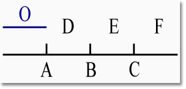

|
|
|
|
|
|
|
Originally compiled and published in 1887. This arrangement produced by Erik Anderson, 2005, 2006, in consultation with translations from a wide variety of sources. This is a draft edition. Items in red
type subject to revision. |
|
|
|
|
|||


|
|
|
|
|
Contents Fragments from
known works (U1 - U218) Fragments from
uncertain sources (U219 - U607) |
|
|
|
|
|
Testimonials Concerning Epicurus’ Books Diogenes Laertius, Lives of Philosophers, X.26: Epicurus was quite a prolific author, surpassing all in the quantity of books produced. He authored, in fact, some three hundred books, and he never cited any other authors – all the words contained in them were Epicurus’ own. Chrysippus tried to match his vast literary output, but Carneades denounced him as a literary parasite: “Indeed, if Epicurus had written something, Chrysippus would vie to write just as much. To accomplish this, he wrote down whatever popped into his head and often repeated himself. In his haste, he neglected to do any editing, and he used many lengthy citations to the point of filling his entire books with them, not unlike Zeno and Aristotle.” Among the writings of Epicurus, the following are his best: · On Nature, in thirty-seven books · On the Atoms and the Void · On Love · Summary of Objections to the Physicists · Against the Megarians · Problems · Principal Doctrines · On Choices and Avoidances · On the End-Goal · On the Criterion, or The Canon · Chaeredemus · On the Gods · On Holiness · Hegesianax · On Lifecourses, in four books · On Fair Dealing · Neocles, Dedicated to Themista · Symposium · Eurylochus, Dedicated to Metrodorus · On Vision · On the Angle of the Atom · On the Sensation of Touch · On Destiny · Theories of the Passions, against Timocrates · Prognostication · Exhortation to Study Philosophy · On Images · On Sensory Presentation · Aristobulus · On Music · On Justice and Other Virtues · On Gifts and Gratitude · Polymedes · Timocrates, in three books · Metrodorus, in five books · Antidorus, in two books · Theories about Diseases [and Death], Dedicated to Mithres · Callistolas · On Kingship · Anaximenes · Letters Diogenes Laertius, Lives of Philosophers, I.16 (Prologue): Many books were written by Zeno, even more by Xenophanes, even more by Democritus, even more by Aristotle, even more by Epicurus, and even more by Chrysippus. Diogenes Laertius, Lives of Philosophers, VII.181 (Chrysippus): Apollodorus of Athens, in his “Collection of Philosophical Doctrines,” wanting to show that the works of Epicurus (written by his own efforts rather than propped up with citations) were infinitely more numerous than those of Chrysippus, said in the precise terms, “Indeed if one were to remove from Chrysippus’ books all the citations taken from elsewhere, nothing but a blank page would remain.” Suda, “Epicurus” {epsilon-2404}: His writings, in sum, are numerous. Arrian, Diatribes of Epictetus, I.20.19: Why, Epicurus, do you even light a lamp and labor for our sake, and write so many books? Ibid, II.20.9: Dear fellow, why do you bother yourself about us? Why do you keep up a vigil on our account, for which you light a lamp? Why do you get up? Why do you write so many big books? Is it to keep one or another of us from being tricked into believing that the gods care for men, or is it to keep one or another of us from supposing that the nature of good is other than pleasure? If this is indeed so, then back to your bed and go to sleep! Seneca, Letters to Lucilius, 46.1: I received your book that you had promised me... how well I find it written, you can know this much: it strikes me as light and elegant, though bulkier than we are accustomed to, so that at first glance it seems to resemble Livy or Epicurus. However, it caught and charmed me so much that I read it from beginning to end in one sitting. Plutarch, Is “Live Unknown” a Wise Precept? 3, p. 1129A: {Rhetorically addressing Epicurus} Don’t send books everywhere to advertise your wisdom to every man and woman ... What sense is there in so many tens of thousands of lines honoring Metrodorus, Aristobulus, and Chaeredemus, and published with so much industry that they cannot remain unknown even after they’re dead? Who are you to call for the obliteration of virtue, the uselessness of skills, silence to philosophy, and forgetfulness of good deeds? Cicero, Tusculan Disputations, II.3.8: Everyone, even those who do not accept their teaching or are not enthusiastic disciples, reads Plato and the rest of the Socratic school and after them their followers, while scarcely anyone beyond their own adherents takes up the works of Epicurus and Metrodorus. Diogenes Laertius, Lives of Philosophers, X.13: He uses plain language in his works throughout, which is unusual, and Aristophanes, the grammarian, reproaches him for it. He was so intent on clarity that even in his treatise On Rhetoric, he didn’t bother demanding anything else but clarity. Cicero, On End-Goals, Good and Bad, I.5.14, (Torquatus to Cicero): “I think that you, like our friend Triarius, are displeased with Epicurus because he neglected the rhetorical embellishments of Plato, Aristotle, and Theophrastus. I find it hard indeed to figure out why you think his opinions untrue.” (Cicero to Torquatus): “You will see, Torquatus,” said I, “how mistaken you are. I am not annoyed by this philosopher’s style. He is straightforward, expressing simple and plain concepts in a way that is easy to understand; though I do not despise eloquence in a philosopher either – but if he doesn’t have it, I do not insist on it. It’s in the contents where he does not satisfy me, and in many places.” Aulus Gellius, Attic Nights, II.9.4: In the same book {Book II of the Essays On Homer}, Plutarch finds fault again with Epicurus for using an inappropriate word and giving it an incorrect meaning. Now Epicurus wrote as follows: “The pinnacle of pleasure is the removal of everything that pains.” Plutarch declares that he ought not have said “of everything that pains,” but “of everything that is painful;” for it is the removal of pain, he explains, that should be indicated, not of that which causes pain. In bringing this charge against Epicurus, Plutarch is “word-chasing” with excessive nit-picking and almost with frigidity; for rather than hunting up such verbal meticulousness and such refinements of diction, Epicurus hunts them down {implying that Epicurus deliberately eliminates them}. Cicero, On End-Goals, Good and Bad, II.4.12: You Epicureans frequently tell us we do not correctly understand what pleasure might be which Epicurus refers to... Ibid. II.5.15 Nevertheless, supposing that I don’t understand Epicurus’ intended meaning... then he himself might possibly be at fault, for speaking in such a way that defies understanding. Obscurity may be excused for two reasons: it might be intentional, like with Heraclitus... or it may reflect the difficulty of the material, rather than the rhetoric, as, for example, in Plato’s Timaeus. But Epicurus, as far as I can tell, neither refuses to speak in a simple and explicit manner whenever he can, nor does he speak here about an obscure subject, such as physics, or an artificial and technical subject, like mathematics. Pleasure is an easy topic that everyone can relate to. Cicero, On The Nature of The Gods, I.31.85 (Cotta speaking): Regarding the formulation of this maxim {Epicurus’ first Principal Doctrine}, there are those who think that this simple man was deliberately vague, when in fact the ambiguity arose from his inability to express himself plainly. Cicero, On End-Goals, Good and Bad, II.6.18: Epicurus, by despising the dialectic, which encompasses the whole science of discovering the nature of things, judging their qualities, and how to do it with methodic rationality, stumbles, I say. He fails to even half-way distinguish what he desires to convey. Ibid, II.9.27: Epicurus despises expressive eloquence; he speaks in confused manner. Cicero, On Divination, II.50.18: Epicurus, whom the Stoics usually describe as stupid and crude... Aelius Theon, Preliminary Exercises, Rh. W. 1 p. 169, Sp. II p. 71.7 {II.154 Butts}: One must also pay attention to the arrangement of words, by providing instruction about all the ways in which they will avoid faulty arrangement, but especially metrical and rhythmical style, like many of the phrases of the orator Hegesias and the orators call Asianist, as well as some of the phrases of Epicurus, such as... {continued at U131 & U105} Athenaeus, Deipnosophists, V p. 187C: What need is there even to speak of the lack of proportion which pervades his style? Cleomedes, Lectures on Astronomy, II.1 [p. 112 Bak.] {p. 489 Bowen and Todd}: Epicurus claims that he alone has found the truth through his vast wisdom and knowledge, and so thinks it right that he should also take first prize. That is why I would believe it to be quite wrong for someone to say to him: “Babbling Thersites, clear orator though you are, hold off!” {Homer, Iliad 2.246-247}. For I would not also call this Thersites “clear,” as Odysseus does the Homeric one, when on top of everything else his mode of expression is also elaborately corrupt. He speaks of “tranquil conditions of flesh” and “the confident expectations regarding it” and describes a tear as a “glistening of the eyes,” and speaks of “sacred ululations” and “titillations of the body” and “debaucheries” and other such dreadful horrors. Some of these expressions might be said to have brothels as their source, others to resemble the language of women celebrating the rites of Demeter at the Thesmorphoria, still others to come from the synagogue and its suppliants – debased Jew talk, far lower than the reptiles! Sextus Empiricus, Against the Professors, I.1: In his ignorance, Epicurus is subject to blame in many respects; even in ordinary conversation his speech was not correct. Cicero, On The Nature of The Gods, II.17.46 (Balbus speaking): Epicurus may make a joke of this if he likes, although humor was never his strong point – an Athenian without the “Attic salt!” Cicero, On The Nature of The Gods, I.44.123 (Cotta speaking): Epicurus himself wrote a book on the sanctity of the gods. In this book the reader is fooled by a man who wrote not so much with irony as with wild abandon! Dionysius of Halicarnassus, On the Composition of Words, 24, p. 188: I ask for the indulgence of the Epicurean company, who have no regard for these things. The dictum that “writing presents no difficulties to those who do not aim at a constantly changing standard,” which Epicurus himself propounded, was intended as a talisman to ward off the charge of extreme sloth and stupidity. Cicero, Brutus, I.35.131: Titus Albucius grew up in Athens and left there a perfect Epicurean, typically lacking the capacity for eloquence. |
|
|
|
|
|
Fragments from Known Works
Diogenes Laertius, Lives of Philosophers, X.27: (noted above) Diogenes Laertius, Lives of Philosophers, X.136: Regarding pleasure, he differs from the Cyrenaics, who do not recognize katastematic pleasures, but only pleasures in motion. But he recognizes both: that of the mind, and that of the body, as he states in his work On Choices and Avoidances, in his treatment On the End-Goal, in the first book On Lifecourses and in his Letter to the Philosophers of Mytilene. And Epicurus in his book On Choices... remarks, “Indeed, freedom from anxiety and the absence of pain are katastematic pleasures, while joy and delight are regarded as pleasures in motion and in action.” Diogenes Laertius, Lives of Philosophers, X.28: (noted above) Philodemus, On Anger, Vol. Herc. (2) I.68 [p. 149 Gomperz] Diogenes Laertius, Lives of Philosophers, X.28: (noted above) cf. Plutarch, Against Colotes, 32, p. 1126A: If, he (Colotes) had directed a book against Antidorus or the sophist Bion, regarding laws and government and ordinances, no one would have retorted, “Oh poor wretch, lie still in your blankets {Euripides, Orestes, 258}, and cover your miserable flesh; accuse me of these things only after having real-life experience managing a household and political service.” But such are exactly whom Colotes has insulted. Diogenes Laertius, Lives of Philosophers, X.8: And he called Antidorus “Sannidorus” {a fawning gift-bearer}. cf. Diogenes Laertius, Lives of Philosophers, X.28: On justice and the other virtues (XIV). Diogenes Laertius, Lives of Philosophers, X.28: (noted above) Plutarch, That Epicurus actually makes a pleasant life impossible, 22, p. 1103A: Metrodorus, Polyaenus, and Aristobulus were sources of “confidence” and “joy” to Epicurus; indeed he continually cared for them when they were ill and mourned them when they died. Diogenes Laertius, Lives of Philosophers, X.27: (noted above) Diogenes Laertius, Lives of Philosophers, X.28: (noted above) Diogenes Laertius, Lives of Philosophers, X.28: (noted above) Diogenes Laertius, Lives of Philosophers, X.28: (noted above) Plutarch, That Epicurus actually makes a pleasant life impossible, 13, p. 1095C: Epicurus ... allows no place, even over wine, for questions about music and the inquires of critics and scholars and actually advises a cultivated monarch to put up with recitals of stratagems and with vulgar buffooneries at his drinking parties sooner than with the discussion of problems in music and poetry. Such is what he is presumed to have written in his book On Kingship. Plutarch, Against Colotes, 33, p. 1127A: For when these men write to each other, they write ... [in] On Kingship to avoid the company of kings. 10. On Lifecourses, in 4 Books Diogenes Laertius, Lives of Philosophers, X.27: (noted above) Diogenes Laertius, Lives of Philosophers, X.30: His ethical doctrine deals with choice and avoidance, which may be found in the books On Lifecourses, in the letters, and in the book On the End-Goal. Book I Diogenes Laertius, Lives of Philosophers, X.136: (noted above) Diogenes Laertius, Lives of Philosophers, X.119: The Sage will not get involved in politics, as he relates in his first book On Lifecourses, nor will he make himself a tyrant. Cicero, Letters to Atticus, XIV.20.5: You mention Epicurus and dare to say “stay out of politics.” Cicero, Letters to Friends, VII.12: {February, 53 BCE} My dear friend Pansa {Caius Vibius Pansa} has informed me that you {Caius Trebatius Testa} have become an Epicurean ... what shall ever become of your people of Ulubrae if you lay it down that it is improper to “to occupy oneself in politics?” Cicero, On the Laws, I.13.39: Those {Epicurean} philosophers ... test the desirability or undesirability of everything on the basis of pleasure and pain. Let us, even if they are right (for there is no need to quarrel with them here), bid them to carry on their discussions in their own little gardens, and even request them to abstain for a while from taking any part in matters affecting the State, which they do not acknowledge, never have they ever wanted to. Plutarch, Against Colotes, 34, p. 1127D: As they banished laws and governments, they banished human life. This is what Epicurus and Metrodorus do when the dissuade their disciples from politics, and dispute those engaged in it. Ibid., 33, p. 1127A: ... but these men, if they write about such matters at all, write on government to deter us from taking part in it, on oratory to deter us from public speaking, and about kingship to make us shun the company of kings. Ibid., 31, p. 1125C: Who are these men that nullify these things, overthrowing the state and utterly abolishing the laws? Is it not those who withdraw themselves and their disciples from participation in the state? Plutarch, Advice about Keeping Well 22, p. 135C: Xenocrates did not keep in better health than Phocion, nor Theophrastus than Demetrius, and the running away from every activity that smacked of ambition did not help Epicurus and his followers at all to attain their much-talked-of condition of “perfect bodily health.” Ibid., 22, p. 135B: {It does not befit a man to be} ... far removed from the duties of citizenship. Seneca, Letters to Lucilius, 90.35: The philosophy I speak of is not the one {Epicureanism} which takes the citizen out of public life and the gods out of the world we live in, and hands morality over to pleasure... Commentary on Lucan, Pharsalia (The Civil War), II.380, p. 75.13: Epicurus, saying that everything is done for the sake of pleasure, dissuades the Sage from duty and political activity, and asserts that he need only live for himself. Seneca, On Leisure (to Serenus), 3.2: The two sects, the Epicureans and the Stoics, are at variance, as in most things, in this matter also; they both direct us to leisure, but by different roads. Epicurus says “The Sage will not engage in public affairs except in an emergency.” Zeno says “He will engage in public affairs unless something prevents him.” The one seeks leisure by fixed purpose, the other for a special cause. Philodemus, On Rhetoric, Vol. Herc. 2, IV.77 [Oxon. II.85]: ........ Epicurus wrote exactly this in his first book On Lifecourses and in his work On Wealth, and Metrodorus in his work Against Those Who Claim that Natural Philosophers are Talented Rhetoricians. Philodemus, On Rhetoric, Vol. Herc. 2, IV.107 [Oxon. II.115] & Vol. Herc. 2, V.44 Book II Philodemus, On Piety, Vol. Herc. 2, II.108 [p. 126.26 Gomperz] {Obbink I.31.896}: And concerning obeisance in his {“second book,” Usener renders} On Lifecourses, {saying of Epicurus presumed to follow} Philodemus, On Piety, Vol. Herc. 2, II.110 [p. 128.5 Gomperz] {Obbink I.26.730}: Furthermore, it will appear that Epicurus loyally observed all the forms of worship and enjoined his friends to observe them, not only because of the laws but for physical causes as well. For in On Lifecourses he says that to pray is natural for us, not because the gods would be hostile if we did not pray, but in order that, according to the understanding of beings surpassing in power and excellence, we may realize our fulfillments and social conformity with the laws. Diogenes Laertius, Lives of Philosophers, X.119: As Epicurus says in the second book On Lifecourses, the Sage doesn’t behave like a Cynic, nor becomes a beggar. Diogenes Laertius, Lives of Philosophers, X.119: But even if he loses his eyesight, the Sage must esteem himself worthy of life, as Epicurus says in the same book. Cf., Plutarch, That Epicurus actually makes a pleasant life impossible, 18, p. 1100A: Indeed, was he not himself so impatient for renown that he not only disowned his teachers, clashed with Democritus (whose doctrines he filched word for word) about syllables and serifs, but also said that except for himself and his pupils, no one had ever been a Sage? Philodemus, On Frank Criticism, Vol. Herc. 1, V.2, fragment. 20: ... treating with moderate words, because of their eagerness and their benefit to us, if they were able, and further because of the pardon meted out for the things in which they slipped up, as Epicurus consistently maintains both in his book Against Democritus and against Heraclides in ... Cicero, Tusculan Disputations, I.34.82: Suppose that the soul perishes like the body: is there then any definite sense of pain or sensation at all in the body after death? There is no one who says so, though Epicurus accuses Democritus of this, but the followers of Democritus deny it. And so there is no sensation in the soul either, for the soul is nowhere. Diogenes Laertius, Lives of Philosophers, X.27: (noted above) Plutarch, Against Colotes, 34, p. 1127D: That their war, moreover, was not with lawgivers but with laws we may learn from Epicurus, who asks himself in his Problems whether the Sage who knows that he will not be found out will do certain things that the laws forbid. He answers, “an unqualified prediction is not free of difficulty” – which means, “I shall do it but I do not wish to admit it.” Cicero, On End-Goals, Good and Bad, II.9.28: Epicurus often seems unduly eager to approve of pleasure in the common definition of term, and this occasionally lands him in a very awkward position. It conveys the impression that that no action is so base that he wouldn’t do it for the sake of pleasure, as long as a guarantee of secrecy was provided. Diogenes Laertius, Lives of Philosophers, X.119: Nor, again, will the Sage marry and rear a family – so Epicurus says in his Problems and in the work On Nature. Though occasionally he may marry in accordance with special circumstances in his life. Arrian, Diatribes of Epictetus, I.33.3: Why, oh Epicurus, do you dissuade the Sage from raising children? What do you fear, that doing so would bury you in pains? (6): Yet, he dares to say “we must not raise children.” Seneca, (On Marriage Fragment 45 [Haase]) by way of St. Jerome, Against Jovinianus, I.48 [p. 317 Vall.]: Epicurus, champion of pleasure, though his disciple Metrodorus had Leontium as his wife, maintained that the Sage need only marry in rare cases, seeing that marriage entails many nuisances. And as riches, honors, bodily health, and other things which we call indifferent, are neither good nor bad, but stand “midway,” so to speak, and become good and bad according to the use and issue, so wives stand on the border line of good and ill. It is, moreover, a serious matter for a Sage to ponder whether he is going to marry a good or a bad woman. {cf. Clement of Alexandria, Proof of the Gospels II.23 p. 181, 27 [Sylb.]; Theodoretus, Remedies for the Errors of the Greeks, [p. 479 Gaisf.]} Plutarch, That Epicurus actually makes a pleasant life impossible, 13, p. 1095C: The absurdity of what Epicurus says! On the one hand, he declares in his Problems that the Sage is a lover of spectacles and yields to none in the enjoyment of theatrical recitals and shows; but on the other, he allows no place, even over wine, for questions about music and the inquires of critics and scholars and actually advises a cultivated monarch to put up with recitals of stratagems and with vulgar buffooneries at his drinking parties sooner than with the discussion of problems in music and poetry. [cf. U5] Ibid., 12, p. 1094E: Now it has not escaped Epicurus that bodily pleasures, like the Etesian winds, after reaching their full force, slacken and fail; thus he raises the Problem whether the Sage when old and impotent still delights in touching and fingering the fair. In this he is not of the same mind as Sophocles, who was as glad to have got beyond reach of this pleasure as of a savage and furious master. Diogenes Laertius, Lives of Philosophers, X.27: (noted above) 14. On Justice and the Other Virtues Diogenes Laertius, Lives of Philosophers, X.28: (noted above) Diogenes Laertius, Lives of Philosophers, X.28: (noted above) Sextus Empiricus, Against the Professors, I.49: ... Epicurus, although he seems to be bitterly hostile to the Professors of Arts and Sciences, tries to prove in his book On Gifts and Gratitude that it is necessary for the wise to learn literacy. Diogenes Laertius, Lives of Philosophers, X.28: (noted above) Diogenes Laertius, Lives of Philosophers, X.28: (noted above) Philodemus, On Piety, Vol. Herc. 2, II.106 [p. 124.18 Gomperz] {I.37.1061 Obbink}: And in his book On Destiny there is an exposition concerning the assistance provided by them {the gods}. Scholion on Epicurus, Letter to Herodotus, by way of Laertius, Lives, X.39: “Everything is comprised of bodies and space.” This he says also in The Big Summary near the beginning and in his first book On Nature. Scholion on Epicurus, Letter to Herodotus, by way of Laertius, Lives, X.40: “Again, some bodies are composites, while others are elements from which composite bodies are made.” He repeats this in the first book On Nature, and in books 14 and 15, and in The Big Summary. Scholion on Epicurus, Letter to Herodotus, by way of Laertius, Lives, X.73: “We ascribe the attribute of time to days and nights and their parts, and likewise to feelings of pleasure and pain and to neutral states, to states of movement and states of rest, conceiving a peculiar accident of these to be this very characteristic which we express by the word time.” He says this both in the second book On Nature and in The Big Summary. Diogenes Laertius, Lives of Philosophers, X.135: In other places, he refutes every type of prognostication, as in The Small Summary, saying that “Prognostication doesn’t exist, and if even if it did, we must regard whatever it predicts as nothing to us.” Diogenes Laertius, Lives of Philosophers, X.27: (noted above) 21. Eurylochus, Dedicated to Metrodorus Diogenes Laertius, Lives of Philosophers, X.28: (noted above) Cicero, On the Nature of the Gods, I.14.115 (Cotta speaking): It is true that Epicurus wrote books about the sanctity of the gods and the need for reverence towards them. But what does he actually say? He writes in such a style that one would imagine that one was listening to some high priest such as Cronucianus or Scaevola and not to the man who destroyed the whole foundation of religious faith and overturned the altars and the temples of the gods – not by brute force, as Xerxes did, but by force of argument. How can you say that mankind should revere the gods, if the gods themselves not only have no care for man, but care for nothing whatsoever and have no influence on anything? Ibid., I.14.123: But, you will say, Epicurus himself wrote a book on the sanctity of the gods. In this book the reader is fooled by a man who wrote not so much with irony as with wild abandon! For what have we to do with holiness, if the gods have no concern with us? Diogenes Laertius, Lives of Philosophers, X.27: (noted above) Cicero, On Divination, II.27.59: But are we simple and thoughtless enough to think it a portent for mice to gnaw something, when gnawing is their one business in life? ... Hence, if one follows this type of reasoning, the fact that, at my house, mice recently gnawed my Plato’s Republic should fill me with alarm for the Roman republic; or if they had gnawed my Epicurus On Pleasure I should have expected a rise in the market price of food. Cicero, On End-Goals, Good and Bad, I.21.67: In your discourses, history is dumb. In the school of Epicurus, I never heard one mention of Lycurgus, Solon, Miltiades, Themistocles, Epaminondas, who are always on the lips of the other philosophers. (68) Would it not be better to talk of these than to devote those bulky volumes to Themista? Cicero, Against Lucius Calpurnius Piso, 26.62: A short while ago you waxed sarcastic upon Marcus Piso’s desire for a triumph... and you despise the things which those “ignoramuses,” as you are pleased to call them, deemed glorious. ... You, who have conquered nations so mighty, and done deeds so doughty, ought to have been the last to despise the fruit of your labors, the rewards of your risks, and the decoration due to your heroism. Nor indeed did you despise them, wiser than Themista though you be; but your shrank from exposing your face of steel to the lash of the senate’s reproach. Ibid., 25.60: Your disposition will then take another theme, and you will take triumphs as your subject. “What,” you will ask, “is the use of yon chariot, of the generals that walk in chains before it, of the models of towns, of the gold and the silver, of the lieutenants and the tribunes on horseback, of the shouting of the troops, and of all the pageantry of the show? Vanity, mere vanity I tell you – scarce more than a child’s diversion – to hunt applause, to drive through the city, to wish to be a gazing-stock. In none of them is there anything substantial, anything that you can grasp, anything that you can associate with bodily pleasure.” Ibid., 27.65: Trust yourself to the people; make your venture at these games. Are you afraid of hisses? Where are your disquisitions? Do you fear to be hooted? That again is no matter to worry a philosopher. Do you fear physical violence? Aye, there’s the rub; pain is an evil, according to your view. 26. Against Theophrastus (at least 2 books) Cicero, On the Nature of the Gods, I.33.93 (Cotta speaking): Was it on the basis of dreams like this that Epicurus and Metrodorus and Hermarchus attacked Pythagoras, Plato and Empedocles, and that little harlot Leontium dared to write criticisms of Theophrastus? Perhaps she did write good Greek: but all the same...! Such was the degree of license tolerated in the Garden of Epicurus! Pliny, Inquiry on Nature, Preface 29: I am informed that both the Stoics and the Academy, and also the Epicureans – as for the philologists, I always expected it from them – are in travail with a reply to my publications on Philology, and for the last ten years have been having a series of miscarriages – for not even elephants take so long to bring their offspring to birth! Cf. Philodemus, Vol. Herc. 2, I.149: Boasting that Leontium and another {Themista} are mentioned in the treatise... {cf. Pliny, Inquiry on Nature, XXXV.114} Book II Plutarch, Against Colotes, 7, p. 1110C: {citing Epicurus} “But, apart from this, I don’t know how one might affirm that these objects placed in the dark have color.” {cf. U30} Aetius, Doxography, I.15.9 [p. 314.11 Diels]: Epicurus and Aristarchus maintain that objects placed in the dark have no color. Plutarch, Against Colotes, 7, p. 1110C: It is not hard to see that this reasoning may be applied to every object called or commonly held to be biter, sweet, cathartic, soporific, or luminous: that none has a self-contained quality or potency or is more active than passive on entering the body, but acquires different properties as it blends with different bodies. Accordingly, Epicurus himself in the second book Against Theophrastus, when he says that colors are not intrinsic to bodies but a result of certain arrangements and positions relative to the eye, is asserting by this reasoning that body is no more colorless than colored. Earlier in the word, he writes word for word as follows: “{= U29}, True, it often happens that when objects are enveloped in air of the same degree of darkness, some people perceive a distinction of color while others whose eyesight is weak do not; again, on first entering a dark room we see no color, but do after waiting a short time.” Therefore no body will any more be said to have color than not. If color is relative, white and blue will be relative; and if these, then also sweet and bitter, so that of every quality we can truly say, “It is no more this than it is not this;” for to those affected in a certain way the thing will be this, but not to these not so affected. Diogenes Laertius, Lives of Philosophers, X.27: (noted above) Plutarch, That Epicurus actually makes a pleasant life impossible, 21, p. 1102B: Out of fear of public opinion, Epicurus goes through a mummery of prayers and obeisance that he has no use for and pronounces words that run counter to his philosophy; when he sacrifices, the priest at his side who immolates the victim is to him a butcher; and when it is over he goes away with Menander’s words on his lips: “I sacrificed to gods who heed me not.” For this is the comedy that Epicurus thinks we should play, and not spoil the pleasure of the multitude or make ourselves unpopular with them by showing dislike ourselves for what others delight in doing. ... Here, the Epicureans are themselves no better than they, since they do the same form fear and do not even get the measure of happy anticipation that the others have, but are merely scared and worried that this deception and fooling of the public might be found out, with an eye to whom their books On the Gods and On Piety have been composed, “in twisted spirals, slanted and askew” {Euripides, Andromeda, 448}, as in fear they cover up and conceal their real beliefs. Philodemus, On the Life of the Gods, Vol. Herc. 1, VI fr. 5: Epicurus also gave definitions for these in the book On the Gods. Thus, whereas he also affirms that body and flesh are susceptible to decay, the assumption... Philodemus, On Piety, Vol. Herc. 2, II.122 [p. 137, 17 Gomperz] {Obbink I.7.190}: And according to Epicurus in On the Gods, that which does not have in its nature the sensitive constitution is consistent with its divinity; and divine nature appears to be that which is not of the nature that partakes of pains (so that it necessarily creates many weaknesses). Philodemus, On Piety, Vol. Herc. 2, II.104 [p. 122, 13 Gomperz] {Obbink I.44.1258}: ... and to dispel what is foreign to its nature, and to marshal all its overpowering strength, nor in On the Gods does he say anything conflicting with one’s doing these things. Philodemus, On Piety, Vol. Herc. 2, II.117 [p. 133, 17 Gomperz] {Obbink I.14.381}: ... in his book On the Gods indisputably ...... not to consider among whole entities or ..... Diogenes Laertius, Lives of Philosophers, X.28: (noted above) 29. On the Criterion, or The Canon Diogenes Laertius, Lives of Philosophers, X.28: (noted above) Damoxenes (comic poet), The Cook, by way of Athenaeus, Deipnosophists, III p. 102B:
Diogenes Laertius, Lives of Philosophers, X.30: Thus, the philosophy of Epicurus is subdivided into three parts: Canonics, Physics, and Ethics. Canonics forms the introduction to the system and is contained in a single work entitled The Canon. Ibid., X.14: Ariston {of Alexandria} says in his Life of Epicurus that he derived his work entitled The Canon from the Tripod of Nausiphanes, adding that Epicurus had been a pupil of this man as well as of the Platonist Pamphilus in Samos. Cicero, On End-Goals, Good and Bad, I.19.63 (Torquatus to Cicero): Besides, it is only by firmly grasping a well-established scientific system, observing the standard or Canon that has fallen as it were from heaven, so that all men may know it – only by making that Canon the test of all our judgments, that we can hope always to stand fast in our belief, unshaken by the eloquence of any man. Cicero, On the Nature of the Gods, I.16.43 (Velleius speaking): What race of men or nation is there which does not have some untaught apprehension of the gods? Such an innate idea Epicurus calls prolepsis, that is to say, a certain form of knowledge which is inborn in the mind and without which there can be no other knowledge, not rational thought or argument. The force and value of this doctrine we can see from his own inspired work on The Canon. Plutarch, Against Colotes, 9, p. 1118A: Reading the heaven-sent Canons did not make bread appear as bread to Colotes and grass appear as grass, whereas Socrates’ charlatanism gave bread to him the appearance of grass and grass the appearance of bread. Ibid., 28, p. 1123F: For if men not laden with drink or stupefied by strong medicine and out of their right minds, but sober and in perfect health, writing books on truth and norms and standards of judgment... Alciphron, Letters (Letters of Courtesans), 17.II.2 (Leontium depicted writing to Lamia): How long can one suffer this philosopher? Let him keep his books On Nature, the Principal Doctrines, The Canon, and, my lady, let me be mistress to myself, as Nature intended, without anger and abuse. Arrian, Diatribes of Epictetus, II.23.21: Even if the flesh itself called itself most excellent, one would not have tolerated such a statement. So what is it, Epicurus, that makes such a declaration? that composed the treatise On the End-Goal, or On Nature, or On the Criterion? that caused you to let your beard grown long? Diogenes Laertius, Lives of Philosophers, X.31: In The Canon Epicurus states that the sensations, the prolepses, and the passions are the criteria of truth. Diogenes Laertius, Lives of Philosophers, X.31: They reject the dialectic as superfluous; holding that in their inquiries the physicists should be content to employ the ordinary terms for things. Now in The Canon Epicurus states that the sensations, the prolepses, and the passions are the criteria of truth [= U35]; the Epicureans generally make perceptions of mental presentations to be also standards. ... Every sensation, he says, is devoid of reason and incapable of memory; for neither is it self-caused nor regarded as having an external cause, can it add anything thereto or take anything therefrom. Nor is there anything which can refute sensations or convict them of error: one sensation cannot convict another and kindred sensation, for they are equally valid; nor can one sensation refute another which is not kindred but heterogeneous, for the objects which the two senses judge are not the same; nor again can reason refute them, for reason is wholly dependent on sensation; nor can one sense refute another, since we pay equal heed to all. And the reality of separate perceptions guarantees the truth of our senses. But seeing and hearing are just as real as feeling pain. Hence it is from plain facts that we must start when we draw inferences about the unknown. For all our notions are derived from perceptions, either by actual contact or by analogy, or resemblance, or composition, with some slight aid from reasoning. And the objects presented to madmen and to people in dreams are true, for they produce effects – i.e., movements in the mind – which that which is unreal never does. Diogenes Laertius, Lives of Philosophers, X.27: (noted above) Diogenes Laertius, Lives of Philosophers, X.28: (noted above) Cf. Plutarch, Is “Live Unknown” a Wise Precept? 3, p. 1129A: Of the tens of thousands of lines written to honor Metrodorus, Aristobulus, Chaeredemus, and composed with no small labor... Book I Diogenes Laertius, Lives of Philosophers, X.23: He {Metrodorus} showed dauntless courage in meeting troubles and death, as Epicurus declares in the first book of his Metrodorus memoirs. Diogenes Laertius, Lives of Philosophers, X.28: (noted above) 33. Neocles, Dedicated to Themista Diogenes Laertius, Lives of Philosophers, X.28: (noted above) 34. Theories about Diseases [and Death], Dedicated to Mithres Diogenes Laertius, Lives of Philosophers, X.28: (noted above) Diogenes Laertius, Lives of Philosophers, X.28: (noted above) Diogenes Laertius, Lives of Philosophers, X.27: (noted above) Plutarch, That Epicurus actually makes a pleasant life impossible, 21, p. 1102C: The books On the Gods and On Holiness. [cf. U30] Cicero, On the Nature of the Gods, I.41.115 (Cotta speaking): ... Epicurus also wrote books On Holiness and and On Devotion. (noted above) Philodemus, On Piety, Vol. Herc. 2, II.104-105 [pp. 122- Gomperz] {Obbink I.44.1258 + I.40.1130}: And in On Holiness he calls the life of perfection the most pleasant and most blessed, and instructs us to guard against all defilement, with our intellect comprehensively viewing the best psychosomatic dispositions, for the sake of fitting all that happens to us to blessedness. || ...manner, on account of these things impiously does away with the whole notion of divinity together with the preservation of common beliefs, and that, as those who are said to be religious think, it hurls us into unsurpassable impiety. For pious is the person who preserves the immortality and consummate blessedness of a god together with all the things included by us; but impious is the person who banishes wither where a god is concerned. And the person who sees also that the good and ill sent us by a god come without any unhealthy anger or benevolence, declares that a god has no need of human things... Philodemus, On Piety, Vol. Herc. 2, II.83 [p. 113.3 Gomperz] {Obbink I.8.205}: And having written another book On Holiness, in it too he makes clear that not only that thing which exists indestructibly, but also (that which) continually exists in perfection as one and the same entity, are termed in the common usage “unified entities,” some of which entities are perfected out of the same elements and others from similar elements. Philodemus, On Piety, Vol. Herc. 2, II.80 [p. 110.3 Gomperz] {Obbink I.13.350}: For it is possible for beings constituted out of similarity for ever to have perfect happiness, since unified entities can be formed no less out of identical than out of similar elements and both kinds of entity are recognized by Epicurus as being exactly the same things, for example in his book On Holiness. The demonstration that this involves no contradiction may be passed over. Therefore he was wont to say that nature brought all these things to completion alike. And that for the most part they come about when they are formed from an aggregation of various similar particles, ... Uncertain Author, Vol. Herc. 2, X.201 fr. XLIV: ... in other places, such as in his work On Holiness, and in the 12th and 13th books On Nature, and in the first of his books On Timocrates. 37. Theories on the Passions, against Timocrates Diogenes Laertius, Lives of Philosophers, X.28: (noted above) Philodemus, On Wealth, Vol. Herc. 2, III.101 Cf. Cicero, On End-Goals, Good and Bad, II.17.55: According to your {Epicurean} school, it is right to try to get money even at some risk; for money procures many very delightful pleasures. Philodemus, On Wealth, Vol. Herc. 2, III.98 Philodemus, On Wealth, Vol. Herc. 2, III.91 Philodemus, On Wealth, Vol. Herc. 2, III.96 Diogenes Laertius, Lives of Philosophers, X.28: (noted above) Diogenes Laertius, Lives of Philosophers, X.28: (noted above) 41. Exhortation to Study Philosophy Diogenes Laertius, Lives of Philosophers, X.28: (noted above) Plutarch, Against Colotes, 33, p. 1127A: ...they write on rhetoric to deter us from oratory... Quintilian, Institutio Oratoria, II.17, 15: As for Epicurus, who shirked all disciplines, his statements on the subject do not surprise me at all {because he had written against the use of rhetoric}. [Cf. XII 2, 24 (fr. 156).] Philodemus, On Rhetoric, Vol. Herc. 2, V.54 Metrodorus, On Poems, I, by way of Philodemus, On Rhetoric, Vol. Herc. 2, V.58 Philodemus, On Rhetoric, Vol. Herc. 2, V.48 Philodemus, On Rhetoric, Vol. Herc. 2, V.51: ... to truly establish that, according to Epicurus, rhetoric is an art. Philodemus, On Rhetoric, Vol. Herc. 2, IV.73 [= Oxon. II.81]: According to Epicurus’ disciples, they say that argument is the art of composing lectures and of apodictic oratory, while the articulation of legal proceedings and political harangues are not arts. Philodemus, Commentary On Rhetoric, I, col. VII, Vol. Herc. V.35 Philodemus, On Rhetoric, Vol. Herc. 2, IV.106 [= Oxon. II.144 & Vol. Herc. 2, V.43] Philodemus, On Rhetoric, Vol. Herc. 2, V.51 Philodemus, On Rhetoric, Vol. Herc. 2, IV.93 [= Oxon. II.101] Ammianus Marcellinus, History of Rome, XXX 4, 3: The rich genius of Plato defines this calling, pogitikês moríon eídolon, i.e., forensic oratory, as an image of a part of politics; but Epicurus calls it kakotechnía “a vile technique.” Philodemus, On Rhetoric, Vol. Herc. 2, IV.78 Philodemus, On Rhetoric, Vol. Herc. 1, IV (chapters 3-6, pages 210-, Gros edition) Diogenes Laertius, Lives of Philosophers, X.13: ...in his On Rhetoric, he demands clarity above all. Philodemus, On Rhetoric, Vol. Herc. 2, V.57 43. Doctrine of the Elements (12 Books) Scholion on Epicurus, Letter to Herodotus, by way of Laertius, Lives, X.44: He says below that atoms have no quality at all except shape, size, and weight, while in his twelve books of the Elements he states that color varies with the arrangement of the atoms. Diogenes Laertius, Lives of Philosophers, X.28: (noted above) Plutarch, Table Talk, I, proem, p. 612D: This most famous philosophers, Plato, Xenophon, Aristotle, Speusippus, Epicurus, Prytanis, Hieronymus, and Dio of the Academy, who all considered the recording of conversations held at table a task worth some effort. Athenaeus, Deipnosophists, V p. 186E: We will now talk about the Homeric symposia. In these, namely, the poet distinguishes times, persons, and occasions. This feature Xenophon and Plato rightly copied, for at the beginning of their treatises they explain the occasion of the symposium, and who are present. But Epicurus specifies no place, no time; he has no introduction whatsoever. One has to guess, therefore, how it comes about that a man with cup in hand suddenly propounds questions as though he were lecturing before a class. Ibid., 187B: Homer introduces guests who differ in their ages and views of life – Nestor, Ajax, Odysseus – all of whom, speaking generally, strive after excellence, but have set out in specifically diverse paths to find it. Epicurus on the other hand, introduced none but prophets of atoms, although he had before him these as his models, such as the variety of symposia of the Poet {Homer}, and the charm of Plato and Xenophon as well. 177B: Epicurus, however, portrayed a symposium solely of philosophers. Ibid., 179B: Again, Homer tells us what we are to do before we begin to eat, namely, we are to offer as first-fruits some of the food to the gods. ... Homer also shows us the feaster at least offering libations ... all of which Plato also retains in his symposium. But with Epicurus there is no libation, no preliminary offering to the gods; on the contrary, it is like what Simonides says of the lawless woman: “Oftentimes she eats up the offerings before they are consecrated.” Ibid., 182A: In the Symposium of Epicurus there is an assemblage of flatterers praising one another, while the symposium of Plato is full of men who turn their noses up in jeers at one another. ... In Homer, on the other hand, only sober symposia are organized. Athenaeus, Deipnosophists, V p. 187C: Again, Epicurus in his Symposium investigates the subject of indigestion in order to get omens from it; following that, he asks about fevers. What need is there even to speak of the lack of proportion which pervades his style? Plutarch, Against Colotes, 6, p. 1109E: Consider the discussion that Epicurus holds in his Symposium with Polyaenus about the heat in wine. When Polyaenus asks, “Do you deny, Epicurus, the great heating effect of wine?”, he replies, “What need is there to generalize that wine produces heat?” Further on, he says, “For it appears that it is not a general fact that wine produces heat, but a given quantity of wine may be said to produce heat for a given person.” Plutarch, Against Colotes, 6, p. 1109F: Again, after assigning as one cause the crowding and dispersal of atoms, and as another, the mixture and alignment of these with others, when the wine is mingled with the body, he adds in conclusion, “Thus, one should not generalize that wine is productive of heat, but only say that a particular amount produces heat for a particular body in a particular condition, or that such an amount results in chilling for another. For in an aggregate such as wine there are also certain natural substances of such a sort that coolness might be formed of them, or such that, when aligned with others, they would produce a real coolness. Hence, deceived by this, some generalize that wine is cooling, others, that it is heating.” Plutarch, Against Colotes, 6, p. 1110A: If then the man who asserts that the majority are deceived in supposing that what heats is heating or what cools is cooling should refuse to recognize “Everything is no more this than that” as a conclusion from his premises, he is himself deceived. He proceeds to add, “And often the wine does not even possess the property of heating or cooling as it enters the body. Rather, the bodily mass is so set in motion that the corpuscle shift their position: the heat-producing atoms are at one time concentrated, becoming numerous enough to impart warmth and heat to the body, but at another time are driven out, producing a chill.” Plutarch, Table Talk, III 6, 1, p. 653B: Certain young men with no long experience in the ancient literature were attacking Epicurus on the ground that he had introduced in his Symposium an unseemly and unnecessary discussion about the proper time for coition. For an older man to talk about sex in the presence of youths at a dinner-party and weigh the pros and cons of whether one should make love before dinner or after dinner was, they claimed, the extreme of indecency. At this, some of our company brought up Xenophon, who, so to speak, took his guests home after dinner, not on foot, but on horseback, to make love to their wives. And Zopyrus the physician, who was very well acquainted with the works of Epicurus, added that they had not read Epicurus’ Symposium with attention; for Epicurus did not propose the problem as one involving a principle or a settled procedure and then proceed with his discussion of it; but he took the young men for a walk after dinner, conversed with them for the purpose of moral instruction, and restrained them from their lust on the ground that intercourse is always precarious and harmful, and affects worse those who engage in it when the have been eating and drinking. “Indeed,” said he {Zopyrus}, “even if intercourse were the chief topic of his inquiry, would it be to the philosopher’s credit to have refrained entirely from all consideration of the right time and hour for coition? Would it not be better for him to engage, at the proper moment, in rational discussion of such matters? And would it be to his credit that he consider this stage of his discussion not inappropriate to any occasion except drinking and dining, and there shameful?”... This put the young men out of countenance, and they sat in silence. The rest of the company asked Zopyrus to give them an account of what Epicurus had to say about this matter, and he replied that he did not remember the particulars accurately, but thought that the man feared the afflictions resulting from coition, due to the disturbance caused by our bodies entering into the tumult and turmoil of such activity. For wine is generally a brawler, an instigator of tumult, and unsettles our body from its base; and if tranquility and sleep do not take possession of our body when it is in this condition, but the new disturbances of coition supervene, the forces which naturally tie together and cement the body are crushed and dislodged, and there is danger that the body be unseated, like a house shifted from its foundations – for the seed does not flow easily at this time, repletion blocking it, but with effort it is extracted in a clotted mass. Consequently our man says that we must engage in such activity when the body is quiet and ended are the assimilations and fluxes of the nourishment which traverses and quits the body, and must do so before the body is again in need of further nourishment. 654B: Let us consider, if you will, whether it is proper and fitting, or contrary to all justice, for Epicurus to deprive Aphrodite of night ... 655A: Surely the body would not suffer greater harm by coition after dinner, as Epicurus thinks it does, provided a man does not make love when he is over-burdened, drunk or stuffed full to the point of bursting. For of course, if that is the case, the thing is precarious and harmful. But if a man is sufficiently himself and moderately relaxed, his body at ease and his spirit disposed and if then after an interval he makes love, he neither causes his body great disturbance, nor does he bring on any morbid excitement or unsettling of atoms, as Epicurus claims. Diogenes Laertius, Lives of Philosophers, X.118: Sexual intimacy, say the Epicureans, never does anyone any good, and one should feel fortunate if it does no harm. Clement of Alexandria, Instructor, II 10, p. 84, 41: It’s a good saying that has come down to us which affirms: “Sexual intimacy never does anyone any good, and one should feel fortunate if it does no harm.” Porphyry, On Abstinence, I.52: It is not surprising that ordinary people think meat-eating contributes to health, for they are just people who think that enjoyment and sex preserve health, whereas these things have never profited anyone, and one must be content if they have done no harm. Galen, Art of Medicine c. 24 t. I [p. 371 K.]: Sexual intercourse, according to Epicurus, is not ever beneficial. Galen, comment on The Epidemics of Hippocrates III, I 4, Art of Medicine XVII, 1, p. 521: What need is there to write ... as Epicurus affirms ... that sexual intimacy never does anyone any good, and one should feel fortunate if it does no harm? Diogenes Laertius, Lives of Philosophers, X.119: Epicurus says in his Symposium that the Sage will not lecture when in a state of drunkenness, nor transact business in an unjust manner. Philodemus, On Rhetoric, Vol. Herc. 2, VII.184 Philodemus, On Rhetoric, Vol. Herc. 2, IV.106 [= Oxon. II.114 & Vol. Herc. 2, V.43]: {cf. U49} Philodemus, On Rhetoric, Vol. Herc. 2, V.44 & IV.107 [= Oxon. II.115]: {cf. U11} Diogenes Laertius, Lives of Philosophers, X.27: (noted above) Diogenes Laertius, Lives of Philosophers, X.30: The ethical part deals with the facts of choice and avoidance. This may be found in the books On Lifecourses, in the Letters, and in his treatise On the End-Goal. (noted above) Cicero, Tusculan Disputations, III.18.41: In that book which embraces all your {Epicurus’} teaching ... the whole book, which deals with the highest good, is packed with words and sentiments of similar character. Cicero, Tusculan Disputations, III.19.44: These admissions Epicurus must make or else remove from his book all that I have rendered word for word, or preferably the whole book should be flung away, for it is brimful of pleasures. Cicero, On End-Goals, Good and Bad, II.7.20: Such is the language that he uses in the lecture dealing solely with the topic of the Chief Good. Arrian, Diatribes of Epictetus, I.23.21 {= Arrian @ U34}: Even if the flesh itself called itself most excellent, one would not have tolerated such a statement. So what is it, Epicurus, that makes such a declaration? that composed the treatise On the End-Goal, or On Nature, or On the Criterion? that caused you to let your beard grown long? Diogenes Laertius, Lives of Philosophers, X.137: As proof that pleasure is the end he adduces the fact that living things, so soon as they are born, are well content with pleasure and are at enmity with pain, by the prompting of nature and apart from reason. Left to our own feelings, then we shun pain; as when even Heracles, devoured by the poisoned robe, cries aloud: “And bites and yells, and rock to rock resounds; Headlands of Locris and Euboean cliffs.” {Sophocles, The Women of Trachis, 786-87} Athenaeus, Deipnosophists, XII p. 546E: Not only Aristippus and his followers, but also Epicurus and his welcomed kinetic pleasure; I will mention what follows, to avoid speaking of the “storms” {of passion} and the “delicacies” which Epicurus often cites, and the “stimuli” which he mentions in his On the End-Goal. For he says “For I at least do not even know what I should conceive the good to be, if I eliminate the pleasures of taste, and eliminate the pleasures of sex, and eliminate the pleasures of listening, and eliminate the pleasant motions caused in our vision by a visible form.” Athenaeus, Deipnosophists, VII p. 280A: Again, in the work On the End-Goal, he says something like this: “As for myself, I cannot conceive of the good if exclude the pleasures derived from taste, or those derived from sexual intercourse, or those derived from entertainments to which we listen, or those derived from the motions of a figure delightful to the eye.” Athenaeus, Deipnosophists, VII p. 278F: For Epicurus does not speak with face muffled, but in a loud voice he declares: “As for myself, I cannot conceive of the good if exclude the pleasures derived from taste, or those derived from sexual intercourse.” Diogenes Laertius, Lives of Philosophers, X.6: It is observed too that in his treatise On the End-Goal, he writes in these terms: “I know not how to conceive the good, apart from the pleasures of taste, sexual pleasures, the pleasures of sound, and the pleasures of beautiful form.” Cicero, Tusculan Disputations, III.18.41: Why do we shirk the question, Epicurus, and why do we not confess that we mean by pleasure what you habitually say it is, when you have thrown off all sense of shame? Are these your words or not? For instance, in that book which embraces all your teaching (for I shall now play the part of translator, so no one may think I am inventing) you say this: “For my part I find no meaning which I can attach to what is termed good, if I take away from it the pleasures obtained by taste, if I take away the pleasures which come from listening to music, if I take away too the charm derived by the eyes from the sight of figures in movement, or other pleasures by any of the senses in the whole man. Nor indeed is it possible to make such a statement as this – that it is joy of the mind which is alone to be reckoned as a good; for I understand by a mind in a state of joy, that it is so, when it has the hope of all the pleasures I have named – that is to say the hope that nature will be free to enjoy them without any blending of pain.” And this much he says in the words I have quoted, so that anyone you please may realize what Epicurus understands by pleasure. Ibid., III.20.46: For he has not only used the term pleasure, but stated clearly what he meant by it. “Taste,” he says, “and embraces and spectacles and music and the shapes of objects fitted to give a pleasant impression to the eyes,” Cicero, On End-Goals, Good and Bad, II.3.7 (Torquatus to Cicero): “Does not Epicurus recognize pleasure in your sense?” (Cicero): “Not always,” said I, “now and then, I admit, he recognizes it only too fully, for he solemnly avows that he cannot even understand what good there can be or where it can be found, apart form that which is derived from food and drink, the delight of the ears, and the grosser forms of gratification. Do I misrepresent his words?” Ibid., II.7.20: In a number of passages where he is commending that real pleasure which all of us call by the same name, he goes so far as to say that he cannot even imagine any Good that is not connected with pleasure of the kind intended by Aristippus. Such is the language that he uses in the lecture dealing solely with the topic of the Chief Good. II.8.23: Men of taste and refinement, with first-rate chefs... the accompaniment of dramatic performances and their usual sequel – these are pleasures without which Epicurus, as he loudly proclaims, does not know what Good is. II.10.29: But fancy his failing to see how strong a proof it is that the sort of pleasure, without which he declares he has no idea at all what Good means (and he defines it in detail as the pleasure of the palate, of the ears, and subjoins the other kinds of pleasure, which cannot be specified without an apology). I.10.30: the kinetic sort of pleasure ... he extols it so much that he tells us he is incapable even of imagining what other good there can be. II.20:64: ... Nor did he forgo those other indulgences in the absence of which Epicurus declares that he cannot understand what good is. Cicero, On The Nature of The Gods, I.40.111 (Cotta speaking): Your school recognizes no pleasure of the mind which does not have its beginning and end in the physical body. I take it that you, Velleius, are not like the rest of our Epicureans, who are ashamed of those sayings of Epicurus in which he states that he does not understand how there can be anything good except sensual and sexual pleasures. And he then goes on quite unashamed to enumerate these pleasures one by one. Cicero, Against Lucius Calpurnius Piso, 28.69: {Piso} would have it that Epicurus was an eloquent fellow; and indeed he does, I believe, assert that he cannot conceive any good apart from bodily pleasure. Plutarch, That Epicurus actually makes a pleasant life impossible, 4, p. 1089D: It is this, I believe, that has driven them, seeing for themselves the absurdities to which they were reduced, to take refuge in the “painlessness” and the “stable condition of the flesh,” supposing that the pleasurable life is found in thinking of this state as about to occur in people or as being achieved; for the “stable and settled condition of the flesh,” and the “trustworthy expectation” of this condition contain, they say, the highest and the most assured delight for men who are able to reflect. Now to begin with, observe their conduct here, how they keep decanting this “pleasure” or “painlessness” or “stable condition” of theirs back and forth, from body to mind and then once more from mind to body. Aulus Gellius, Attic Nights, IX.5.2: Epicurus makes pleasure the highest good but defines it as sarkos eustathes katastema, or “a well-balanced condition of the body.” Cicero, Tusculan Disputations, III.18.42: Then {Epicurus writes} a little lower: “I have often,” he says, “asked men who were called wise what content could be left in a good, if they took away the advantages named, unless it were to be supposed that it was their wish to utter sentences destitute of meaning; I have been able to learn nothing form these men; if they choose to go on babbling about ‘virtues’ or ‘wisdoms’ they will mean nothing but the way in which the pleasures I have named are brought about.” What follows is to the same effect, and the whole book, which deals with the highest good, is packed with words and sentiments of similar character. Cicero, On End-Goals, Good and Bad, II.15.48: Your Epicurus tells us that he is utterly at a loss to know what nature of qualities are assigned to this morality by those who make it the measure of the chief good. For if morality be the standard to which all things are referred, while yet they will not allow that pleasure forms any part of it, he declares that they are uttering sounds devoid of sense (those are his actual words), and that he has no notion or perception whatsoever of any meaning that this term morality can have attached to it. In common parlance, moral (honorable) means merely that which ranks high in popular esteem. And popular esteem, says Epicurus, though often in itself more agreeable than certain forms of pleasure, is yet desired simply as a means to pleasure. Athenaeus, Deipnosophists, XII p. 546F: And in his On the End-Goal, he says again: “one must honor the noble, and the virtues and things like that, if they produce pleasure. But if they do not, one must bid them goodbye.” With these statements he clearly makes virtue the minister of pleasure – occupying the station of a handmaid. Athenaeus, Deipnosophists, VII p. 280B: {= U67, Again, in the work On the End-Goal...} Diogenes Laertius, Lives of Philosophers, X.136: (noted above) Cicero, On The Nature of The Gods, I.33.93 (Cotta speaking): Epicurus ... heaped whole volumes of invective on Timocrates, the brother of his own colleague Metrodorus, because of some petty disagreement on a philosophical point. Plutarch, Against Colotes, 32, p. 1126C: Epicurus, in fact, sent people off to Asia to rail at Timocrates, meaning to drive the man from court because he had fallen out with Metrodorus, whose brother he was –and this is published in their books. Book 1 Uncertain Author, Vol. Herc. 2, X.201, fr. XLIV: And in his first of those books on Timocrates... Book 3 Diogenes Laertius, Lives of Philosophers, X.23: His {Metrodorus’} goodness was proved in all ways, as Epicurus testifies in the {dedicatory} introductions to his works and in the third book of Timocrates. Diogenes Laertius, Lives of Philosophers, X.28: (noted above) Diogenes Laertius, Lives of Philosophers, X.27: (noted above) Diogenes Laertius, Lives of Philosophers, X.30: The physical part includes the entire theory of nature: it is contained in the thirty-seven books On Nature and, in a summary form, in the letters. Ibid, X.7: Timocrates... also alleges that in his thirty-seven books On Nature, Epicurus uses much repetition and writes largely in sheer opposition to others, especially Nausiphanes... [U93] Epicurus, Letter to Herodotus, by way of Laertius, Lives, X.35: For those unable to study point-by-point all my physical writings or to go into the longer treatises at all... Epicurus, Letter to Pythocles, by way of Laertius, Lives, X.84: ... you ask me for a clear and concise statement respecting celestial phenomena; for what we have written on this subject elsewhere is, you tell me, hard to remember, although you have my books constantly with you. Ibid. X.91: Every objection to this will be easily annihilated, as long as one pays attention to the evidence, which is demonstrated in the books On Nature. Arrian, Diatribes of Epictetus, I.23.21 {= Arrian @ U34}: Even if the flesh itself called itself most excellent, one would not have tolerated such a statement. So what is it, Epicurus, that makes such a declaration? that composed the treatise On the End-Goal, or On Nature, or On the Criterion? that caused you to let your beard grown long? Alciphron, Letters (Letters of Courtesans), II.2.2 (Leontium depicted writing to Lamia): How long can one suffer this philosopher? Let him keep his books On Nature, the Principal Doctrines, The Canon, and, my lady, let me be mistress to myself, as Nature intended, without anger and abuse. Galen, comment on The Epidemics of Hippocrates III, I 4, On Human Nature I, C.M.G XV [p. 5 K.]: Some composed not just one book, but quite a few on the science of nature. Certain others, however, composed truly a great many of them – such as Epicurus; he also, like all the rest, begins with the question of what might be most simple and universal thing that we can find in nature, or rather, what might the most fundamental and simple things be like, which the successors to the ancient philosophers were in the habit of calling “elements.” Book 1 Plutarch, Against Colotes, 13, p. 1114A: When he proposes at the beginning of his treatise that “the nature of existence is atoms and void,” he treats that nature as one, dividing it into two parts, one of them actually nothing, but termed by you and your company “intangible,” “empty,” and “incorporeal.” Sextus Empiricus, Against the Physicists (Against the Dogmatists, III) 333: Epicurus was in the habit of using the terms holon (whole universe) and pan (all existence) equivalently when describing the nature of bodies and of the void. For at one point he says, “the nature of the whole universe is atoms and void.” Cicero, On The Nature of The Gods, II.32,82 (Cotta speaking): There are others, such as Epicurus, who use the term nature to mean everything which exists, and derive all natural phenomena from the movements of material bodies in space. Plutarch, Against Colotes, 11, p. 1112E: When Epicurus says “nature of existing things is atoms and void,” do we taken him to mean that “nature” is distinct from “existing things,” or simply indicate “existing things,” and nothing more, just as it is his habit for instance to use the expression “the nature of void,” for “void,” and indeed “the nature of all existence,” for “all existence?” Scholion on Epicurus, Letter to Herodotus, by way of Laertius, Lives, X.39: “Everything is comprised of bodies and space.” This he says also in the Big Summary near the beginning and in his first book On Nature. Scholion on Epicurus, Letter to Herodotus, by way of Laertius, Lives, X.40: “Again, some bodies are composites, while others are elements from which composite bodies are made.” He repeats this in the first book On Nature, and in books XIV and XV, and in the Big Summary. Epicurus, On Nature, I uncertain fragment XVI, Vol. Herc. 2, V.90: It is necessary that the atoms undergo something in consequence of reciprocal collisions, as it was said at the beginning; nevertheless, contrary to the... Book 2 Herculaneum Papyrus 1149, Vol. Herc. 1, II (inscription): Epicurus, On Nature, Book 2 {title} Scholion on Epicurus, Letter to Herodotus, by way of Laertius, Lives, X.73: “We ascribe the attribute of time to days and nights and their parts, and likewise to feelings of pleasure and pain and to neutral states, to states of movement and states of rest, conceiving a peculiar accident of these to be this very characteristic which we express by the word time.” He says this both in the second book On Nature and in The Big Summary. Sextus Empiricus, Outlines of Pyrrhonism, III.137: According to Demetrius Laco, Epicurus defines time as “a concurrence of concurrences, concomitant with days and nights and seasons and affections and non-affections and motions and rests.” Book 4 Uncertain Author, Vol. Herc. 2, X.47: Nor does Epicurus say, in Book 4 of On Nature... Book 11 Herculaneum Papyrus 1042 / Vol. Herc. 1, II.: Epicurus, On Nature, Book 11, number... {title} Herculaneum Papyrus 154 / Vol. Herc. 2, vi 1-7: Epicurus, On Nature, Book 11 {title} Scholion on Epicurus, Letter to Pythocles, by way of Laertius, Lives, X.91: “The size of the sun, [etc.,] is as it appears.” This he states in the eleventh book On Nature. For, says he, if it had diminished in size on account of the distance, it would have diminished in brightness even more; for indeed there is no distance more proportionate to this diminution of size than is the distance at which the brightness begins to diminish. Epicurus, Letter to Pythocles, by way of Laertius, Lives, X.91: Every objection to this will be easily annihilated, as long as one pays attention to the evidence, which is demonstrated in the books On Nature. Book 12 Scholion on Epicurus, Letter to Herodotus, by way of Laertius, Lives, X.74: “Furthermore, we must not suppose that the world-systems necessarily have one and the same shape.” Rather, in the 12th book On Nature, he himself says that the shapes of the world-systems differ, some being spherical, some oval, others again of shapes different from these. They do not, however, take on every shape. Nor are they living beings which have been separated from the infinite. Scholion on Epicurus, Letter to Pythocles, by way of Laertius, Lives, X.96: “An eclipse of the sun or moon may be due to the extinction of their light ... or the interposition of some other body, whether it be the earth or some other unseen body like it.” He says the same in the 12th book On Nature, and furthermore that the sun is eclipsed when the moon throws her shadow over him, and the moon is eclipsed by the shadow of the earth; or again, eclipse may be due to the moon’s withdrawal, and this is cited by Diogenes the Epicurean in the first book of Epilecta. Philodemus, On Piety, Vol. Herc. 2, II.83 [p. 113.23 Gomperz] {Obbink I.8.225}: And in the 12th book of On Nature he says that the earliest men arrived at conceptions of imperishable external entities. Philodemus, On Piety, Vol. Herc. 2, II.106 [p. 124.1 Gomperz]: {The rendering of this fragment in Usener (as virtually the same as U88, but attributed to Book 12) has been abandoned by subsequent scholarship} Philodemus, On Piety, Vol. Herc. 2, II.120, 3 [p. 135 Gomperz] {Obbink I.3.60}: ... if they inquire accurately, he says, he thinks that it is possible for their {divine} nature to exist even with many troubles surrounding it, and that it is possible even for many eternal and immortal gods to exist. Philodemus, On Piety, Vol. Herc. 2, II.82 [p. 112 Gomperz] {Obbink I.19.5}: ...as in the 12th book, he also reproaches Prodicus, Diagoras, and Critias among others, saying that they rave like lunatics, and he likens them to Bacchant revelers, admonishing them not to trouble or disturb us. {cf. U155} Book 13 Philodemus, On Piety, Vol. Herc. 2, II.106, [p. 124, 6 Gomperz] {Obbink I.37.1053}: In the 13th book he mentions the congeniality which a god feels for some and the alienation for others. {cf. U85} Uncertain Author, Vol. Herc. 2, X.201 {=U41} ... in other places, such as in his work On Piety, and in the 12th and 13th books On Nature, and in the first of his books On Timocrates. Book 14 Herculaneum Papyrus 1148 / Vol. Herc. 2, VI 8-23: {title} Epicurus, On Nature, Book 14 ... To Polyaenus Scholion on Epicurus, Letter to Herodotus, by way of Laertius, Lives, X.40: “Again, some bodies are composites, while others are elements from which composite bodies are made.” He repeats this in the first book On Nature, and in books 14 and 15, and in The Big Summary. Book 15 Herculaneum Papyrus 1151 / Vol. Herc. 2, IV 24-36.: {title} Epicurus, [On Nature] Book 15 ... Written under the archonship of Hegemachus {300-299 BCE} Scholion on Epicurus, Letter to Herodotus, by way of Laertius, Lives, X.40: [= U89] Book 28 Herculaneum Papyrus 1151 / Vol. Herc. 2, IV 24-36.: Epicurus, On Nature, Book 28 ... written under the archonship of Nicius {296-295 BCE}, who came after Antiphates. Book 35 Philodemus, On Piety, Vol. Herc. 2, II.106, [p. 124.11 Gomperz] {Obbink I.37.1058}: In Book 35, in addition to clarifying somewhat this benefit, he says that even on account of thinking... From Uncertain Volumes Several Herculaneum Papyri comprise uncertain volumes from the series On Nature. 1.
#1056 (VH1, X): Epicurus, On Nature {title,
with fragments of 28 pages} 2. #362 (VH2, VI.92-95): Epicurus, On Nature {title} 3. #1431 (VH2, VI.82-91): Epicurus, On Nature {title} 4. #419 (VH2, IX.86-90): {without title} 5. #993 (VH2, X.104-111): {without title} 6. #1390 (VH2, X.95-100): {without title} 7. #1420 (VH2, VII.68-70): {on sense perception} Scholiast on Dionysius Thrax {“Dionysius the Thracian”}, The Art of Grammar, [p. 660, 25 Bekk.]: And although Epicurus always made use of general outlines {of the senses of words}, he showed that definitions are more worthy of respect by using definitions instead of general outlines in the treatise On Nature; for he used definitions when he divided the totality {of existence} into the atomic and the void, saying that “the atomic is a solid body which has no share of void included in it; void is an intangible nature,” i.e., not subject to touch. Diogenes Laertius, Lives of Philosophers, X.7: Timocrates... also alleges that in his thirty-seven books On Nature, Epicurus uses much repetition and writes largely in sheer opposition to others, especially Nausiphanes, and here is his own words: “but let them go hang; for, when laboring with an idea, he too had a sophist’s off-hand boastfulness like so many other slaves.” Diogenes Laertius, Lives of Philosophers, X.119: Nor, again, will the Sage marry and rear a family – so Epicurus says in his Problems and in the work On Nature. Though occasionally he may marry in accordance with special circumstances in his life. 49. Summary of Objections to the Physicists Diogenes Laertius, Lives of Philosophers, X.27: (noted above) Cf. the books Against Democritus Diogenes Laertius, Lives of Philosophers, X.27: (noted above) Diogenes Laertius, Lives of Philosophers, X.28: (noted above) Diogenes Laertius, Lives of Philosophers, X.30: The physical part includes the entire theory of Nature: it is contained in the thirty-seven books On Nature and, in a summary form, in the letters. The ethical part deals with the facts of choice and aversion: this may be found in the books On Lifecourses, in the letters, and in his treatise On the End-Goal. Cicero, On End-Goals, Good and Bad, I.20.65 (Torquatus to Cicero): Epicurus in a single house, and a small one at that, maintained a whole company of friends, united by the closest sympathy and affection; and this still goes on in the Epicurean school. Cf. Cicero, Ibid., II.25, 80-81; Cicero Academica II.36.115 (Lucullus): ...the Epicureans, so many of whom are friends of my own, so worthy, and so affectionate a set of men. Philodemus, On Frank Criticism, Vol. Herc. 1, V.2, fragment XV: ... and why, when they have stopped, will he {the teacher} move on to {accolades}, and how will he exhibit to these those who have endured his ridicule? In short, a wise man will employ frankness toward his friends the way that Epicurus and Metrodorus did towards... Diogenes Laertius, Lives of Philosophers, X.14: And in his correspondence he replaces the usual greeting, “I wish you joy,” by wishes for welfare and right living, “May you do well,” and “Live well.” Ibid., III.60-61 (Plato): ...Lastly, his {Plato’s} thirteen Epistles deal with ethics. In these epistles his salutation was “Do well,” as that of Epicurus was “Live well,” and that of Cleon: “All joy.” Lucian, A Slip of the Tongue in Salutation, 6, [p. 732 Hemst.]: Epicurus was a man who certainly enjoyed enjoyment itself, and esteemed pleasure above everything else. Yet, in his most serious letters (which are not very numerous) and in those to his most intimate friends, he starts off with “Live well!” Cf. Suda, under “Greetings” {Χαίρειν, chi-166} : Cleon headed {his letters} thus, but Plato {preferred} “Do well,” and Epicurus “Live well.” {and again at epsilon, 3664 - “Do well”} Summary of Letters Herculaneum Papyrus 1044 f. 4 [Gomperz Edition, "Hermes" 5, p. 386]: ... and the summaries of the letters of Epicurus, of Metrodorus, of Polyaenus, of Hermarchus, and of the disciples. Fragments of Letters Written in Certain Years Under the Archonship of Charinus {308 - 307 BCE} · {=> U158} Philodemus, On Epicurus, Vol. Herc. 2, VI.107, fragment 2: ... Under Charinus ... Philodemus, On Wealth, Vol. Herc. 2, III.85: Then, under Charinus, ..... all ..... and poverty is not ..... to changing ..... will be brought. Ibid., fragment 86: ... Under Charinus ... Philodemus, On Piety, Vol. Herc. 2, II.107, [p. 125 Gomperz] {Obbink I.33.929}: {Epicurus says,} “Even if there should be war, it would not be terrible, if the gods are propitious;” and to Polyaenus, that he has “lived and would continue to live a pure life with Matron himself, if the gods are propitious;” and to the same in the archonship of Charinus that “in friendship with these being friends ...” Philodemus, On Piety, Vol. Herc. 2, II.74-75, [pp. 104-105 Gomperz] {Obbink I.29.840}: And in the archonship of Chrarinus and in that of Diotimus {286-285 BCE} he warns against violating the covenant of the sacred festival table. Under the Archonship of Olympiodorus {294-292 BCE} Philodemus, Treatises, Vol. Herc. 2, I.114 Under the Archonship of Phillipus {292-291 BCE} · {=> U108} · {=> U127} · {=> U156} Under the Archonship of Diotomus {286-285 BCE} · {=> U100} · {=> U168} Under the Archonship of Isaeus {285-284 BCE} Cf. Philodemus, On the Philosophers, Vol. Herc. 1, VIII cap. 5, 7 Under the Archonship of Euthius {284-283 BCE} Philodemus, Treatises, Vol. Herc. 2, I.129 Under the Archonship of Pytharatus {271-270 BCE, the year of Epicurus’ Death} Under Archonships of Questionable History · {=> U169} Aristonymus {290 - 289 BCE?} · {=> U154} Telocles {272 - 271 BCE?}
Philodemus, On Wealth, Vol. Herc. 2, III.89 COLLECTIONS OF LETTERS 1. Letters to Important Persons Philodemus, On Piety, Vol. Herc. 2, II.107, [p. 125 Gomperz] {Obbink I.33.944}: And his brother, {Epicurus’ brother Neocles} an admirer and advanced student of his, says “it is necessary to piously distribute assistance from our money for the gods,” writing not to a layman but to Phyrson the Colophonian, a man [lesser] than no one in political affairs. Diogenes Laertius, Lives of Philosophers, X.3: Diotimus the Stoic, who was hostile to him, assailed him with bitter slanders, adducing fifty scandalous letters as written by Epicurus; and so too did the author who ascribed to Epicurus the epistles commonly attributed to Chrysippus Aelius Theon, Preliminary Exercises, Rh. W. 1 [p. 169 Walz] {II,154 Butts}: One must also pay attention to the arrangement of words, by providing instruction about all the ways in which they will avoid faulty arrangement, but especially metrical and rhythmical style, like many of the phrases of the orator Hegesias ..., as well as some of the phrases of Epicurus, ... {= U131} ... and to those works being circulated as his (but even now, I have yet to find them in his writings): “Tell me now, Polyaenus, do you know what has been a great joy to me?” Such passages, therefore, are to be completely condemned, and have a faultiness of arrangement that is quite obvious. LETTERS ADDRESSED TO SEVERAL PERSONS Plutarch, Is “Live Unknown” a Wise Precept? 3, p 1128 F: [= U107] Plutarch, Is “Live Unknown” a Wise Precept? 3, p 1128 F: On the other hand, if it is to the good that you tender this advice to be unnoticed and unknown... you yourself, Epicurus, ought not to write your friends in Asia, not to enlist recruits from Egypt, not to cultivate the youth of Lampsacus! 5. To Friends Living in Lampsacus Strabo, Geography, XIII p 589 [Casaubon]: ...and Metrodorus, the comrade of Epicurus, was from Lampsacus; and Epicurus himself was in a sense a Lampsacenian, having lived in Lampsacus and having been on intimate terms with the ablest men of that city, Idomeneus and Leonteus and their followers. Philodemus, On Wealth, Vol. Herc. 2, III.89 Philodemus, Treatises, Vol. Herc. 2, I.110 Plutarch, Is “Live Unknown” a Wise Precept? 3, p 1129 A: [= U107] 6. Letter to the Philosophers of Mytilene Diogenes Laertius, Lives of Philosophers, X.136: [= U1] Diogenes Laertius, Lives of Philosophers, X.7: [= U145] Diogenes Laertius, Lives of Philosophers, X.8: Furthermore, Epicurus himself in his letters says of Nausiphanes: “This so maddened him that he abused me and called me a didaskalon.” {= “pedagogue,” a trite, pedantic teacher} Epicurus used to call Nausiphanes a pleumonon. {= “jellyfish,” imputing obtuseness and insensibility} Sextus Empiricus, Against the Professors, I.3: Epicurus, then, though he had been one of this man’s disciples, did his best to deny the fact in order that he might be thought to be a self-taught and original philosopher, and tried hard to blot out the reputation of Nausiphanes, and became a violent opponent of the Arts and Sciences wherein Nausiphanes prided himself. Thus, in his Letter to the Philosophers of Mytilene, Epicurus says, “I quite suppose that ‘the bellowers’ will fancy that I am even a disciple of ‘the jellyfish’ having sat under him in the company of some crapulous striplings;” whereby he calls Nausiphanes a “jellyfish” as being without sense. And again, after proceeding further and abusing the man at length, he hints at his proficiency in Arts and Sciences when he says – “In fact he was a sorry fellow and exercised himself on matters which cannot possibly lead to wisdom,” alluding thereby to Arts and Sciences. LETTERS ADDRESSED TO SINGLE PERSONS Herculaneum Papyrus 176, c. 17 [Gomperz “Hermes” Edition, 5, p. 387]: ... then to Athenaeus, “When Polyaenus came to us, you no continued to demonstrate affection to his paternal namesake, but ... ” Plutarch, Against Colotes, 17, p. 1117A: Such is ... the man who, in in the letter to Anaxarchus can pen such words as these: “But I, for my part, summon you to sustained pleasures and not to empty virtues, which fill us with vain expectations that destroy peace of mind.” Athenaeus, Deipnosophists, XIII p. 588A: First of all, I will recall Epicurus, who is distinguished for his candor; for, being himself uninitiated in the mysteries of a general education {i.e., professional training}, he congratulated those who went in for philosophy as he had, giving vent to such words as these: “I congratulate you, sir, having gone in for philosophy free from all corruption.” Plutarch, That Epicurus actually makes a pleasant life impossible, 12, p. 1094D: In admiration and most hearty commendation of a certain Apelles, they write that from childhood he steered clear of mathematical education and kept himself pure. Philodemus, On Frank Criticism, Vol. Herc. 1, V.2, fragment 73: ...to admonish {him}, since he is suitably disposed, just as Epicurus made certain reproaches against Apollonides, in such a way that, even in accusing him of these things, <provided he was truthful, he persuaded others to acknowledge {them} as their own, and may things, even if, being great men, they impugned as having suffered {them} undeservedly and, citing a rather Cynic-like rejoinder... > Diogenes Laertius, Lives of Philosophers, VII.6 (Zeno of Citium): And Antigonus (Gonantas) esteemed him {Zeno the Stoic}, and whenever he came to Athens he would hear him lecture and often invited him to come to his court. This offer he always declined ... So he sent Persaeus and Philonides the Theban; and Epicurus in his letter to his brother Aristobulus mentions them living together with Antigonus. Plutarch, That Epicurus actually makes a pleasant life impossible, 20, p. 1101A: They disagree with those who would do away with grief and tears and lamentation at the death of friends, and say that an absence of grief that renders us totally insensible stems from another great evil: hardness or a passion for notoriety so excessive as to be insane. Hence they say that it is better to be moved somewhat and to grieve and to melt into tears and so with all the maudlin sentiment they feel and put on paper, getting themselves the name of being soft-hearted and affectionate characters. For this is what Epicurus has said not only in many other passages, but in his letter on the death of Hegesianax to Dositheus and Pyrson {perhaps Phyrson} – the father and brother of the deceased. Athenaeus, Deipnosophists, XIII p. 588B: Well, did not this same Epicurus keep Leontium as his mistress, the woman who had become notorious as a courtesan? Why! Even when she began to be a philosopher, she did not cease her courtesan ways, but consorted with all the Epicureans in the Gardens, and even before the very eyes of Epicurus; wherefore he, poor devil, was really worried about her, as he makes clear in his Letters to Hermarchus. Cicero, On End-Goals, Good and Bad, II.30.96: Let me repeat the dying words of Epicurus, to prove to you that the discrepancy between his practice and his principles: “Epicurus to Hermarchus, greeting. I write these words,” he says, “on the happiest, and the last, day of my life. I am suffering from diseases of the bladder and intestines, which are of the utmost possible severity.” Unhappy creature! If pain is the Chef Evil, that is the only thing to be said. But let us hear his own words. “Yet all my sufferings,” he continues, “are counterbalanced by the joy which I derive from remembering my theories and discoveries. I charge you, by the devotion which from your youth up you have displayed towards myself and towards philosophy, to protect the children of Metrodorus.” Cicero, Tusculan Disputations, V.31.88: Well, do you think him afraid of death or pain? He calls the day of his death happy and in the sufferings of acute pains he represses those very pains by the living remembrance of the truths he has discovered, and this he does not in a spirit that makes it seem to babble about the moment. Ibid., V.9.26: What better than his remark that “fortune has but little weight with the wise?” {Principal Doctrine 16} But is this said by one who, after saying that not only is pain the chief evil but the only evil as well, can bear all over his body the crushing burden of acutest pain at the moment he utters his loudest boasts against fortune? Ibid., II.19.45: Let us then pass him over as saying absolutely nothing and compel him to admit that means of relief from pain are not to be sought from one who has pronounced pain to be the greatest of all evils, however resolutely the same person may show a touch of bravery in an attack of colic or a difficulty in passing water. Ibid., V.26.74: He has in no way provided for himself those healing aids to the endurance of pain ... but says that he finds peace in the recollection of past pleasures... Diogenes Laertius, Lives of Philosophers, X.6: It is also said that Epicurus had written to many other Heterai, especially Leontium. Diogenes Laertius, Lives of Philosophers, X.13: Apollodorus in his Chronology tells us us that our philosopher was a pupil of Nausiphanes and Praxiphanes; but in his letter to Eurylochus, Epicurus himself denies it and says that he was self-taught. Diogenes Laertius, Lives of Philosophers, X.5: It is said that Epicurus also extolled Idomeneus, Herodotus, and Timocrates, who had published his cryptic doctrines, and flattered them for that very reason. Diogenes Laertius, Lives of Philosophers, X.25: And then there is Leonteus of Lampsacus and his wife Themista, to whom Epicurus wrote letters. Diogenes Laertius, Lives of Philosophers, X.5: Then again to Themista, the wife of Leonteus: “I am quite ready, if you do not come to see me, to spin thrice on my own axis and be propelled to any place that you, including Themista, agree upon.” Diogenes Laertius, Lives of Philosophers, X.5: And, as Theodorus says in the fourth book of his work, Against Epicurus, in another letter to Themista he thinks he preaches to her. Philodemus, Treatises, Vol. Herc. 2, I.111: To Themista, during the Archonship of Phillipus. {292-291 BCE} Diogenes Laertius, Lives of Philosophers, X.25: And Epicurus wrote letters to Colotes and Idomeneus, who were also natives of Lampsacus. Diogenes Laertius, Lives of Philosophers, X.5: [= U124] Philodemus, On Frank Criticism, Vol. Herc. 1, V.2, fragment 72: (therefore even Epicurus writes to Idomeneus that he prays to live up to this point). And he will point out how many came to ruin badly, bereft of everything because of such a disposition to converse with frankness with certain people, and <he will assent> to all that we, having applied, <transfer>... Plutarch, Against Colotes, 18, p. 1117D: But if, Colotes, you had met with expressions of Socrates’ such as Epicurus pens in a letter to Idomeneus: “So send us for the care of our sacred body an offering of first-fruits on behalf of yourself and your children – so I am inspired to put it;” to what more unmannerly terms could you have resorted? {Traditionally, first-fruits were offered to a god – support for Epicurus’ bodily needs is so depicted.} Athenaeus, Deipnosophists, VII p. 279F: It was in fact, for the sake of the belly and the pleasures of the flesh in general that this man flattered Idomeneus and Metrodorus. ... Epicurus, in fact, was the teacher of these men. Aelius Theon, Preliminary Exercises, 2, I [p. 169 Walz] {II,154 Butts}: ... faulty arrangement, but especially metrical and rhythmical style, like many of the phrases of the orator Hegesias ... as well as some of the phrases of Epicurus, such as where he writes to Idomeneus: “Oh you who have from youth have regarded all my impressions as pleasurable.” Seneca, Letters to Lucilius, 21.3: It is your own studies that will make you shine and will render you eminent. Allow me to mention the case of Epicurus. He was writing to Idomeneus and trying to withdraw him from a showy existence to a sure and steadfast renown. Idomeneus was at that time a minister of state who exercised a rigorous authority and had important affairs in hand. “If you are affected by glory, my letters will make you more famous than all those things which you cherish and which make you cherished.” Did Epicurus speak falsely? Who would have known of Idomeneus, had not the philosopher thus engraved his name in those letters of his? All the grandees and satraps, even the king himself, who was petitioned for the title which Idomeneus sought, are sunk in deep oblivion. Seneca, Letters to Lucilius, 22.5: You understand by this time that you must withdraw yourself from those showy and depraved pursuits; but you still wish to know how this may be accomplished. ... Read the letter of Epicurus which bears on this matter; it is addressed to Idomeneus. The writer asks him to hasten as fast as he can, and beat a retreat before some stronger influence comes between and takes from him the liberty to withdraw. But he also adds that one should attempt nothing except at the time when it can be attempted suitably and seasonably. Then, when the long-sought occasion comes, let him be up and doing. Epicurus forbids us to doze when we are not in too great a hurry before the time, nor lag when the time arrives. Plutarch, Against Colotes, 34, p. 1127D: Again, in a letter to Idomeneus, I believe – he calls upon him “not to live in servitude to laws and men’s opinions, as long as they refrain from making trouble in the form of a blow administered by your neighbor.” Ibid.: ... they recommend contempt for law if it is not backed by the fear of a blow or punishment. Johannes Stobaeus, Anthology, 3.17.24: Again from Epicurus: “If you wish to make Pythocles rich, do not give him more money, but diminish his desire.” Cf. Ibid., 23 [Arsenius, Paroemiogr. Gotting. t. II p. 382, 11]: The precept of Epicurus... & Ibid. XVII.37: Epicurus, when asked how one can enrich oneself, responded: “Not by accumulating extraneous goods, but rather by trimming one’s needs.” Seneca, Letters to Lucilius, 21.7: In order that Idomeneus may not be introduced free of charge into my letter, he shall make up the indebtedness form his own account. It was to him that Epicurus addressed his well-known saying, urging him to make Pythocles rich, but not rich in the vulgar and equivocal way. “If you wish to make Pythocles rich,” said he, “do not add to his store of money, but subtract from his desires.” Photius I of Constantinople, Lexicon, p 473, 1, under “Pythia and Delia” [= Suda {pi-3128}, II.2; p. 555, 10 Bernh.; Apostolius Proverbs, XV 9 Arsen.]: They say that Polycrates, the tyrant of Samos, having created the Pythia and the Delia {festivals} in Delos at the same time, sent an embassy to the oracle of the god {Apollo} to ask whether he was performing the details of the sacrifice in accordance with what was ordained: the Pythia answered: “these things are your Pythia and Delia” – she intended to make clear that this was the end, for after a short time it happened that he was killed. Epicurus in one of his letters to Idomeneus refers to these things. Philodemus, Treatises, Vol. Herc. 2, I.125,9: And to Idomeneus, then: ...... to this ....... Diogenes Laertius, Lives of Philosophers, X.22: At the point of death, he also wrote the following letter to Idomeneus: “On this blissful day, which is also the last of my life, I write this to you. My continual sufferings from strangury and dysentery are so great that nothing could augment them. But the cheerfulness of my mind, which arises from the remembrance of our past conversations, counterbalances all these afflictions. I am asking you to care for the children of Metrodorus, in a manner befitting the devotion you have given to me and to philosophy since you were a youth.” [cf. U122] Seneca, Letters to Lucilius, 66.47: There are other things which, though he would prefer that they not happen, he nevertheless praises and approves, for example the kind of resignation, in times of ill-health and serious suffering, to which I alluded a moment ago, and which Epicurus displayed on the last and most blessed day of his life. For he {Epicurus} tells us that he had to endure excruciating agony from a diseased bladder and from an ulcerated stomach – so acute that it permitted no increase of pain; “and yet,” he says, “that day was none the less happy.” And no man can spend such a day in happiness unless he possesses the Supreme Good. ... We cannot say that the good which has rounded out a happy life, the good for which Epicurus rendered thanks in the last words he uttered, is not equal to the greatest. Ibid., 92.25: Does it not seem just as incredible that any man in the midst of extreme suffering should say, “I am happy.”? And yet this utterance was heard in the very factory of pleasure, when Epicurus said: “Today and one other day have been the happiest of all!” although in the one case he was tortured by strangury, and in the other by the incurable pain of an ulcerated stomach. Cicero, Letters to Friends, VII.26,1: {To Marcus Fadius Gallus, ca. 57 BCE} I have a shrinking horror of all diseases, especially of that in regard to which the Stoics put a sinister interpretation upon your great Epicurus’ admission that he was troubled with strangury and gastritis; for they attributed the latter to gluttony, and the former to a still baser kind of self-indulgence. Plutarch, That Epicurus actually makes a pleasant life impossible, 5, p. 1089E: If reason could avert them {maladies of the body}, reasonable men would never be afflicted with strangury, dysentery, consumption, and the dropsy, with some of which Epicurus himself had to contend, Polyaenus with others, while others were fatal to Neocles and Agathobulus {a botched reference to “Neocles and Aristobulus” – brothers of Epicurus}. Ibid., 18, p. 1099D: For one thing, not one of us would believe Epicurus when he says that while he was dying in the greatest pain and bodily afflictions he found compensation in being escorted on his journey by the recollection of the pleasures he had once enjoyed. Arrian, Diatribes of Epictetus, I.23.21: So what is it, Epicurus ... {= Arrian @ U34} ... that wrote as it was dying: “We are spending what is our last and at the same time a happy day...”? Philodemus, Vol. Herc. 2, I.125: And to the same Craterus, he writes .......... to be at Mithres. Philodemus, On Frank Criticism, Vol. Herc. 1, V.2, fragment 9: ... in general such and such of their (sc. the students’) errors and what Epicurus learns from Leontium he will {hypothetically} ascribe to Colotes. Since the wise man will also sometimes transfer to himself an intemperate error, {saying} that it occurred in his youth... Plutarch, Against Colotes, 17, p. 1117B: Colotes himself, for another, while hearing a lecture of Epicurus on natural philosophy, suddenly cast himself down before him and embraced his knees; and this is what Epicurus himself writes about it in a tone of solemn pride: “You, as one revering my remarks on that occasion, were seized with a desire, not accounted for by my lecture, to embrace me by clasping my knees and lay hold of me to the whole extent of the contact that is customarily established in revering and supplicating certain personages. You therefore caused me,” he says, “to consecrate you in return and demonstrate my reverence.” My word! We can pardon those who say that they would pay any price to see a painting of that scene, one kneeling at the feet of the other and embracing his knees while the other returns the supplication and worship. Yet that act of homage, though skillfully contrived by Colotes, bore no proper fruit: he was not proclaimed a Sage. Epicurus merely says: “Go about as one immortal in my eyes, and think of me as immortal too.” Ibid., 19, p. 1117F: Now since Colotes was no Sage, not even after that demonstration of reverence... Plutarch, That Epicurus actually makes a pleasant life impossible, 18, p. 1100A: Epicurus said... that except for himself and his pupils, no one had ever been a Sage, but even wrote that as he was lecturing on natural philosophy, Colotes embraced his knees in an act of adoration. Ibid., 19, p. 1100C: For he, who made so much of Neocles’ testimony and Colotes act of adoration ... Philodemus, On Piety, Vol. Herc. 2, II.74, 11 [p. 104 Gomperz] {Obbink I.29.820}: Now it would be absurd to relate in addition that they thought it right to make use of oaths and epithets of the gods, since their philosophical writing is filled with them. But it is proper to say that he advised them to retain asseverations made by means of these and similar expressions, and above all to preserve those made by Zeus himself in the open manner, and not writing “by twin shoots!” {i.e., swearing oaths without stating by whom} or merely “it must be so.” Moreover to Colotes he took pains with regard to all forms of oaths and speaking about the gods. Diogenes Laertius, Lives of Philosophers, X.6: {cited above} It is also said that Epicurus had written to many other Heterai, especially Leontium. {cf. Cicero, above} Alciphron, Letters (Letters of Courtesans), II.2 (Leontium depicted writing to Lamia): How that Epicurus tries to manage me, scolding me for everything, suspicious of everything, writing me well-sealed letters, chasing me out of his school garden! (3): He wants to be a Socrates and to talk on and on and to feign ignorance, and he regards his Pythocles as an Alcibiades and counts on making me his Xanthippe. And the end will be that I shall leave for some destination or other and flee from land to land rather than put up with his interminable letters. Diogenes Laertius, Lives of Philosophers, X.5: In his letters, he wrote to Leontium, “Oh Lord Paean {a reference to Apollo’s role as god of healing}, my dear little Leontium, to what tumultuous applause we were inspired as we read your letter.” {= Suda, under κροτοθορύβου (“loud applause”) kappa-2480} Plutarch, On Listening to Lectures, 15, p. 45F: For Epicurus expresses himself gracelessly when he says of his friends’ letters that they give rise to hullabaloos. Plutarch, Against Colotes, 17, p. 1117A: But what epithet do they deserve – with your “roars” of ecstasy and “cries of thanksgiving” and tumultuous “bursts of applause” and “reverential demonstrations,” and the whole apparatus of adoration that you people resort to in supplicating and hymning the man who summons you to sustained and frequent pleasures? Philodemus, On Frank Criticism, Vol. Herc. 1, V.2, fragment 9: [= U140] Diogenes Laertius, Lives of Philosophers, X.7: Timocrates alleges... that his {Epicurus’} bodily health was pitiful, so much so that for many years he was unable to rise from his chair; and that he spent a whole mina daily on his table, as he himself says in his letter to Leontium and in that to the philosophers of Mytilene. Cicero, On End-Goals, Good and Bad, II.3.7: You have no reason to be ashamed of sharing the opinions of a Sage – who stands alone, so far as I am aware, in venturing to arrogate to himself that title. For I do not suppose that Metrodorus himself claimed to be a Sage, though he did not care to refuse the compliment when the name was bestowed upon him by Epicurus. Plutarch, That Epicurus actually makes a pleasant life impossible, 18, p. 1100A: Indeed, was he not himself so impatient for renown that ... he said that except for himself and his pupils no one had ever been a Sage ... ? Athenaeus, Deipnosophists, V p. 279F: = [= U130] Diogenes Laertius, Lives of Philosophers, X.4: They accuse Epicurus of flattering Mithras, the minister of Lysimachus, bestowing upon him, in his letters, Apollo’s titles of Paean and Lord. Philodemus, Vol. Herc. 2, I.125 Philodemus, Vol. Herc. 2, I.125 Philodemus, Treatises, Vol. Herc. 2, I.127 {These four fragments are no longer accepted as having any references to Mys} Philodemus, On Frank Criticism, Vol. Herc. 1, V.2, fragment VI: he will be frank with the one who has erred and even with him who responds with bitterness. Therefore, Epicurus too, when Leonteus, because of Pythocles, did not admit belief in gods, reproached Pythocles in moderation, and wrote to him {i.e., Leonteus, though Usener renders “Mys”} the so-called “famous letter,” taking his point of departure from Pythocles... Philodemus, Vol. Herc. 2, I.111 Philodemus, On Wealth, Vol. Herc. 2, III.87 Philodemus, On Piety, Vol. Herc. 2, II.120 [p. 135 Gomperz] Herculaneum Papyrus 176, c. 10 [Gomperz "Zeitschrift" Edition (1866), p. 694] Philodemus, On Piety, Vol. Herc. 2, II.75, 25 [p. 105 Gomperz] {Obbink I.30.865}: Moreover, in his letter to Polyaenus he says that one should join in the celebration of the festival of the Anthesteria. For one must remember the gods ... of many ... Seneca, Letters to Lucilius, 18.9: The great hedonist teacher Epicurus used to observe certain periods during which he would be niggardly in satisfying his hunger, with the object of seeing to what extent, if at all, one thereby fell short of attaining full and complete pleasure, and whether it was worth going to much trouble to make the deficit good. At least so he says in the letter he wrote to Polyaenus in the archonship of Charinus {308 - 307 BCE}. He boasts in it indeed that he is managing to feed himself for less than a half-penny, whereas Metrodorus, not yet having made such good progress, needs a whole half-penny! [Cf. Diogenes Laertius, U181] Philodemus, On Wealth, Vol. Herc. 2, III.85 Philodemus, Scholion Zeno, Vol. Herc. 1, V.2 fr. 49: [= U170] Plutarch, Against Colotes, 29, p. 1124C: The young are made flighty and headstrong by the one who writes of Pythocles, not yet eighteen, that in all of Greece there is no one more gifted and that his powers of expression are a prodigy, who writes that he himself is moved to pray as the women do – that all that superiority of talent may not bring down on the young man’s head the jealously and resentment of heaven. Alciphron, Letters (Letters of Courtesans), II.2,3: (cf. above) ... he regards his Pythocles as an Alcibiades ... Diogenes Laertius, Lives of Philosophers, X.6: {Epicurus writes} in his letter to Pythocles: “Hoist all sail, my dear boy, and steer clear of all culture.” Plutarch, On Listening to Lectures, c.1, p. 15D: Shall we ... force them to put to sea in the Epicurean boat, and avoid poetry and steer their course clear of it? Plutarch, That Epicurus actually makes a pleasant life impossible, 12, p. 1094D: Yet these men divert and alter the course of these pleasures, so great and numerous – that never as it were, go dry – and cut off their disciples from the taste; instead they tell some to “hoist all sail” to escape from them. Quintilian, Institutio Oratoria, XII.2.24: In the first place, Epicurus banishes us from his presence without more ado, since he bids all his followers to fly from learning in the swiftest ship that they can find. Plutarch, That Epicurus actually makes a pleasant life impossible, 12, p. 1094D: Pythocles is urgently implored by all, men and women alike, in the person of Epicurus, not to set his heart on “the so-called education of free men.” Diogenes Laertius, Lives of Philosophers, X.5: And to the beautiful Pythocles he {Epicurus} writes: “I shall sit down and await your lovely and godlike appearance.” Diogenes Laertius, Lives of Philosophers, X.5: [= U124] Plutarch, That Epicurus actually makes a pleasant life impossible, 20, p. 1101B: [= U120] Philodemus, Vol. Herc. 2, I.122 Philodemus, On Piety, Vol. Herc. 2, II.109, 3 [p. 127 Gomperz] {Obbink I.28.785}: ... of some things better than by effectively preserving one’s conceptions of the gods during certain times. And not only did he teach these things but also by his very deeds he is found to have taken part in all the traditional festivals and sacrifices. In the archonship of Aristonymus {289-288 BCE}, for instance, writing to Phyrson about a countryman of his, Theodotus, he says that he shared in all the festivals ..........., and that while he was joining in celebrating the festival of the Choes and the urban mysteries and the other festivals... Philodemus, On Frank Criticism, Vol. Herc. 1, V.2, fragment 49: ... that Heraclides {Usener renders “Carmides”} is praised because, deeming the censures for the things that would be revealed to be less {important} than their benefit, he disclosed to Epicurus his errors. Polyaenus too was such a man, who indeed, when Apollonides was remiss, would go to Epicurus... Athenaeus, Deipnosophists, VIII p. 354B: I am aware that Epicurus, the ardent devotee of truth, has said of him {Aristotle}, in his letter On Vocations, that after he had devoured his inheritance he entered the army, and on meeting with poor success in the campaign he betook himself to drug-selling. Afterwards, Epicurus says, Plato opened his school, and Aristotle went so far as to hazard himself there, and attended the lectures, being no dullard, and gradually assumed the contemplative habit. I am aware, too, that Epicurus is the only one that has said these things against him, and not Eubulides as well; nor has Cephisodorus, even, ventured to say that kind of thing against the Stageirite, although both he and Eubulides have published tracts against the man. Diogenes Laertius, Lives of Philosophers, X.8: Epicurus called ... Aristotle a reckless spender, who, after devouring his patrimony, took to soldiering and selling drugs. Aristocles, by way of Eusebius of Caesarea, Preparation for the Gospel, XV 2 p. 791A: How is it possible, according to what Epicurus claims in his letter On Vocations, that he {Aristotle} squandered his patrimony during his youth; dedicated himself afterwards to military life; then, because things went badly, occupied himself selling drugs, and finally, when Plato opened his school to the public, he participated there? Athenaeus, Deipnosophists, VIII p. 354C: In the same letter Epicurus says also that Protagoras the sophist, from being a porter and wood-carrier, became the private secretary of Democritus. For the latter, struck by something peculiar in the way in which Protagoras piled wood, gave him his first start by adopting him into his household. He then taught reading and writing in some remote village, and from this branched out into the sophist’s profession. Diogenes Laertius, Lives of Philosophers, X.8: Epicurus called ... Protagoras a basket-carrier (phormophóron) and the scribe of Democritus and a village schoolmaster. Diogenes Laertius, Lives of Philosophers, IX.53 (Protagoras): He also invented the shoulder-pad on which porters carry their burdens ... for he himself had been a porter, says Epicurus somewhere. Uncertain Author, in Cramer Anec. Paris., II p. 171, 31: In the work entitled The Large Lecture, {Megalo Logo}, Protagoras says: “Teaching requires some natural ability and some practice; and one must begin to learn this skill during one’s youth.” Yet, this ought not to be said if he himself began teaching later, as Epicurus mentions about Protagoras. Seneca, Letters to Lucilius, 9.18: For just as other things have for us an inherent attractiveness, though the Sage may love his friends dearly, often comparing them with himself, and putting then ahead of himself, yet all the good will be limited to his own being, and he will speak the words which were spoken by the very Stilpo, after his country was captured and his children and his wife lost, as he emerged from the general desolation alone and yet happy, spoke as follows to Demetrius (known as “Poliorcetes” {Sacker of Cities} because of the destruction {poliorkeîn} he brought upon them) in answer to the question whether he had lost anything: “I have all my goods with me!” ... This saying of Stilpo makes common ground with Stoicism; the Stoic also can carry his goods unimpaired through cities that have been burned to ashes; for he is self-sufficient. Such are the bounds which he sets to his own happiness. But you must not think that our school alone can utter noble words; Epicurus himself, the reviler of Stilpo, used similar language... {more below @ U474} Seneca, Letters to Lucilius, 9.1: You desire to know whether Epicurus is right when, in one of his letters, he rebukes those who hold that the Sage is self-sufficient and for that reason does not stand in need of friendships. This is the objection raised by Epicurus against Stilpo and those {Cynics and/or Stoics} who believe that the chief good is a mind devoid of feeling {impatiens}. Seneca, Letters to Lucilius, 9.8: Let us now return to the question. The wise man, I say, self-sufficient though he be, nevertheless desires friends if only for the purpose of practicing friendships, in order that his noble qualities may not lie dormant. Not, however, for the purpose mentioned by Epicurus in the letter quoted above: “That there may be someone to sit by him when he is ill, to come to his rescue when he is hard up or thrown into chains,” but so that on the contrary he may have someone by whose sickbed he himself may sit or whom he may himself release when that person is held prisoner by hostile hands. 32. Letter to a young boy or girl Herculaneum Papyrus 176, c. 10 [Gomperz "Hermes" Edition, 5, p. 386] Philodemus, Vol. Herc. 2, I.128 (31 Diano): As I write this, it is the seventh day that I have been unable to urinate and have had pains of the kind which lead to death. So, if anything should happen, take care of Metrodorus’ children for our or five years, spending no more on them than you now spend on me in a year. FRAGMENTS FROM UNCERTAIN LETTERS Epicurus’ remarks on private problems Plutarch, That Epicurus actually makes a pleasant life impossible, 20, p. 1100A: Epicurus admitted that some pleasures come from glory. Indeed, was he not himself so impatient for renown... that he even wrote that as he was lecturing on on natural philosophy, Colotes embraced his knees in an act of adoration, and that his own brother Neocles declared from childhood that there had never been born and was not now anyone wiser than Epicurus, and that their mother got in herself atoms of such a kind that by their conjunction must produce a Sage? Ibid., 19, p. 1100C: For he, who made so much of Neocles’ testimony and Colotes’ act of adoration and took such satisfaction in them would never convince any man alive that if he had been applauded by the assembled Greeks at Olympia, he would not have lost his head and raised a shout of jubilation. Plutarch, On Brotherly Love, 16, p. 487D: In the case of Epicurus also, his brothers’ respect for him was clearly great because of the goodwill and solicitude he had for them, inspired as they were with admiration both for his other attainments and especially for his philosophy. For even if they were mistaken in their opinion (they were convinced and constantly declared from their earliest childhood that there was no one wiser than Epicurus), we may well admire both the man who inspired this devotion and also those who felt it. Cf. Dionysius the Episcopalian, by way of Eusebius of Caesarea, Preparation for the Gospel, XIV 26, 2 p. 779A: How many atoms, in fact, and of what type, had shed from Epicurus’ father to he himself, when Epicurus was seeded? And, once immersed in the womb of his mother, how did they assemble, what form did they assume, what figure; how did they move, how did they develop? Diogenes Laertius, Lives of Philosophers, X.2: He himself says that he began his devotion to philosophy at fourteen years of age. Philodemus, Vol. Herc. 2, I.116: .. of the difference relating to the good, for which reasons Epicurus proclaimed himself the supreme monarch, or at least considered himself residing principally with Athena, where they live [in envy?] of the philosophers. Johannes Stobaeus, Anthology, XVII.24: From Epicurus: “I revel in the pleasure of my humble body, employing water and bread, and I spit upon the pleasures of extravagance, not for their own sake, but because of the difficulties which follow from them.” Diogenes Laertius, Lives of Philosophers, X.11: In his correspondence he himself mentions that he was content with plain bread and water. Cf. Seneca, Letters to Lucilius, 21.10: Go to his Garden some time and read the motto carved there: “Dear Guest, here you will do well to tarry; here our highest good is pleasure.” The caretaker of that abode, a friendly host, will be ready for you; he will welcome you with barley-meal, and serve you water also in abundance, with these words: “Have you not been well entertained? This garden does not whet your appetite; but quenches it. Nor does it make you more thirsty with every drink; it slakes the thirst with a natural cure – a cure that requires no fee. It is with this type of pleasure that I have grown old.” Diogenes Laertius, Lives of Philosophers, X.11: In his correspondence ... {= U181} ... And again: “Send me a little pot of cheese, that, when I like I may fare sumptuously.” Plutarch, That Epicurus actually makes a pleasant life impossible, 15, p. 1097C: One cannot ignore the man’s absurd inconsistency: he treads under foot and belittles the actions of Themistocles and Miltiades and yet writes this to his friends about himself: “The way in which you have provided for me in the matter of sending the grain was godlike and magnificent, and you have given tokens of your regard form me that reach to high heaven.” So if someone had taken that corn ration of his bread-stuff from our philosopher’s letter, the expressions of gratitude would have conveyed the impression that it was written in thanksgiving for the freedom or deliverance of the whole Greek nation or of the Athenian state. Philodemus, Treatises, Vol. Herc. 2, I.127: “The only contribution I require is that which … ordered the disciples to send me, even if they are among the Hyperboreans. I wish to receive from each of you two hundred and twenty drachmae a year and no more.” And in another letter: “Ctesippus brought me the annual tribute, which was sent on behalf of your father and you yourself.” Philodemus, Treatises, Vol. Herc. 2, I.118: After having given a sheep to a young boy from an enclosed pen: “Take care of the toy that I have gifted to you.” Plutarch, That Epicurus actually makes a pleasant life impossible, 16, p. 1097E: But for one ... to be proud ... {U190} ... recalling Neocles’ last words, by the curious pleasure that is mingled with tears – no one would call this the “mental joy” or “delight” of men in their sound minds. Gnomologion from the Parisinus codex, 1168, f. 115r- (Maxims of Epicurus): “I never desired to please the rabble. What pleased them, I did not learn; and what I knew was far removed from their understanding.” Cf. Maximus the Abbot, Gnomologion, 6, [p.172 Tig.; t. II pp. 549- Combef.]: (Author not given; the Laurentianus and Borbonicus codices report, “from Epicurus.”) Seneca, Letters to Lucilius, 29.10: Here I shall pay what I owe you. “I have never wished to cater to the crowd; for what I know, they do not approve, and what they approve, I do not know.” “Who said this?” you ask, as if you were ignorant of whom I am pressing into service; it is Epicurus. But this same watchword rings in your ears from every sect: Peripatetic, Academic, Stoic, Cynic. For who that is pleased by virtue can please the crowd? Cf. Tertullian, Apologetics, 38: But we disapprove of what pleases you, and what is ours does not please you. But the Epicureans rightly recognized something honest within pleasure, namely: peace of mind. Seneca, Letters to Lucilius, 79.15: There is Epicurus, for example; mark how greatly he is admired, not only by the more cultured, but also by this ignorant rabble. This man, however, was unknown to Athens itself, near which he had hidden himself away. And so, when he had already survived by many years his friend Metrodorus, he added in a letter these last words, proclaiming with thankful appreciation the friendship that had existed between them: “So greatly blessed were Metrodorus and I that it has been no harm to us to be unknown, and almost unheard of, in this well-known land of Greece.” Plutarch, That Epicurus actually makes a pleasant life impossible, 6, p. 1090E: ... the reflux of the sea that came near to engulfing Epicurus on his voyage to Lampsacus, as he writes? Plutarch, That Epicurus actually makes a pleasant life impossible, 16, p. 1097E: But for one to go out of his way to work up an excitement about small comforts, like sailors celebrating a feast of Aphrodite, and to be proud because when suffering from dropsy he invited friends to a number of feasts and in spite of the disease did not refuse to take liquid ... {U186} ... no one would call this the “mental joy” or “delight” of men in their sound minds. Marcus Aurelius, Meditations, IX.41: “During my illness,” Epicurus says himself, “my lectures were not about the sufferings of my body, nor did I talk to my visitors about such matters. All my time was spent contemplating natural philosophy, reasoning on its most important points, particular this: how my mind, though partaking a natural and unavoidable sympathy with the present indisposition of my body, might nevertheless keep itself free from disturbance, and in constant possession of its own proper happiness.” He adds, “With regard to my body, I did not permit the physicians to altogether do with me what they would, as if I expected great results from them, or as if I thought it a matter of such great consequence, to recover my health by their methods. For my present condition, I thought, was tolerable, and still allowed me great content.” Seneca, Letters to Lucilius, 52.3: Epicurus remarks that certain men have worked their way to the truth without anyone’s assistance, carving out their own passage. And he gives special praise to these, for their impulse has come from within, and they have forged to the front by themselves. Again, he says, there are others who need outside help, who will not proceed unless someone leads the way, but who will follow faithfully. Of these, he says, Metrodorus was one; this type of man is also excellent, but belongs to the second grade. We ourselves are not of that first class, either; we shall be well-regarded if we are admitted into the second. Nor need you despise a man who can gain salvation only with the assistance of another; the will to be saved means a great deal, too. You will find still another class of man – and a class not to be despised – who can be forced and driven into righteousness, who do not need a guide as much as they require someone to encourage and, as it were, to force them along. This is the third variety. If you ask me for a man of this pattern also, Epicurus tells us that Hermarchus was such. And of the two last-named classes, he is more ready to congratulate the one, but he feels more respect for the other; for although both have reached the same goal, it is a greater credit to have brought about the same result with the more difficult material upon which to work. Plutarch, That Epicurus actually makes a pleasant life impossible, 22, p. 1103A: {noted above} Metrodorus, Polyaenus, and Aristobulus were sources of “confidence” and “joy” to Epicurus; indeed he continually cared for them when they were ill and mourned them when they died. Plutarch, Against Colotes, 33, p. 1126E: Yet when Metrodorus went down to the Piraeus, a distance of some forty stades, {~ 5 miles} to help one Mithres, a Syrian, a royal officer who had been arrested, letters went out to everyone, men and women alike, with Epicurus’ solemn glorification of that journey. Plutarch, That Epicurus actually makes a pleasant life impossible, 22, p. 1097B (Theon Speaking): Thus a short while ago we heard our friend here {Plutarch} describe the expressions Epicurus gave vent to and the letters he sent to his friends as he extolled and magnified Metrodorus, telling how nobly and manfully he went from town to the coast {from Athens to Piraeus} to help Mithres the Syrian, although Metrodorus accomplished nothing on that occasion. Philodemus, Treatises, Vol. Herc. 2, I.119,4: Because not even Eudemus was proficient enough in philosophy, according to something even Mys tells us... Philodemus, Treatises, Vol. Herc. 2, I.129: Epicurus says: “We call ‘vain pursuits’ the types of life that do not tend towards happiness.” And again: “For the gods, it would seem worthwhile for the entire conduct of life, of a free way of life, not to be subject to laws.” Indeed, now he adds the things relative to such a one, for those reasons that we have shown, and also those relating to Mithres. Philodemus, Treatises, Vol. Herc. 2, I.113: ... to Timocrates ...... us, all these things that are in fashion, as you know, are intended to help even you, not just through awareness, but also through their usage, until you gain the full assistance that one gets from philosophy, and of which ..... and benevolent to the people .... politician ... of the populace... Diogenes Laertius, Lives of Philosophers, VII.5 (Zeno of Citium): He {Zeno} used to lecture, pacing up and down the Stoa Poikile {Painted Porch}, which is also called the colonnade or Portico of Pisianax, but which received its name from the painting of Polygnotus; his object being to keep the spot clear of a concourse of idlers. ... Here then, people came henceforth to hear Zeno, and this is why they were known as men of the Stoa, or Stoics; and the same name was given to his followers, who had formerly been known as Zenonians. So it is stated by Epicurus in his letters. Seneca, Letters to Lucilius, 8.7: I am still culling through the pages of Epicurus. I read today, in his works, the following maxim: “To win real freedom, you must be the slave of Philosophy.” The man who submits and surrenders himself to her is not kept waiting; he is emancipated on the spot. For the very service of Philosophy is freedom. It is likely that you will ask me why I quote so many of Epicurus’ noble words instead of words taken from our own {Stoic} school. But is there any reason why you should regard them as sayings of Epicurus and not common property? Porphyry, Letter to Marcella, 30, [p. 209, 7 Nauck]: Do not think it unnatural that when the flesh cries out for anything, the soul should cry out too. The cry of the flesh is, “Let me not hunger, or thirst, or shiver,” and it’s hard for the soul to restrain these desires. And while it is difficult for the soul to prevent these things, it is dangerous to neglect nature which daily proclaims self-sufficiency to the soul via the flesh which is intimately bonded to it. Seneca, Letters to Lucilius, 4.10: Let me share with you a saying which pleased me today. It, too, is culled from another man’s Garden: “Poverty, brought into conformity with the law of nature, is great wealth.” Do you know what limits that law of nature ordains for us? Merely to avert hunger, thirst, and cold. Clement of Alexandria, Miscellanies, II 21, p. 178.41: Epicurus, who held that happiness consists in not being hungry, nor thirsty, nor cold... Cf. Cicero, Tusculan Disputations, V.35.102: Time would fail me should I wish to carry on about the cause of poverty; for the matter is evident and nature herself teaches us daily how few and how small her needs are, and how cheaply satisfied. Seneca, Letters to Lucilius, 16.7: There is also this saying of Epicurus: “If you shape your life according to nature, you will never be poor; if you do so according to opinion, you will never be rich.” For nature’s wants are small; the demands of opinion are boundless. Porphyry, Letter to Marcella, 27, [p. 207, 31 Nauck]: So he who follows nature and not groundless opinions is in all things self-sufficient. For every possession is wealth when it comes to satisfying nature, while even the greatest wealth is poverty when it comes to the unlimited desires. Porphyry, Letter to Marcella, 29, p. 209, 1: But insofar as you are in want, it is through forgetfulness of your nature that you feel the want. For thereby you cause to yourself vain fears and desires. Johannes Stobaeus, Anthology, XVI.28: From Epicurus: “We are born once and there can be no second birth. For all eternity we shall no longer be. But you, although you are not master of tomorrow, are postponing your happiness. We waste away our lives in delaying, and each of us dies without having enjoyed leisure.” {= Vatican Saying 14} Plutarch, That Epicurus actually makes a pleasant life impossible, 27, p. 1104E: ... those who say that “We are born once; there is no second birth; we must forever be no more.” Indeed by discounting the present moment as a minute fraction, or rather as nothing at all, in comparison with all time, men let it pass fruitlessly. {Source may be a letter to Idomeneus – cf. U133 & Lactantius, Divine Institutes, III.17.38 (U491)} Ibid., 30, p. 1106F: “There is no second birth; we must forever be no more,” Epicurus says. Cf. Arsenius, Paroemiogr. Gotting., II p341, 25: This noble thought is from Epicurus. Seneca, Letters to Lucilius, 26.8: Epicurus will oblige me, with the following saying: “Rehearse death,” or, the idea may come across to us rather more satisfactorily if put in this form: “It is a very good thing to familiarize oneself with death.” ... “Rehearse death” – to say this is to tell a person to rehearse his freedom. A person who has learned how to die has unlearned how to be a slave. Cf. Porphyry, On Abstinence, I.51: Most people, even though they have many possessions, make endless efforts because they think they will lack enough. We are satisfied with available, simple things if we keep in mind that all the wealth in the world is not strong enough to give the soul a worthy release from disturbance, but the trouble of the flesh is removed by very moderate, ordinary things which are very easy to get. And if even things on this level fall short, that does not disturb the person who rehearses death. Seneca, Letters to Lucilius, 20.9: Although you may look askance, Epicurus will once again be glad to settle my indebtedness: “Believe me, your words will be more imposing if you sleep on a cot and wear rags. For in that case you will not be merely saying them; you will be demonstrating their truth.” I, at any rate, listen in a different spirit to the utterances of our friend Demetrius, after I have seen him reclining without even a cloak to cover him, and, more than this, without rugs to lie upon. He is not only a teacher of the truth, but a witness to the truth. Porphyry, Letter to Marcella, 29, p. 209, 1: “It is better for you to have confidence {about the future} while lying on a cheap bed than to be disturbed while possessing a golden couch and an extravagant table.” Seneca, Letters to Lucilius, 7.11: Here is a nice expression by Epicurus, written to one of the partners of his studies: “I write this not for the many, but for you; each of us is enough of an audience for the other.” Lay these words to hear, Lucilius, that you may scorn the pleasure which comes from the applause of the majority. Many men praise you; but have you any reason for being pleased with yourself, if you are a person whom the many can understand? Seneca, Letters to Lucilius, 25.6: When this aim has been accomplished, and you begin to hold yourself in some esteem, I shall gradually allow you to do what Epicurus, in another passage, suggests: “The time when you should most of all withdraw into yourself is when you are forced to be in a crowd.” Seneca, Letters to Lucilius, 11.8: My letter calls for a conclusion. Here’s one for you, on that will serve you in good stead, too, which I’d like you to take to heart. “We need to set our affections on some good man and keep him constantly before our eyes, so that we may live as if he were watching us and do everything as if he saw what we were doing.” This, my dear Lucilius, is Epicurus’ advice, and in giving it he has given us a guardian and a moral tutor – and not without reason either: misdeeds are greatly diminished if a witness is always standing near intending doers. Seneca, Letters to Lucilius, 25.5: I must insert in this letter some more of his sayings: “Do everything as if Epicurus were watching you.” Philodemus, Treatises, Vol. Herc. 2, I.126 [29 Diano]: ... bringing your letter and the reasoning which you had carried out concerning men who could see neither the analogy which obtains between the phenomena and the unseen {realities} nor the consistency which exists between the senses and the senses {realities} and again the counterfactuals, which also might be, in truth, the only ... Plutarch, That Epicurus actually makes a pleasant life impossible, 28, p. 1105D: If then, “the memory of a dead friend is pleasant on every count” as Epicurus said, we need no more to make us see the great delight that they renounce when, although they suppose that they can receive and capture the apparitions and likenesses of dead companions {in dreams?} – images that have neither mind nor feeling – they do not think they will ever again meet those friends themselves, or ever again see a dear father or dear mother or perhaps a gentle wife, and have not even the hope of such company. Cf. Seneca, Letters to Lucilius, 63.7: Thinking of departed friends is to me something sweet and mellow. Maximus the Abbot (aka “Maximus the Confessor”), Sayings, c. 8 [p. 196 Ribittiana]: “Do not avoid conferring small favors: for then you will likewise seem to be open to conferring great things.” Maximus the Abbot (aka “Maximus the Confessor”), Sayings, 66 [p. 259 Ribittiana]: “If your enemy makes a request to you, do not scorn his request; but keep on your guard; for he is like a dog.” Philodemus, On Vices and Virtues, 1.IX Vol. Herc. 1, III c.27.20 [= Oxon. I.104; p. 64,5 Goettl.]: Now if someone reproaches us because we write about economy, that would be enough for us, together with Epicurus and Metrodorus, who give advice and exhortations on household management in a particularly accurate way, albeit with minimal details. Diogenes Laertius, Lives of Philosophers, X.16: (Reproduced elsewhere) Aelian, fr. 39, p. 201,1 [= Suda, under Epicurus, {epsilon-2405}; p. 418, 12 (Bernh.)]: Epicurus was so enslaved by pleasure that, towards the end, he wrote in his will to offer a sacrifice to his father, to his mother, and to his brothers once a year, and to the above-mentioned Metrodorus and Polyaenus, but to he himself, the Sage, two times – preferring even here, in his depravity, the largest portion. And this gourmand and glutton stipulated that stone tables would be set up at the tomb as votive offerings. Plutarch, Is “Live Unknown” a Wise Precept? 3, p 1129A: Oh Epicurus, don’t leave instructions about funeral ceremonies. For what else is the meaning of the feasts? Of the meetings of your friends and the fair? {referring to the provisions for the annual celebration of Epicurus’ birthday and monthly gatherings of Epicureans} |
|
|
|
|
|
Fragments from Uncertain Sources
Sextus Empiricus, Against the Ethicists, (Against the Dogmatists, V) 169: For they {the Dogmatists} promise to present us with an “art of life,” and because of this Epicurus declared that “philosophy is an activity secures the happy life by arguments and discussions.” Sacred and Profane Parallels, A 14, 156 [p. 761 Gaisf.]: From Epicurus: “It is not the pretended but the real pursuit of philosophy that is needed; for we do not need the appearance of good health but to enjoy it in truth.” {= Vatican Sayings 54} Porphyry, Letter to Marcella, 31, [p. 209, 23 Nauck]: Vain is the word of a philosopher which does not heal any suffering of man. For just as there is no profit in medicine if it does not expel the diseases of the body, so there is no profit in philosophy either, if it does not expel the suffering of the mind. Plutarch, Against Colotes, 19, p. 1117F: It is one of Epicurus’ tenets that none but the Sage is unalterably convinced of anything. Diogenes Laertius, Lives of Philosophers, X.117: Moreover {Epicurus says}, he who has become wise never resumes the opposite habit, nor even pretends to, if he can help it. Cicero, Academica, II.14.45 (Lucullus): What we have termed “perspicuity” {clarity of reasoning} is cogent enough to identify things as they are. But nevertheless, so that we may abide by things that are perspicuous more firmly and consistently, we require some further exercise of method or of attention to save ourselves from being thrown off – by trickery and ill-conceived arguments – from positions that are clear in themselves. For Epicurus who desired to come to the relief of the errors that appear to upset our power of knowing the truth, and who said that the separation of opinion from perspicuous truth was the function of the wise man, carried matters no further, for he entirely failed to do away with the error connected with mere opinion. Monastic Florilegium, 195: Epicurus also deemed opinion the “hallowed epidemic.” Aetius, Doxography, IV.9.19 [p. 398.11 Diels] (Parallel A.27.39 p.767 [Gaisf.]): Epicurus says that a Sage can only be recognized by another Sage. Clement of Alexandria, Miscellenies, I.15 [p. 130.37 Sylb]: Epicurus, however, supposes that only the Greeks are qualified to practice philosophy. Sextus Empiricus, Against the Professors, I.1: The case against the Mathematici – professors of Arts and Sciences – has been set forth in a general way, it would seem, both by Epicurus and by the School of Pyrrho … Epicurus took the ground that the subjects taught are of no help in perfecting wisdom; and he did this, as some speculate, because he saw in it a way of covering up his own lack of culture (for in many matters Epicurus stands convicted of ignorance, and even in ordinary conversation, his speech was not correct). Another reason may have been his hostility towards Plato and Aristotle and their like who were men of wide learning. Cicero, On End-Goals, Good and Bad, II.4.12: Your school {Epicureanism} argues decisively that there is no need for the aspirant to philosophy to study literature at all. Cf., Ibid., I.21, 71-72 (Torquatus to Cicero): You are disposed to think him uneducated. The reason is that he refused to consider any education worth the name that did not help to school us in happiness. Was he to spend his time, as you encourage Triarius and me to do, in perusing poets, who give us nothing solid and useful, but merely childish amusement? Was he to occupy himself like Plato with music and geometry, arithmetic and astrology, which starting from false premises cannot be true, and which moreover if they were true would contribute nothing to make our lives pleasanter and therefore better? Was he, I say, to study arts like these, and neglect the master art, so difficult and correspond so fruitful, the art of living? No! Epicurus was not uneducated: the real philistines are those who ask us to go on studying till old age the subjects that we are supposed to be ashamed of not learning in childhood. Lactantius, Divine Institutes, III.25.4: For what else is it to deny wisdom to men than to take away from their minds the true and divine light? But if the nature of man is capable of wisdom, it is necessary that workmen and rustics and women and all who have human form be taught, that they might be wise, and that a people of sages be raised up from every tongue and condition and sex and age. 25.7: So the Stoics realized this, for they said that slaves and women ought to engage in philosophy; Epicurus, also, who summoned even the illiterate to philosophy. … 25.8: Indeed, they tried to do what truth exacted, but it was not possible to get beyond the words, first, because there is need of many arts to be able to arrive at philosophy. … 25.12: For this reason, Tullius {i.e., Cicero} says that philosophy “shrinks from the crowd.” {Tusculan Disputations, II.2.4} Still, Epicurus will accept the untutored. How, therefore, will they understand those things which are said about the beginnings of things, perplexing and involved things which even educated men scarcely grasp? In matters involved with obscurity, then, and spread over by the variety of abilities and colored with the exquisite oratory of eloquent men, what place is there for the inexperienced and unlearned? Finally, they never taught any women to be philosophers except one, from all memory: Themista. Scholiast on Dionysius Thrax {“Dionysius the Thracian”}, p 649, 26: This is how the Epicureans define craft: a craft is a method which effects what is advantageous for human life. “Effects” is used in the sense of “produces.” Plutarch, That Epicurus actually makes a pleasant life impossible, 2, p. 1086F-: Heraclides then, a student of literature, is repaying his debt to Epicurus for such favors of theirs “as rabble of poets” and “Homer’s idiocies” and the verity of abuse that Metrodorus has in so many writings heaped upon the poet. Clement of Alexandria, Miscellenies, V.14, p. 257.52: Homer, while representing the gods as subject to human passions, appears to know the Divine Being, whom Epicurus does not so revere. Heraclitus Ponticus, Allegories of Homer, 4: Ibid. 75: Proclus Lycaeus, Commentary on Plato’s “Republic,” [p. 382 Bas.]: Plutarch, That Epicurus actually makes a pleasant life impossible, 11, p. 1093C: They even banish the pleasures that come from mathematics! Saint Augustine, On the Utility of Faith,
c. 6, 13, t. VIII [p. 53F Venice edition, 1719]: Cicero Academica II.33.106 (Lucullus): Polyaenus is said to have been a great mathematician; after he had accepted the view of Epicurus and come to believe that all geometry is false, {surely he did not forget even the knowledge that he possessed?} Proclus Lycaeus, Commentary on Euclid, [p. 55 Bas.; 199.9 Friedl.]: There are those, however, who are only predisposed to knock down the principles of geometry, like the Epicureans. Sextus Empiricus, Against the Musicians (Against the Professors, VI) 27: Moreover, if Plato welcomed music, we should not therefore assert that music contributes to happiness, since others who are not inferior to him in trustworthiness – such as Epicurus – have denied this contention, and declared on the contrary that music is unbeneficial – “Wine-loving, idle, having no regard for wealth.” {Euripides, fr. 184 Nauck}. Dionysius of Halicarnassus, On the Composition of Words, 24, p. 188: The dictum that “writing presents no difficulties to those who do not aim at a constantly changing standard,” which Epicurus himself propounded, was intended as a talisman to ward off the charge of extreme sloth and stupidity. {c.f. above} Cicero, Brutus, 85.292 (Atticus speaking): I grant that that irony, which they say was found in Socrates … is a fine and clever way of speaking… Thus Socrates in the pages of Plato praises to the skies Protagoras, Hippias, Prodicus, Gorgias, and the rest, while representing himself as without knowledge of anything and a mere ignoramus. This somehow fits his character, and I cannot agree with Epicurus who censures it. Diogenes Laertius, Lives of Philosophers, X.13: Both Epicurus and Hermarchus deny the very existence of Leucippus the philosopher, though some say, including Apollodorus the Epicurean, that he was the teacher of Democritus. Cicero, On the Nature of the Gods, I.26.72 (Cotta speaking): The fact is that you people merely repeat by rote the idle fancies that Epicurus uttered when half asleep; for, as we read in his writings, he boasted that he had never had a master. ... He could have studied under Xenocrates … and there are some who think he did. But he himself denied it, and he should know! He does say that he heard the lectures of a certain Pamphilus, a student of Plato, when he was living in Sámos. He lived there as a young man with his father and brothers, his father Neocles having settled there as an immigrant farmer. But when he could not make a decent living from his small-holding, I believe he kept a school. Epicurus however had a supreme contempt for Pamphilus as a follower of Plato, and in this he showed his usual anxiety never to learn anything from anyone. Look how he behaved towards Nausiphanes, a disciple of Democritus. He does not deny that he heard him lecture, but heaps all manner of abuse upon him. What, after all, is there in his own philosophy which does not come form Democritus? Even if he introduced some variations – such as the swerve in the motion of the atoms which I mentioned just now – still for the most part his theory is identical – atoms, void, images, the infinity of space, the numberless universes, their birth and death, and so on through practically the whole field of natural philosophy. Plutarch, That Epicurus actually makes a pleasant life impossible, 18, p. 1100A: Was not Epicurus himself in such a fury of tense and palpitating passion for renown that he ... disowned his teachers? Cicero, On End-Goals, Good and Bad, I.6.17: Here {regarding physics}, in the first place, he is entirely second-hand. His doctrines are those of Democritus, with a very few modifications. And as for the latter, where he attempts to improve upon his original, in my opinion he only succeeds in making things worse. ... 21: Thus where Epicurus alters the doctrines of Democritus, he alters them for the worse; while for those ideas which he adopts, the credit belongs entirely to Democritus. ... For my own part I reject these doctrines altogether; but still I could wish that Democritus, whom every one else applauds, had not been vilified by Epicurus who took him as his sole guide. Plutarch, Against Colotes, 3, p. 1108E: He begins with Democritus, who thus receives for his teaching a handsome and appropriate fee. And this although Epicurus long proclaimed himself a Democritean, as is attested among others by Leonteus, one of Epicurus’ most devoted pupils, who writes to Lycophron that Democritus was honored by Epicurus for having reached the correct approach to knowledge before him, and that indeed his whole system was called Democritean because Democritus had first his upon the first principles of natural philosophy. Cicero, On the Nature of the Gods, I.33.93 (Cotta speaking): Was it on the basis of dreams that Epicurus and Metrodorus and Hermarchus attacked Pythagoras, Plato, and Empedocles, and that little harlot Leontium dared to write criticisms of Theophrastus? … You Epicureans are touchy yourselves. … But Epicurus himself made the most libelous attacks on Aristotle and violently abused Phaedo, the disciple of Socrates. He heaped whole volumes of invective on Timocrates, the brother of his own colleague Metrodorus, because of some petty disagreement on a philosophical point. He even showed no gratitude to Democritus, his own forerunner, and had no use for his own teacher Nausiphanes, from whom he had learnt nothing in any case. Diogenes Laertius, Lives of Philosophers, X.8: Epicurus used to call Nausiphanes a pleumonon {=“jellyfish,” imputing obtuseness and insensibility}, an illiterate, a fraud, and a whore. Plutarch, That Epicurus actually makes a pleasant life impossible, 2, p. 1086E: Zeuxippus said: “Heraclides has gone off charging us with undue vehemence in our attack on the unoffending Epicurus and Metrodorus.” Here, Theon declared: “And you didn’t reply that by their standard Colotes looks like a paragon of measured speech? For they made a collection of the most disgraceful terms to be found anywhere: ‘charlatanism’ {bomolochiás}, ‘buffoonery’ {lekythismoús}, ‘bragging’ {alazoneías} ‘prostitution’ {hetaireséis} ‘assassin’ {androphonías}, ‘loudmouth’ {barystonoús} , ‘hero of many of a misadventure’ {polyphthórous}, ‘nincompoop’ {baryegkephálous} – and showered it on Aristotle {U71}, Socrates {U231}, Pythagoras, Protagoras {U172 - U173}, Theophrastus, Heraclides {U16}, Hipparchia – indeed, what eminent name have they spared? Cf. Plutarch, Against Colotes, 29, p. 1124C: The sophists and braggarts then, are those those who in their disputes with eminent men write with such shameless arrogance. Diogenes Laertius, Lives of Philosophers, X.8: Plato’s school he called the “flatterers of Dionysius.” Plato himself he called “golden.” ... Heraclitus a “muddler,” Democritus he called “Lerocritus” {the gossip-monger}, Antidorus “Sannidorus” {a fawning gift-bearer}, the Cynics “enemies of Greece,” the Dialecticians “despoilers,” and he called Pyrrho “ignorant” and a “bore.” Plutarch, Against Colotes, 26, p. 1121E: The fame of Arcesilaus, the best loved among the philosophers of the time, would appear to have annoyed Epicurus mightily. Thus he {Colotes} says although this philosopher said nothing new, he gave the illiterate the impression and belief that he did. Our critic of course is widely read himself and writes with a beguiling charm. Diogenes Laertius, Lives of Philosophers, X.12: Among the early philosophers, says Diocles, his favorite was Anaxagoras, although he occasionally disagreed with him, and Archelaus, the teacher of Socrates. Diogenes Laertius, Lives of Philosophers, X.23: The goodness of Metrodorus was proved in all ways, as Epicurus testifies in his prefaces {of some of his books}. Seneca, Letters to Lucilius, 89.11: The Epicureans held that there are two pats of philosophy: physics and ethics – they got rid of logic. Then, since they were forced by the very facts to distinguish what was ambiguous and to refute falsities lying hidden under the appearance of truth, they themselves also introduced that topic which they call “on judgment and the criterion” {i.e., canonics}; it is logic by another name, but they think that it is an accessory part of physics. Diogenes Laertius, Lives of Philosophers, X.30: The usual arrangement, however, is to join canonics with physics; the former they call the science which deals with the standard and first principles, or the elementary part of philosophy... Saint Augustine, Against Cresconius,
I.13.16 t. IX [p. 397E Venice edition, 1719]: Cicero, On End-Goals, Good and Bad, I.19.63 (Torquatus to Cicero): Logic, on which your {Platonic} school lays such stress, he held to be of no effect either as a guide to conduct or as an aid to thought. Natural Philosophy he deemed all-important. This science explains to us the meaning of terms, the nature of predication, and the law of consistency and contradiction; secondly, a thorough knowledge of the facts of nature relieves us of the burden of superstition, frees us from fear of death, and shields us against the disturbing effects of ignorance, which is often in itself a cause of terrifying apprehensions; lastly, to learn what nature’s real requirements are improves the moral character also. Besides, it is only by firmly grasping a well-established scientific system, observing the Rule or Canon that has fallen as it were from heaven so that all men may know it—only by making that Canon the test of all our judgments, that we can hope always to stand fast in our belief unshaken by the eloquence of any man. On the other hand, without a full understanding of the world of nature it is impossible to maintain the truth of our sense-perceptions. Further, every mental presentations has its origin in sensation: so that no certain knowledge will be possible, unless all sensations are true, as the theory of Epicurus teaches that they are. Those who deny the validity of sensation and say that nothing can be perceived, having excluded the evidence of the senses, are unable even to expound their own argument. Besides, by abolishing knowledge and science they abolish all possibility of rational life and action. Thus Natural Philosophy supplies courage to face the fear of death; resolution to resist the terrors of religion; peace of mind, for it removes all ignorance of the mysteries of nature; self-control, for it explains the nature of the desires and distinguishes their different kinds; and, as I showed just now, the Canon or Criterion of Knowledge, which Epicurus also established, gives a method of discerning truth from falsehood. Cicero, On End-Goals, Good and Bad, I.7.22: Turn next to the second division of philosophy, the department of Method and of Dialectic, which its termed Logikē. Of the whole armor of Logic your founder, as it seems to me, is absolutely destitute. He does away with Definition; he has no doctrine of Division or Partition; he gives no rules for Deduction or Syllogistic Inference, and imparts no method for resolving Dilemmas or for detecting Fallacies of Equivocation. The Criteria of reality he places in sensation; once let the senses accept as true something that is false, and every possible criterion of truth and falsehood seems to him to be immediately destroyed. {lacuna} He lays the very greatest stress upon that which, as he declares, Nature herself decrees and sanctions, that is: the feelings of pleasure and pain. These he maintains lie at the root of every act of choice and of avoidance. Sextus Empiricus, Against the Logicians II (Against the Dogmatists, II).9: Epicurus said that all sensibles were true and real. For there is no difference between saying that something is true and that it is real. And that is why, in giving a formalization of the true and the false, he says, “that which is such as it is said to be, is true” and “that which is not such as it is said to be, is false.” Cicero Academica II.46.142 (Lucullus): Epicurus places the standard of judgment entirely in the senses and in notions of objects and in pleasure. Diogenes Laertius, Lives of Philosophers, IX.106 (Pyrrho): An apparent fact serves as the Skeptic’s criterion, as indeed Aenesidemus says, and so does Epicurus. Sextus Empiricus, Against the Logicians, I (Against the Dogmatists, I) 203: Epicurus says that there are two things which are linked to each other, presentation and opinion, and that of these presentation (which he also calls ‘clear fact’) is always true. For just as the primary feelings, i.e., pleasure and pain, come to be from certain productive factors and in accordance with productive factors themselves (for example, pleasure comes to be from pleasant things and pain from painful things, and what causes pleasure can never fail to be pleasant, nor can what produces pain not be painful; but rather, it is necessary that what gives pleasure should be pleasant and that what gives pain should, in its nature, be painful), likewise, in the case of presentations, which are feelings within us, what causes each of them is presented in every respect and unqualifiedly, and since it is presented it cannot help but exist in truth just as it is presented […lacuna…] that it is productive of presentation. And one must reason similarly for the individual senses. For what is visible not only is presented as visible but also is such as it is presented; and what is audible is not only presented as audible, but also is like that in truth; and similarly for the rest. Therefore, it turns out that all presentations are true. And reasonably so. For if, the Epicureans say, a presentation is true if it comes from an existing object and in accordance with the existing object, and if every presentation arises from the object presented and in accordance with the presented object itself, then necessarily every presentation is true. Some people are deceived by the difference among impressions seeming to reach us from the same sense-object, for example a visible object, such that the object appears to be of a different color or shape, or altered in some other way. For they have supposed that, when impressions differ and conflict in this way, one of them must be true and the opposing one false. This is simple-minded, and characteristic of those who are blind to the real nature of things. Let us make our case for visible things. For it is not the whole solid body that is seen – to take the example of visible things – but the color of the solid body. And of color, some is right on the solid body, as in the case of things seen from close up or from a moderate distance, but some is outside the solid body and is objectively located in the space adjacent to it, as in the case of things seen from a great distance. This color is altered in the intervening space, and takes on a peculiar shape. But the impression which it imparts corresponds to what is its own true objective state. Thus just as what we actually hear is not the sound inside the beaten gong, or inside the mouth of the man shouting, but the sound which is reaching our senses, and just as no one says that the man who hears a faint sound from a distance hears is falsely just because on approaching he registers it as louder, so too I would not say that the vision is deceived just because from a great distance it sees the tower as small and round but from near-to as larger and square. Rather I would say that it is telling the truth. Because when the sense-object appears to it small and of that shape it really is small and of that shape, the edges of the images getting eroded as a result of their travel through the air. And when it appears big and of another shape instead, it likewise is big and of another shape instead. But the two are already different from each other: for it is left for distorted opinion to suppose that the object of impression seen from near and the one seen from far off are one and the same. The peculiar function for sensation is to apprehend only that which is present to it and moves it, such as color, not to make the distinction that the object here is a different one from the object there. Hence for this reason all impressions are true. Opinions, on the other hand, are not all true but admit of some difference. Some of them are true, some false, since they are judgments which we make on the basis of our impressions, and we judge some things correctly, but some incorrectly, either by adding and appending something to our impressions or by subtracting something from them, and in general falsifying irrational sensation. According to Epicurus, some opinions are true, some false. True opinions are those which are attested by and not contested by clear facts, while false opinions are those which are contested and not attested by clear facts. Attestation is perception through a self-evident impression, that the object of opinion is such as it once was thought to be—for example, if Plato is approaching from far off, I form the conjectural opinion, owing to the distance, that it is Plato. But then he has come close, there is further testimony that he is Plato, now that the distance is reduced, and it is attested by the self-evidence itself. Non-contestation is the conformity between a non-evident thing which is the object of speculation, and the opinion about what is apparent—for example, Epicurus, in saying that void exists, which is non-evident, confirms this through the self-evident fact of motion. For if void does not exist, there ought not be motion either, since the moving body would lack a place to pass into as a consequence of everything being full and solid. Therefore, the non-evident thing believed is not contradicted by that which is evident, since there is motion. Contestation, on the other hand, is opposed to non-contestation, for it is the elimination of that which is apparent by the positing of the non-evident thing—for example, the Stoic says that void does not exist, something non-evident; but once this denial is put forward, then that which is evident, namely motion, ought to be co-eliminated with it. For if void does not exist, then motion does not occur either, according to the method already demonstrated. Non-attestation, likewise, is opposed to attestation, for it is confirmation through self-evidence of the fact that the object of opinion is not such as it was believed to be—for example, if someone is approaching from far off, we conjecture, owing to the distance, that he is Plato. But when the distance is reduced, we recognize through self-evidence that it is not Plato. This sort of thing turns out to be non-attestation. So attestation and non-contestation are the criterion of something’s being true, while non-attestation and contestation are the criterion of its being false. And self-evidence is the foundation and basis of all [four] of these. Sextus Empiricus, Against the Logicians II (Against the Dogmatists, II) 9: Epicurus said that all sensibles were true and real. For there is no difference between saying that something is true and that it is real. And that is why, in giving a formalization of the true and the false, he says, “that which is such as it is said to be, is true” and “that which is not such as it is said to be, is false.” {= U244} ... And he says that sensation, being perceptive of the objects presented to it and neither subtracting nor adding nor transposing (being devoid of reason), constantly reports truly and grasps the existent object as it really is by nature. And whereas all the sensibles are true, the opinables differ: some of them are true, others false – as we showed before. Cf. Sextus Empiricus, Against the Logicians, I (Against the Dogmatists, I).369: Some of the natural philosophers, like Democritus, have abolished all phenomena, and others, like Epicurus and Protagoras, have established all, {while still others, like the Stoics and Peripatetics, have abolished some and established others.} Sextus Empiricus, Against the Logicians, II (Against the Dogmatists, II).185: Epicurus declared that all sensibles really exist such as they appear and present themselves in sensation, as sense never lies, {though we think that it lies}. Ibid., 355: Epicurus declared that every sensible thing has stable existence. Alexander of Aphrodisia, Commentary on Aristotle’s “Metaphysics,” [p. 428.20 Bon.]: Some tend to call sense perceptions essences, and maintain that nothing else exists but sense-perceptions themselves, as for example … and even the Epicureans. Olympiodorus the Younger, Commentary on Plato’s “Phaedo,” [p. 80.1 Finckh.]: Those who maintain that the sensations precisely relate the truth ... Protagoras, Epicurus. Cicero Academica II.26.82 (Lucullus): Enough of this simpleton, who thinks that the senses never lie. Tertullian, On the Soul, 17: The Epicureans, again, show still greater consistency by maintaining that all the senses are equally true in their testimony, and always so – only in a different way. It is not our organs of sensation that are at fault, but our opinion. The senses only experience sensation, they do not exercise opinion; it is the soul that opines. They separated opinion from the senses, and sensation from the soul. Well, but whence comes opinion, if not from the senses? Indeed, unless the eye had descried a round shape in that tower, it could have had no idea that it possessed roundness. Again, from where does sensation arise if not from the soul? Saint Augustine, City of God, VIII.7: {Regarding the Platonists teachings on Logic} ... far be it from me to think of comparing with them those who have placed the criterion of truth in the bodily senses and decreed that all learning should be measured by such unreliable and deceptive standards. I mean the Epicureans and others like them... Saint Augustine, Letter to Dioscorus, 118.29 t. II [p. 336E Venice Edition 1719]: Therefore, when the Epicureans said that the bodily senses were never deceived, while the Stoics granted that they were sometimes deceived, although, both placed the test of acquiring truth in the senses, would anyone listen to the Platonists over the opposition of these two? Ioannes Siculus, Commentary on Hermogenes’ “Rhetoric,” VI [p. 88.24 Walz.]: The teachings of many that consider sensation an infallible criterion of knowledge or of some knowledge, impose the same errors: for example, even Epicurus... Aetius, Doxography, IV.9.5 [p. 396 Diels] (Parallel A.27.27): Epicurus says that every sense-perception and every presentation is true, but of opinions, some are true and some are false. Aetius, Doxography, IV.8.2 [p. 394 Diels] (Plutarch IV.8, Parallel A.27.9) (Epicurus): Perception is to some degree integrating, being a faculty, while to perceive is an act. So that, on your part, perception is spoken of in two senses: perception as a faculty on the one hand, and to perceive as an act on the other hand. Plutarch, Against Colotes, 4-, p. 1109A: But whatever we think of that {how Colotes interprets Democritus}, whoever held that nothing is any more of one description than of another {no more this than that} is following an Epicurean doctrine, that all the impressions reaching us through the senses are true. For if one of two persons says that the wine is dry and the other that it is sweet, and neither errs in his sensation, how is the wine any more dry than sweet? Again, you may observe that in one and the same bath some consider the water as too hot, others as too cold, the first asking for the addition of cold water, the others of hot. There is a story that a Spartan lady came to visit Beronice, wife of Deiotarus. No sooner did they come near each other than each turned away, the one (we are told) sickened by the perfume, the other by the butter. So if one sense-perception is no more true than another, we must suppose that the water is no more cold than hot, and that perfume or butter is no more sweet-smelling than ill-smelling; for he who asserts that the object itself is what appears one thing to one person and another to another has unwittingly said that it is both things at once. As for the old story of the “right size” and “perfect fit” of the passages in the sense organs, and on the other hand the multiple mixture of the “seeds” that they say are found dispersed in all tastes, odors, and colors, so as to give rise in different persons to different perceptions of quality, do not these theories actually compel objects in their view to be “no more this than that?” For when people take sensation to be deceptive because they see that the same objects have opposite effects on those resorting to it, these thinkers offer the reassuring explanation that since just about everything is mixed and compounded with everything else, and since different substances are naturally adapted to fit different passages, the consequence is that everyone does not come into contact with and apprehend the same quality, and again the object perceived does not affect everyone in the same way with every part. What happens instead is that different sets of persons encounter only those components to which their sense organs are perfectly adjusted, and they are therefore wrong when they fall to disputing whether the object is good or bad or white or not white, imagining that they are confirming their own perceptions by denying one another’s. The truth of the matter is that no sense-perception should be challenged, as all involve a contact with something real, each of them taking from the multiple mixture as from a fountain what agrees with and suits itself; and we should make no assertions about the whole when our contact is with parts, nor fancy that all persons should be affected in the same way, when different persons are affected by different qualities and properties in the object. It is time to consider the question: who are more chargeable with imposing on objects the doctrine that “nothing is more this than that,” than those who assert that every perceivable object is a blend of qualities of every description, “mixed like the must entangled in the filter” {fragment of a lost tragedy}, and who confess that their standards would go glimmering and the criterion of truth quite disappear if they permitted any sense-object whatsoever to be purely one thing and did not leave every one of them a plurality? Cicero Academica II.25.79 (Lucullus): His own senses, he says {in contrast with the Stoics}, are truthful! If so, you always have an authority, and one to risk his all in defense of the cause! For Epicurus brings the issue to this point, that if one sense has told a lie once in a man’s life, no sense must ever be believed. Cicero, On the Nature of the Gods, I.25.70 (Cotta speaking): Epicurus was afraid that if any of our sense-perceptions were false, then none of them could be true: and so he asserted that all our senses were always “the messengers of truth.” Cicero Academica II.32.101 (Lucullus): A single first principle of Epicurus combined with another belonging to your school results in the abolition of perception and comprehension, without our uttering a word. What is the principle of Epicurus? “If any sense-presentation is false, nothing can be perceived.” What is yours? “There are false sense-presentations.” What follows? Without any word of mine, logical inference itself declares that “nothing can be perceived.” Cicero Academica II.26.83 (Lucullus): There are four points of argument intended to prove that there is nothing that can be known, perceived or comprehended. … The first of these arguments is that there is such a thing as a false presentation; … the first is not granted by Epicurus. Plutarch, Against Colotes, 428, p. 1124B: If it is possible to withhold judgment about these sensations, it is not impossible to withhold it about others as well, as least on the principles of your school, who set one act or image of sensation on exactly the same footing as another. Ibid., 1123D: By putting all in the the same boat, their theory does more to estrange us from established beliefs than to convince us that the grotesques {fanciful or fantastic human and animal forms} are real. Cicero Academica II.7.19 (Lucullus): Nor is it necessary to delay at this point while I answer about the case of the bent oar {c.f. Lucretius, IV.436-}or the pigeon’s neck {c.f. Lucretius, II.801-}, for I am not one to assert that every object seen is really such as it appears to be. Let Epicurus see to that, and a number of other matters. Plutarch, Against Colotes, 25, p. 1121A: So it is with Colotes: the reasoning that he accepts with satisfaction when he finds it in the writings of Epicurus he neither understands nor recognizes when it is used by others. For the school that asserts that when a round image impinges on us, or in another case a bent one, the important is truly received by the sense, but refuses to allow us to go further and affirm that the tower is round or that the oar is bent, maintains the truth of its experiences and sense impressions, but will not admit that external objects correspond; and as surely as that other school must speak of “being horsed” and “walled,” but not of a horse or wall, so this school of theirs is under the necessity of saying that the eye is rounded or be-angled, and not that the oar is bent or the tower round, for it is the image producing the effect in the eye that is bent, whereas the oar is not bent from which the image proceeded. Thus, since the effect produced on the senses differs from the external object, belief must stick to the effect or be exposed as false if it proceeds to add “it is” to “it appears.” That vociferous and indignant protest of theirs in defense of sensation, that it does not assert the external object to be warm, the truth being merely that the effect produced in sensation has been of this kind – is it not the same as the statement about taste? Why does it not assert, if the external object is sweet, that there has merely occurred in the taste an effect and movement of this kind? A man says “I receive an impression of humanity, but I do not perceive whether a man is there.” Who put him in the way of such a notion? Was it not the school who asserts that they receive an impression of curvature, but that their sight does not go beyond to pronounce that the thing is curved or yet that it is round’ there has merely occurred in it an appearance and impression of rotundity? “Exactly,” someone will say, “but for my part I shall go up to the tower and I shall feel the oar, and thereupon I shall pronounce the oar straight and the tower angular; but this other fellow even at close quarters will only grant he has this ‘view’ and that there is this ‘appearance,’ but will grant nothing more.” Exactly, my good friend, since he is a better hand than you at noticing and holding to the consequences of his doctrine – that every sensation is equally trustworthy when it testifies on its own behalf, but none when it testifies on behalf of anything else, but all are on the same footing. And here is an end to your tenet that all sensations are true and none untrustworthy or false – if you think it proper for one set of them to proceed to make assertions about external objects, whereas you refused to truth the others in anything beyond the experience itself. For if they are on the same footing of trustworthiness whether they come close or are at a distance, it is only fair to confer on all the power of adding the judgment “it is” or else to deny it to the former as well. Whereas if there is a difference in the effect produced on the observer when he stands at a distance and when he is close at hand, it is false to say that no impression and no sensation has in its stamp of reality a better warrant of truth than another. So too the “testimony in confirmation” and “testimony in rebuttal” of which they speak has no bearing on the sensation but only on our opinion of it; so if they tell us to be guided by this testimony when we make statements about external objects, they appoint opinion to pass the verdict “it is” and sense to undergo the experience “it seems,” and thus transfer the decision from what is unfailingly true to what is often wrong. Sextus Empiricus, Against the Logicians, II (Against the Dogmatists, II) 63-: Epicurus said that all sensibles are true, and that every impression is the product of something existing and like the thing which moves the sense. He also said that those who contend that some impressions are true but others false are wrong, because they cannot distinguish opinion from self-evidence. At least in the case of Orestes, when he seemed to see the Furies, his sensation, being moved by the images, was true, in that the images objectively existed; but his mind, in thinking that the Furies were solid bodies, held a false opinion. “And besides,” he says, “the persons mentioned above when introducing a difference in the presentations, are not capable of confirming the view that some of them are true, others false. For neither by means of an apparent thing will they prove such a statement, since it is apparent things that are in question, nor yet by something non-evident, since something non-evident must be proven by means of something apparent.” Plutarch, Against Colotes, 28, p. 1123B: These {images from the furies} and many of another artificial variety, resembling the Empedoclean monsters that they deride, “with lurching ox-feet, random arms” and “Ox-creatures, fronted like a man” – what phantom or prodigy do they omit? All of these they assemble from dreams and delirium and say that none is an optical illusion or false or unsubstantial, but all are true impressions, bodies and shapes that reach us from the surrounding air. That being the case, is there anything in the world about which it is impossible to suspend judgment, when such things as these can be accepted as real? Things that no artful joiner, puppet-maker, or painter ever ventured to combine of our entertainment into a likeness to deceive the eye, these they seriously suppose to exist, or rather they assert that, if these did not exist, there would be an end of all assurance and certainty and judgment about truth. 2. On Representations and Words Clement of Alexandria, Miscellenies, II.4 [p. 157.44 Sylb.; p. 121 Stählin]: Indeed, Epicurus, who more than anyone prefers pleasure to truth, supposes that a preconception {prolepsis} is the basis of the intellect’s conviction; he defines a preconception as an application of the intellect to something clear and to the clear conception of the thing, and holds that no one can either investigate or puzzle over, nor even hold an opinion or even refute someone, without a preconception. Diogenes Laertius, Lives of Philosophers, X.33: By preconception they mean a sort of “apprehension” or a “right opinion” or “notion,” or universal idea stored in the mind – that is, a recollection of an external object often presented. For example: “this thing is human” – and no sooner than the word “human” is uttered that we imagine a human shape by an act of preconception, in which the senses take the lead. Thus the object primarily denoted by the very term is then plain and clear. And we should never have started an investigation, unless we had known what it was that we were in search of. For example: “The object standing way over there is a horse or a cow.” Before making this judgment we must at some time or another have known by preconception the shape of a horse or a cow. We should not have given anything a name, if we had not first learnt its form by way of preconception. Cicero, On the Nature of the Gods, I.16.43 (Velleius speaking): What race of men or nation is there which does not have some untaught apprehension of the gods? Such an innate idea Epicurus calls prolepsis, that is to say, a certain form of knowledge which is inborn in the mind and without which there can be no other knowledge, not rational thought or argument. The force and value of this doctrine we can see from his own inspired work on The Canon. {= Cicero @ U34} Cicero, On the Nature of the Gods, I.17.44 (Velleius speaking): We must admit it as also being an accepted truth that we possess a “preconception,” as I called it, or “prior notion,” of the gods. For we are bound to employ novel terms to denote novel ideas, just as Epicurus himself employed the word prolepsis in a sense which no one had ever used before. Plutarch, by way of Olympiodorus the Younger, Commentary on Plato’s “Phaedo,” [p. 125.10 Finckh.]: The Epicureans, then, accuse us of seeking and rediscovering the prolepses. If these, as they say, correspond to real objects, then to seek them is useless; if, on the other hand, they don’t correspond, how can we seek an explanation regarding preconceptions that we haven’t we been able to think of already? Sextus Empiricus, Against the Professors, I.57: According to the wise Epicurus, it is not possible to investigate or even to be puzzled without preconceptions. Cicero, On End-Goals, Good and Bad, I.9.30 (Torquatus to Cicero): Hence Epicurus refuses to admit any necessity for argument or discussion to prove that pleasure is desirable and pain to be avoided. These facts, he thinks, are perceived by the senses, as that fire is hot, snow white, honey sweet, none of which things need be proved by elaborate argument: it is enough merely to draw attention to them. (For there is a difference, he holds, between formal syllogistic proof of a thing and a mere notice or reminder: the former is the method for discovering abstruse and recondite truths, the latter for indicating facts that are obvious and evident.) Strip mankind of sensation, and nothing remains; it follows that Nature herself is the judge of that which is in accordance with or contrary to nature. Cicero, On End-Goals, Good and Bad, II.2.6: {Epicurus} is always harping on the necessity of carefully sifting out the meaning underlying the terms we employ... Diogenes Laertius, Lives of Philosophers, X.31: They reject dialectic as superfluous; holding that in their inquiries, physicists should be content to employ ordinary terms for things. Erotianus, Glossary of Hippocrates, Preface, [p. 34, 10 Klein]: For if we are going to explain the words known to everybody, we would have to expound either all or some. But to expound all is impossible, whereas to expound some is pointless. For we will explain them either through familiar locutions or through unfamiliar. But unfamiliar words seem unsuited to the task, the accepted principle being to explain less known things by means of better known things; and familiar words, by being on a par with them, will be unfamiliar for illuminating language, as Epicurus says. For the informativeness of language is characteristically ruined when it is bewitched by an account, as if by a homeopathic drug. Sextus Empiricus, Against the Logicians, II (Against the Dogmatists, II).258: We see that there are some who have denied the real existence of “expressions,” and these not only men of other schools, such as the Epicureans, {but even Stoics like Basilides…} Plutarch, Against Colotes, 22, p. 1119F: What school is more at fault in its views about language than yours {Epicureanism}, which makes a clean sweep of the whole category of meanings, which impart to discourse its substantial reality, and leave us with nothing but vocables and facts, when you say that the intermediate objects of discourse, the things signified, which are the means of learning, teaching, preconceptions, conceptions, desires, and assent, do not exist all? Sextus Empiricus, Against the Logicians, II (Against the Dogmatists, II).13: The disciples of Epicurus and Strato the physicist, who admit only two things – the thing signifying and the thing existing – appear … to ascribe truth or falsity to the mere word. Diogenes Laertius, Lives of Philosophers, X.34: They assert that there are two kinds of feelings, pleasure and pain, which arise in every living thing. The one is appealing and the other vexing to one’s nature; in consideration of these, choices and avoidances are made. Aristocles, by way of Eusebius of Caesarea, Preparation for the Gospel, XIV 21 p. 768D: Some say that as the principle and criterion of choosing and avoiding we have pleasure and pain: at least the Epicureans now still say something of this kind ... For my part then I am so far from saying that feeling is the principle and canon of things good and evil, that I think a criterion is needed for feeling itself. Aetius, Doxography, IV.9.11, [p. 397 Diels] (Parallel A.27.52): For Epicurus, pleasure and pain are a part of sensations. Sextus Empiricus, Against the Logicians, II (Against the Dogmatists, II).177: Epicurus and the leaders of his school have stated that the sign is sensible, while the Stoics state that it is intelligible. Plutarch, Against Colotes, 29, p. 1124B: ...these people are deluded who regard what is seen as evidence of things unseen although they observe that appearances are so untrustworthy and ambiguous. Cicero, On End-Goals, Good and Bad, II.1.3: In philosophical investigation, a methodical and systematic discourse must always begin by formulating a preamble ... so that the parties to the debate may be agreed as to what the subject is about which they are debating. This rule is laid down by Plato in Phaedrus, and it was approved by Epicurus, who realized that it ought to be followed in every discussion. Diogenes Laertius, Lives of Philosophers, X.34: They assert that there are two kinds of inquiry: one concerned with things, the other with nothing but words. Pseudo-Plutarch, Miscellanies, Fragment 8 from Eusebius, Preparation for the Gospel, I.8.24B, Greek Doxography, [p. 581, 19 Diels.]: Epicurus asserts that nothing new happens in the universe when compared to the infinite time already passed. Aetius, Doxography, I.3.18, pp. 285-86D (Johannes Stobaeus, Anthology, 10, 14; Plutarch I.3.25): Epicurus, the son of Neocles and an Athenian, philosophized in the manner of Democritus and said that the principles {i.e., elementary constituents} of existing things are bodies inferable by reason, which do not participate in the void and are uncreated and indestructible – since they can neither be broken nor be compounded out of parts, nor be altered in their qualities. They can be inferred by reason ... {lacuna here} … They move in the void and through the void. And the void itself is infinite, and so are the bodies. Bodies have these three properties: shape, size, weight. Democritus said that there were two – size and shape – but Epicurus added weight to these as a third. For, he says, it is necessary that the bodies move by the blow of [an object with] weight, otherwise they will not move. The shapes of the atoms are innumerable, but not infinite. For there are none which are hooked or trident-shaped or ring-shaped; for these shapes are easily broken and the atoms are impervious. They have their own shapes which can be contemplated by reason. The atom {a-tomos} is so-called not because it is smallest, but because it cannot be divided, since it is impervious and does not participate in void. Achilles, Introduction, 3, [p.125A Pet.]: Epicurus of Athens maintained that the principles {i.e., elementary constituents} of all things are comprised in extremely tiny bodies, knowable by the intellect, and he named them “atoms” or other words, minimums, because of their smallness, or because they are indestructible and cannot be divided. Hippolytus, “Philosophical Questions,” (Refutation of all Heresies, I) 22, [p. 572.3 Diels.]: Epicurus says that the atoms are the most minute bodies; it is not possible to ascribe them a center nor a point nor any subdivision: and because of this he called them atoms. Simplicius of Cilicia Commentary on Aristotle’s “Physics, Zeta-1,” preface, fr. 216r [925.12 Konstan]: Others, who had given up on [the idea of] cutting to infinity on the grounds that we cannot [in fact] cut to infinity and thereby confirm the endlessness of cutting, used to say that bodies consist of indivisibles and are divided into indivisibles. Leucippus and Democritus, however, believed not only in imperviousness as the reason why primary bodies are not divided, but also in smallness and partlessness, while Epicurus later did not hold that they were partless, but said that they were atomic {i.e., uncuttable} by virtue of imperviousness alone. Aristotle refuted the view of Leucippus and Democritus in many places, and it is because of these refutations in objection to partlessness, no doubt, that Epicurus, coming afterwards but sympathetic to the view of Leucippus and Democritus concerning primary bodies, kept them impervious but took away their partlessness, since it was on this account that they were challenged by Aristotle. Plutarch, Against Colotes, 13, p. 1114A: For Epicurus, the number of bodies is infinite and every single object is the world of sense is generated from them. Observe right here the sort of first principles you people {Epicureans} adopt to account for generation: infinity and the void – the void incapable of action, incapable of acted upon, bodiless; the infinite disordered, irrational, incapable of formulations, disrupting and confounding itself because of a multiplicity that defies control or limitation. Pseudo-Plutarch, On the Opinions of the Philosophers, I.3, 27, [p. 286A 4 Diels] [preceding fragment 275]: The forms of the atoms are certainly incalculable, but not infinite. Indeed, none are hook-shaped, trident-shaped, or ring-shaped: these shapes break easily, but the atoms are in fact impenetrable and have, instead, their own shapes, intuitable by reason. Aetius, Doxography, I.20.2, p. 318, 1D (Johannes Stobaeus, Anthology, physics, 18, 2): Epicurus says that void, place, and space differ only in name. Addendum Sextus Empiricus, Against the Physicisists, II (Against the Dogmatists, IV).2: Therefore we must understand that, according to Epicurus, one part of that nature which is termed intangible is called the void, one part place, and another part space – the names varying according to the different ways of looking at it since the same substance when empty of all body is called void, when occupied by a body is named place, and when bodies roam through it becomes space. But generically it is called “intangible substance” in Epicurus’ school, since it lacks resistance. Sextus Empiricus, Against the Logicians, II (Against the Dogmatists, II).329: Epicurus, for instance, opines that he has put forward a very strong argument for the existence of void, namely this: “If motion exists, void exists; but in fact motion exists; therefore void exists.” But if the premises of this proof had been agreed to by all, it would necessarily have had a conclusion also following from them and admitted by all. Instead, some have objected to it (i.e., the deduction of the conclusions from the premises) not because it does not follow form them, but because they are false and not admitted. Ibid., 314: Hence also they {the Dogmatists} describe it thus: “A proof is an argument which by means of agreed premises reveals by way of deduction a non-evident conclusion.” For example: “If motion exists, void exists; but in fact motion exists; therefore void exists.” For the existence of void is non-evident, and also it appears to be revealed by way of deduction by means of the true premises: “If motion exists, void exists” and “but motion exists.” Simplicius
of Cilicia, Commentary on Aristotle’s “Physics, Delta-5 (to the end),”
(p. 213A 10) [fr. 140u Ald.; p. 379B Brand.]: Cf. [fr. 144u]: Simplicius of Cilicia, Commentary on Aristotle’s “Physics, Delta-4,” (p. 211B 7) [fr. 133r]: Themistius, Paraphrases of Aristotle’s “Physics, Delta-4,” (p. 211B 14), [fr. 38u Ald.; p. 268.23 Speng.]: It remains for us to demonstrate also that place is not extension. An extension is what is conceived of as between the limits of the container, e.g., what is within the hollow surface of the pot. Now this belief is traditional, and associated with those who posit the void, yet later both Chrysippus’ crowd and Epicurus were nonetheless adherents. Some imposed the doctrine on Plato too. It relies on a plausible explanation, yet one that is quite false: namely, since we reach a conception of place in general from the mutual replacement of bodies (i.e., from different bodies continually coming to be in the same place at different times), they took place to be the intervening extension, which they believed remained the same when it received the bodies that were replacing one another, while being separated from each of these incoming bodies. Vessels above all egged them on to this inference. For since water and air enter the vessel at different times while the hollow surface within the clay remains the same (i.e. circumscribed by unique limits), they inferred the existence of the extension within the hollow surface, which resembled the surface of the vessel in remaining the same (i.e., separated from the bodies) as it received the bodies in succession. But this is invalid. If the vessel could at any time be devoid of body, then perhaps this so-called “extension” would be detected per se. But, as it is, fluid flows out and air simultaneously enters to replace it, and that leads them astray. For since every body is accompanied by an extension, they transfer the extension belonging to bodies to place, without reasoning that an extension is always in place just because a body always is too, as completely covered bronze vessels reveal: for [in their case] there would be no efflux of fluid unless the air acquired a space for its influx. What dupes them is that the vessels’ hollow surface also always remains rigid; but if there were an implosion when the fluid was extracted, as there is in the case of wine-skins, they would not be similarly deluded. Themistius, Paraphrases of Aristotle’s “Physics, Delta-6,” (p. 213A 32), [fr. 40u Ald.; p. 284.2 Speng.]: The void can be posited in two ways: either as disseminated in bodies, as Democritus and Leucippus claim, and many others, including Epicurus later (they all make the ‘interlacing’ of the void the cause of bodily division, since according to them what is truly continuous is undivided); or else as separate (i.e., gross), per se, surrounding the cosmos, as some early thinkers were the first to believe, and later Zeno of Citium and his followers. We, then, must examine what those involved with the void claim. Simplicius
of Cilicia, Commentary on Aristotle’s “Physics, Delta-6,” (p. 213A
32), [fr. 151u-]: On Bodies and their Attributes Aetius, Doxography, I.12.5, p. 311D (Johannes Stobaeus, Anthology, physics, 14, 1; Plutarch I.12.3): Epicurus maintains that the primary and simple bodies are imperceptible, and also that compounds formed by them all have weight. Pseudo-Plutarch, On the Opinions of the Philosophers, I.3.26, p. 285, 11D: Bodies have these three attributes: shape, size, and weight. Democritus guessed two of them, size and shape. Epicurus, for his part, added weight to these; it is necessary, he argues, that bodies be moved by the blow of their weights, for otherwise they would not move Sextus Empiricus, Against the Physicists, II (Against the Dogmatists, IV) 240: When Epicurus asserts that we conceive body by means of a combination of size and shape and resistance and weight, he is forcing us to form a conception of existent body out of non-existents. Ibid., 257: … this too Epicurus acknowledged, when he said that “body is conceived by means of a combination of form and magnitude and resistance and weight.” Sextus Empiricus, Against the Ethicists (Against the Dogmatists, V) 226: For whether body is, as Epicurus asserts, a combination of size and form and solidity… Plutarch, Against Colotes, 8, p. 1110F: I can affirm that this view {that denying the reality of emergent properties contradict the senses} is as inseparable from Epicurus’ as shape and weight are by their own assertion inseparable from the atom. Simplicius of Cilicia, Commentary of Aristotle’s “De Caelo” (On the Heavens), Gamma-1 (p. 299A 25); [254B 27 Karst.; 510A 30 Brand.]: The followers of Democritus, and, later, Epicurus, say that all atoms of the same nature have weight. However, because some are heavier, they sink down and in doing so they push the lighter ones up. Hence, they say, some are light and others are heavy. Simplicius of Cilicia, Commentary of Aristotle’s “De Caelo” (On the Heavens), Alpha-8 (p. 277B 1); [121A 18E 31 Karst.; 486A 4 Brand.]: Elementary bodies move either as a result of their own nature, or are moved by something else, or are squeezed out by one another. And he [Aristotle] shows that they do not move under the force of mutual extrusion either as follows. This opinion was held after him by both Strato of Lampsacus, and Epicurus, who thought that every object possessed weight and moved towards the middle, and that lighter ones settled out above the heavier ones by being forcibly squeezed out upwards by them, so that if the earth were removed, water would move to the center, and if the water [were removed] the air, and if the air [were removed] the fire. Cf. [p. 111B 25 Karst.; 486A 12 Brand.]: Those who treat as an indication that everything moves naturally towards the middle the fact that when earth is removed water moves downwards, and when water [is removed] the air [does so too], do not know that the reciprocal motion is the cause of this. For when the denser things are transferred into the place of the rare, the rarer take the place of the denser, propelled downwards because there can be no void, and because body cannot pass through body. But one must realize that it was not just Strato and Epicurus who held that all bodies were heavy and moved naturally downwards, unnaturally upwards, but Plato too knows that this opinion is held, and disputes it, thinking that ‘downwards’ and ‘upwards’ are not properly applied to the world, and refusing to accept that things are called heavy in virtue of their downward motion. Simplicius of Cilicia, Commentary on Aristotle’s “Physics, Zeta-2,” (p. 232A 23-), fr. 219r,v [938.18 Konstan]: Unless every magnitude were divisible, it would not always be possible for a slower object to move a lesser distance in equal time than a quicker one. For slower and quicker objects cover the atomic and indivisible distance in the same time, since if one took more time, it would cover in the equal time a distance less than the indivisible distance. And that is why the Epicureans too think all bodies move at equal speed through indivisible distances, so that they can avoid having their atomic quantities be divided – and thus no longer atomic. Themistius, Paraphrases of Aristotle’s “Physics, Zeta-1,” (p. 232A 1-17), [fr. 52u Ald.; p. 370.4 Speng.]: Simplicius of Cilicia, Commentary on Aristotle’s “Physics, Zeta-1,” fr. 218,u 3 [934.18 Konstan]: He {Aristotle} adds yet another absurdity that follows upon this hypothesis, [namely] that something has moved that was not previously moving, for example, that something has walked that did not previously walk. For it is posited that O moves [with] the motion DEF over the magnitude ABC, but it moves neither over A (for it has moved over it), nor over B, nor likewise, over C. It will consequently, have moved [with] the whole motion without previously moving [with] it.  That this obstacle which he {Aristotle} has formulated is itself not entirely beyond belief is shown by the fact that despite his having formulated it and produced his solution, the Epicureans, who came along later, said that this is precisely how motion does occur. For they say that motion, magnitude and time have part-less constituents, and that over the whole magnitude composed of part-less constituents the moving object moves, but at each of the part-less magnitudes contained in it, it does not move but has moved; for if it were laid down that the object moving over the whole magnitude moves over these too, they would turn out to be divisible. Simplicius of Cilicia, Commentary on
Aristotle’s “Physics, Delta-8,” (p. 216A 17) fr. 159u: Aetius, Doxography, I.12.5, [p. 311A 10 Diels] (Johannes Stobaeus, Anthology, physics, 14, 1; Plutarch I.12.3): Atoms sometimes move straight down, sometimes swerve, and those which move upwards do so by collision and rebound. Aetius, Doxography, I.23.4, [p. 319 Diels] (Johannes Stobaeus, Anthology, physics, 19, 1; Plutarch I.23.1): Epicurus said there are two types of the motion: the straight and the swerve. Cicero, On End-Goals, Good and Bad, I.6.18: Epicurus for his part, where he follows Democritus, does not generally blunder. ... I now come to the lapses peculiar to Epicurus. He believes that these same indivisible solid bodies are borne by their own weight perpendicularly downward, which he holds is the natural motion of all bodies; but thereupon this clever fellow, being met with the difficulty that if they all traveled downwards in a straight line, and, as I said, perpendicularly, no one atom would ever be able to overtake any other atom, accordingly introduced an idea of his own invention: he said that the atom makes a very tiny swerve—the smallest divergence possible; and thus produces entanglements and combinations and cohesion of atoms with atoms, which result in the creation of the world, and all its parts, and of all that in them is. Now not only is this whole affair a piece of childish fancy, but it does not even achieve the result that its author desires. The swerving is itself an arbitrary fiction; for Epicurus says the atoms swerve without cause—yet this is the capital offense in a natural philosopher, to speak of something taking place uncaused. Then also he gratuitously deprives the atoms of what he himself declared to be the natural motion of all heavy bodies, namely, movement in a straight line downwards, and yet he does not attain the object for the sake of which this fiction was devised. For, if all the atoms swerve, none will ever come to cohere together; or if some swerve while others travel in a straight line, but their own natural tendency, in the first place this will be tantamount to assigning to the atoms their different spheres of action, some to travel straight and some sideways; while secondly (and this is a weak point with Democritus also) this riotous hurly-burly of atoms could not possibly result in the ordered beauty of the world we know. Cicero, On Fate, 10.22: Epicurus, however, thinks that the necessity of fate is avoided by the swerve of the atom; and so a certain third movement arises, part from weight and collision, when the atom swerves by a very small distance – this he calls a “minimum.” That this swerve comes about without a cause he is compelled to admit, if not by his words, by the facts themselves. For it is not the case that an atom swerves when struck by another; for how can one be struck by another if individual bodies are carried downwards by their weight in straight lines, as Epicurus supposes? For if one is never struck from its course by another, it follows that none even touches another; and from this it results that, even if there is an atom and it swerves, it does so without cause. Epicurus introduce this theory because he was afraid that, if the atom was always carried along by its weight in a natural and way, we would have no freedom, since our mind would be moved in the way in which it was constrained by the movement of the atoms. Democritus, the inventor of the atoms, preferred to accept this, that all things come about through fate, rather than to remove the natural movements of individual bodies from them. Ibid. 20.46: This is how the case ought to be argued; one ought not to seek help from atoms that swerve and deviate from their path. “The atom swerves,” he says. First why? For the atoms will have one force to move them from Democritus, the force of an impulse which he calls a blow, and from you, Epicurus, the force of weight and heaviness. So what new cause is there in nature to make the atom serve? Or do they draw lots among themselves which will swerve and which not? Or why do they swerve by a minimum interval and not by a larger one, or why do they swerve by one minimum and not by two or three? This is wishful thinking, not argument. For you do not say that the atom is moved from its position and swerves through an impulse from outside, nor that in that void through which the atom travels there was any cause for its not traveling in a straight line; nor has there been any change in the atom itself as a result of which it might no preserve the motion natural to its weight. So, although [Epicurus] has not brought forward any cause which might cause that serve of his, nevertheless he thinks he has a point to make when he says the sort of thing which the minds of all reject and repudiate. Ibid. 9.18: There is no reason for Epicurus to tremble before fate, seek help from the atoms and turn them aside from their path, and for him to commit himself at one and the same time to two things that cannot be proved: first that something should happen without a cause, from which it will follow that something comes from nothing, which neither he himself nor any natural philosopher accepts; and second that, when two indivisible bodies travel through the void, one moves in a straight line and the other swerves aside. Cicero, On The Nature of The Gods, I.25.69 (Cotta speaking): Epicurus saw that if those atoms of his were always falling downwards by their own weight, their motion would be fixed and predetermined, and there would be no room for free will in the world. So casting about for a way to avoid this determinism, which Democritus had apparently overlooked, he said that the atoms, as they fell, just swerved a little! Plutarch, On The Birth? of the Soul in Plato’s “Timaeus,” 6, p. 1015C: The fact is that they [the Stoics] do not concede to Epicurus that the atom can swerve the tiniest bit, on the grounds that he introduces a causeless motion coming from nonexistence... Saint Augustine, Against the Academicians, III.10.23 t. I [p. 284E Venice Edition, 1719]: How shall we decide the controversy between Democritus and earlier physicists about whether there is one world or innumerable worlds, when Democritus and his heir Epicurus were unable to remain in agreement? Once that voluptuary Epicurus allows atoms, as though they were his little handmaids – that is, the little bodies he gladly embraces in the dark – not to stay on their courses but to swerve freely here and there into the paths of others, he has also dissipated his entire patrimony through such quarrels. On Aggregation and Dissolution Varro, On Latin Language, VI.39, p. 219: Democritus, Epicurus, and still others who have deemed the original elements to be unlimited in number, though they do not tell us where the elements came from but only of what sort they are, still perform a great service: they show us the things of the world which consist of these elements. Plutarch, Against Colotes, 16, p. 1116C: But I should like to ask the very man {Colotes} who brings this indictment {against Plato} if his school does not see this distinction in their own system, whereby some objects are enduring and unchanging in their being, just as atoms too in their doctrine are forever the same because they are too hard to be affected, while all aggregates of atoms are subject to flux and change and come into being and pass of of it, as innumerable images leave them in a constant stream, and innumerable others, it is inferred, flow in from the surroundings and replenish the mass, which is varied by this interaction and altered in its composition, since in fact even the atoms in the interior of the aggregate can never cease moving or vibrating against one another, as the Epicureans say themselves. Ibid., 10, p. 1112A: {The Epicureans} assume that there is neither generation of the non-existent nor destruction of the existent, but that generation is a name given to the conjunction of certain existents with one another and death a name given to their separation. Simplicius of Cilicia, Commentary of Aristotle’s “De Caelo, Alpha-7” (On the Heavens) [p. 275B 29 Karst.; 484A 23 Brand.]: Aristotle then demonstrated that the number of types of elementary bodies were not infinite, as Leucippus and Democritus and their followers (who lived before him) supposed and Epicurus (who lived after him). These men indeed maintained that the principles {i.e., elements} were unlimited in number, and they also thought that they were atomic and indivisible and impervious, because they were dense and did not enclose any empty space; for they said that division takes place where there is some void within bodies, and also that these atoms, being separated from each other in the unlimited void and differing in shape and size and position and ordering, move in the void and that they catch up with each other and collide and that some rebound to any chance place while others get entangled with each other, in accordance with the symmetry of their shapes and sizes and positions and orderings; and in this way it comes about that the origin of compounds is produced. Galen, On the Preparation of Simple Medicines, I.14 t. XI [p. 405 K.]: … always remembering how space is said to be empty by those who maintain that its essence is unique. But space is not empty in the sense in which it seems to Epicurus and to Asclepiades, but rather it is full of air, sparsely populated with bodies everywhere. Galen, Comment on the 6th book of “Epidemics” by Hippocrates, IV 10 t. XVII 2 [p 162 K.]: The statement that there might empty spaces, in water or in the air, corresponds to the opinion of Epicurus and of Asclepiades in regards to the elements. Plutarch, Against Colotes, 10, p. 1112B: {The Epicureans}, who herd together unyielding and unresponsive atoms, produce nothing out of them – only an uninterrupted series of collisions among the atoms themselves. For the entanglement that prevents dissolution produces rather an intensification of the collisions, so that generation is by their account neither mixture nor cohesion, but confusion and conflict. On the other hand, if the atoms after an instant of collision rebound for while from the impact, and for a while draw near when the blow is spent, the time that they are separated from one another, without contact or proximity, is more than twice as long, so that nothing, not even an inanimate body, is produced out of them; while perception, mind, intelligence and thought cannot so much as be conceived, even with the best of will, as arising among void and atoms, things which taken separately have no quality and which on meeting are not thereby affected or changed. Ibid., 9, p. 1111E: Whereas an atom, taken alone, is destitute and bare of any generative power, and when it collides with another it is so hard and resistant that a shock ensues, but it neither suffers nor causes any further effect. Rather the atoms receive and inflict blows for all time, and so far are they from being that they cannot even produce out of themselves a collective plurality or the unity of a heap in their constant shaking and scattering. Lactantius, Divine Institutes, III.17.22: {Regarding atoms:} Why then, do we not feel nor perceive them? Because, he says, they have neither color, nor heat, nor odor. They are free of taste also, and moisture, and they are so minute that they cannot be cut and divided. Thus, the necessity of consequent things led him to wild ravings because he had undertaken falsehood in the beginning. For where or whence are those little bodies? Why did nobody save that one Leucippus dream them up, by whom Democritus was instructed, he who left the inheritance of foolishness to Epicurus? If these little bodies are indeed solid, as they say, certainly they can come under the eyes. If the nature of all of them is the same, how do they effect various things? They come together, he tells us, in varied order and position just as letters do: although they are few, yet variously arranged, they bring about innumerable words. But letters have various forms. So do these have commencements themselves, he says, for there are rough ones, there are hooked ones, there are smooth ones. Therefore, they can be cut and divided if there is in them something which projects. But if they are smooth and in need of hooks or projections, they cannot cohere. They must be hooked bodies, then, for a concatenation of them to take place. But since they are said to be so minute, that they are able to be severed by no sharp blade, how do they have hooks or corners? It is necessary for them, since they exist, to be torn apart. Then, by what pact, by what agreement do they come together among themselves, that something may be formed of them? If they lack sense, they are not able to come together with such order, for it is not possible for anything but reason to bring about anything rational. With how many proofs is this vanity able to be refuted! Plutarch, Against Colotes, 10, p. 1111A: Democritus is not to be censured not for admitting the consequences that flow from his principles, but for setting up principles that lead to these consequences. For he should not have posited immutable first elements; having posited them, he should have looked further and see that the generation of any quality becomes impossible. But to see the absurdity and deny it is the purest effrontery. Epicurus {as reported by Colotes} acts with the purest effrontery when he claims to lay down the same first principles, but nevertheless does not say that “color is by convention” and thus the qualities sweet, bitter, etc. If “does not say” means “does not admit” it is so, he is following his familiar practice… 1111C: There was no necessity to assume, or rather filch from Democritus, the premise that the primary elements of all things are atoms. But once you have laid down the doctrine and made a fine showing with its initial plausibility, you must drain the disagreeable conclusions along with it, or else show how bodies without quality have given rise to qualities of every kind by the mere fact of coming together. Take for the example the quality called hot. How do you account for it? From where has it come and how has it been imposed on the atoms, which neither brought heat with them nor became hot by their conjunction? For the former implies the possession of quality, the latter the natural capacity to be affected, neither of which, say you, can rightly belong to atoms by reason of their indestructibility. Galen, On the Art of Medicine, [7, t. I p. 246 K.]: {Galen, Selected Works, P.N. Singer ca. page 325} Cf. Galen, On the Elements According to Hippocrates, [I.2, t. I p. 416 K.; 2.6 De Lacy]: It could be said that all things are one in form and power, as Epicurus and Democritus and their followers say about atoms. Ibid., [p. 418 K.; 2.16 De Lacy]: All the atoms, then, being small bodies, are without qualities, and the void is a kind of place in which these bodies, being carried downward, all of them for all time, somehow become entwined with each other or strike each other and rebound; and in such assemblages they cause separations and recombinations with each other; and from this (interaction) they produce, besides all other compounds, our bodies, their affections, and their sensations. But (these philosophers) postulate that the first bodies are unaffected, some of them, like Epicurus, holding that they are unbreakable because of hardness, some, like Diodorus and Leucippus, that they are indivisible because of their small size; and [they hold that] these bodies cannot undergo any of those alterations in whose existence all men, taught by their senses confidently believe; for example, they say that none of the primary bodies grows warm or cold, and similarly none becomes dry or wet, and much less would they become black or white or admit to any other change whatsoever in any quality. Simplicius of Cilicia, Commentary of Aristotle’s “Categories” 8, p. 8B 25, quat. Kappa, [fr. 8u Venice Edition; fr. 56u 10 Bas.; 216.31 Fleet]: In objection to Democritus and Epicurus, the question can be put: why on earth do they grant certain differentiae to atoms such as shape, weight, solidity, corporeality, edges, size, and motion, while asserting that they possess neither color nor sweetness nor life, and that the logoi of other such things do not pre-exist? For it is absurd, since there is a common account {logos} of the havables, not to classy like with like; it is even more absurd to make the most primary powers secondary, such as life, intellect, nature, reason {logos} and the like. It is equally impossible for these to be produced out of the conjunction [of atoms]; for according to Democritus, color and suchlike are by convention, and only atoms and void exist in truth. But once a person has done away with realities, he will have nothing to put in their place, and he who admits the causeless will have no ground to stand on. For why should the person starting from no definite cause prefer these to the contraries? So it is better to have recourse to the hypothesis which produces the havables from being had, in the way that the Academics defined ‘havable’ by representing it as ‘that which can be had’ {hektón}, not accepting the definition on the basis of its etymology. Ibid. 14, p. 15A 30, quat. Phi, [fr. 8u Venice Edition; fr. 56u 10 Bas.]: The followers of Democritus, and subsequently those of Epicurus, in hypothesizing atoms to be unaffected and unqualified by other qualities apart from the shapes [of the atoms] and the way they are composed {tên poian autôn sunthesin}, say that other qualities – whether simple, such as temperatures {thermotêtes} and textures {leioêtes}, or those in respect of colors and tastes – supervene. And if these latter things [consist] in the way atoms are composed, alteration too will consist in change in respect of them {i.e., the atoms}. But the way they {i.e., the atoms} are composed, and their transposition and order, derive from nowhere else than from their motion and spatial movement, so that alteration is the same thing as their motion, or at least is a concomitant of this and is something belonging to this. Alexander of Aphrodisia, Questions, I.13 [p. 52 Spengl.]: {R.W. Sharples} Alexander of Aphrodisia, On Mixture, fr. 140u (214.28-215.8): Epicurus wanted to avoid what Democritus supposed happened for those who say that blending occurs by means of a juxtaposition of the components of the blend. He himself said that blending occurs by means of the juxtaposition of certain bodies – not of bodies which were themselves preserved as compounds, but rather of bodies that were broken down into elementary atoms which formed particular compounds, e.g., wine, water, honey, etc. He then says that the mixture is created by a certain kind of reciprocal compounding by component elements. It is these which produce the new mixture – not water and the wine, but the atoms which made up the water, as one might designate them, are combined together with those which made up the wine by a destruction and generation of the compound bodies. For the breakdown of each into its elements is a form of destruction, and the compounding produced from the elements themselves is <a sort of genesis>. Sextus Empiricus, Against the Physicists, II (Against the Dogmatists, IV) 42: Some of the natural philosophers, amongst them Epicurus, have declared that the motion of change is a particular form of transitional motion; for the composite object which changes in quality changes owing to the local and transitional motion of the rationally perceived bodies which compose it. Thus, in order that a thing may become bitter from sweet, or black from white, the particles which must be arranged in a new order and take up different positions; that this could not be brought about in any other way than by the transitional motion of the molecules. And again, in order that a thing may become soft from hard or hard from soft, the parts whereof it is composed must move in place; for it is made soft by their expansion, but made hard by their coalescence and condensation. And owing to this the motion of change is, generically, nothing else than transitional motion. Galen, On the Elements According to Hippocrates, [I.9, t. I p. 483 K.]: … the {qualitative} change of bodies, as it happens, isn’t aggregation and dispersal, as the disciples of Epicurus and Democritus think. Galen, On Natural Faculties, I.14, t. II [p. 45 K.]: Now Epicurus, despite the fact that he employs in his Physics elements similar to those of Ascelpiades, still allows that iron is attracted by the lodestone, and chaff by amber. He even tries to give the cause of the phenomenon. His view is that the atoms which flow from the stone are related in shape to those flowing from the iron, and so they become easily interlocked with one another; thus it is that, after colliding with each of the two compact masses (the stone and the iron) they then rebound into the middle and so become entangled with each other, and draw the iron after them. So far, then, as his hypotheses regarding causation go, he is perfectly unconvincing; nevertheless, he does grant that there is an attraction. Further, he says that it is on similar principles that there occur in the bodies of animals the dispersal of nutrient and the discharge of waste matter, as also the actions of cathartic drugs. Asclepiades, however, who viewed with suspicion the incredible character of the cause mentioned, and who saw no other credible cause on the basis of his supposed elements, shamelessly found his way out by stating that nothing is in any way attracted by anything else. Now, if he was dissatisfied with what Epicurus said, and had nothing better to say himself, he ought to have refrained from making hypotheses, and should have said that Nature is a constructive artist and that the substance of things is always tending towards unity and also towards alteration because its own parts act upon and are acted upon by one another. For, if he had assumed this, it would not have been difficult to allow that this constructive nature has powers which attract appropriate and expel alien matter. For in no other way could she be constructive, preservative of the animal, and eliminative of its diseases, unless it be allowed that she conserves what his appropriate and discharges what is foreign. But in this matter, too, Ascelpiades realized the logical sequence of the principles he had assumed; he showed no scruples, however, in opposing plain fact; he joins issue in this matter also, not merely with all physicians, by with everyone else, and maintains that there is no such thing as a crisis, or a critical day, and that nature does absolutely nothing for the preservation of the animal. For his constant aim is to follow out logical consequences and to upset obvious fact, in this respect being opposed to Epicurus; for the latter always affirmed the observed fact, although he gives an ineffective explanation of it, saying that these small corpuscles belonging to the lodestone rebound, and become entangled with other similar particles of the iron, and that then, by means of this entanglement (which cannot be seen anywhere) such a heavy substance as iron is attracted. I fail to understand how anybody could believe this. Even if we admit this, the same principle will not explain the fact that, when the iron has another piece brought in contact with it, this becomes attached to it. For what are we to say? That, indeed, some of the particles that flow from the lodestone collide with the iron and then rebound back, and that it is by these that the iron becomes suspended? That others penetrate into it, and rapidly pass through it by way of its empty channels? That these then collide with the second piece of iron and are not able to penetrate it although they penetrated the first piece? And that they then course back to the first piece and produce entanglements like the former ones? The hypothesis here becomes clearly refuted by its absurdity. As a matter of fact, I have seen five writing-stylets of iron attached to one another in a line, only the first one being in contact with the lodestone, and the power being transmitted through it to the others. Moreover, it cannot be said that if you bring a second stylet into contact with the lower end of the first, it becomes held, attached, and suspended, whereas, if you apply it to any other part of the side it does not become attached. For the power of the lodestone is distributed in all directions; it merely needs to be in contact with the first stylet at any point; from this stylet again the power flows, as quick as thought, all through the second, and from that again to the third. Now, if you imagine a small lodestone hanging in a house, and in contact with it all round a large number of pieces of iron, form them again others, from these others, and so on, all these pieces of iron must surely become filled with the corpuscles which emanate from the stone; therefore, this first little stone is likely to become dissipated by disintegrating into these emanations. Further, even if there be no iron in contact with it, it still disperses into the air, particularly if this be also warm. “Yes,” says Epicurus, “but these corpuscles must be looked on as exceedingly small, so that some of them are a ten-thousandth part of the size of the very small particles carried in the air.” Then do you venture to say that so great a weight of iron can be suspended by such small bodies? If each of them is a ten-thousandth part as large as the dust particles which are borne in the atmosphere, how big must we suppose the hook-like extremities by which they interlock with each other to be? For of course this is quite the smallest portion of the whole particle. Then, again, when a small body becomes entangled with another small body, or when a body in motion becomes entangled with another also in motion, they do not rebound at once. For, further, there will of course be others which break in upon them from above, from below, from front and rear, from right to left, and which shake and agitate them and never let them rest. Moreover, we would be forced to suppose that each of these small bodies has a large number of these hook-like extremities. For by one it attaches itself to its neighbors, by another – the topmost one – to the lodestone, and by the bottom one to the iron. For if it were attached to the stone above and not interlocked with the iron below, this would be of no use. Thus, the upper part of the superior extremity must hang from the lodestone and the iron must be attached to the lower end of the inferior extremity; and, since they interlock with each other by their sides as well, they must, of course, have hooks there too. Keep in mind also, above everything, what small bodies these are which possess all these different kids of outgrowths. Moreover, remember how, in order that the second piece of iron may become attached to the first, the third to the second, and to that the fourth, these absurd little particle must both penetrate the passages in the first piece of iron and at the same time rebound from the piece coming next in the series, although this second peeve is naturally in every way similar to the first. Such a hypothesis, once again, is certainly not lacking in audacity; in fact, to tell the truth, it is far more shameless than the previous ones; according to it, when five similar pieces of iron are arranged in a line, the particles of the lodestone which easily traverse the first piece of iron rebound from the second, and do not pass readily through it in the same way. Indeed, it is nonsense, whichever alternative is adopted. For, if they do rebound, how then do they pass through into the third piece? And if they do not rebound, how does the second piece become suspended to the first? For Epicurus himself regarded the rebound as the active agent in the attraction. But, as I have said, one is driven to talk nonsense whenever one gests into discussion with such men. Having, therefore, given a concise and summary statement of the matter, I wish to be done with it. For if one diligently familiarizes oneself with the writings of Ascelpiades, one will see clearly their logical dependence on his first principles, but also their disagreement with observed facts. Thus, Epicurus, in his desire to adhere to the facts, cuts an awkward figure by aspiring to show that these agree with his principles. … 15.59: How, then, do they {kidneys} exert this attraction {pulling waste from the blood}. If, as Epicurus thinks, all attraction takes place by virtue of the rebounds and entanglements of the atoms, it would be certainly better to maintain that the kidneys have no attractive action at all; for his theory, when examined, would be found as it stands to be much more ridiculous even than the theory of the lodestone, mentioned a little while ago. Sextus Empiricus, Against the Physicists, II (Against the Dogmatists, IV).219: According to the account of Demetrius of Laconia, Epicurus says that time is a concurrence of concurrences, one which accompanies days, nights, hours, the presence and absence of feelings, motions and rests. For all of these are incidental properties of certain things, and since time accompanies them all it would be reasonable to call it a concurrence of concurrences. [Ibid., 238-247, = Outlines of Pyrrhonism , III.137, Cf. U79] Aetius, Doxography, I.22.5, p. 318, 19 [Diels] (Johannes Stobaeus, Anthology, physics, 8, 45): In regards to the essence of time, Epicurus defines it a concurrence <of concurrences>, that being what accompanies motion. On
the Universe and its World-Systems Aetius, Doxography, I.18.3, p. 316 4 [Diels] (Johannes Stobaeus, Anthology, physics, 18, 1; Plutarch I.18.1): Lucretius, Democritus, Demetrius, Metrodorus, Epicurus – they consider the atoms to be infinite in number, while the void is infinite in size. Plutarch, Against Colotes, 13, p. 1114A: Epicurus, who says that “the universe” is infinite, uncreated and imperishable, and subject neither to increase nor diminution, speaks of the universe as if it were a unity. Cicero, On Divination, II.50.103: You see how Epicurus proceeds from admitted premises to the proposition to be established. But this you Stoic logicians do not do; for you not only do not assume premises which everybody concedes, but you even assume premises which, if granted, do not tend in the least to establish what you wish to prove. For you start with this assumption: “If there are gods, they are kindly disposed towards men.” Now, who will grant you that? Not Epicurus! He says that the gods are concerned at all – for themselves or for anybody else. Simplicius of Cilicia, Commentary on Aristotle’s “Physics, Gamma-4,” (p. 203B 20), fr. 197u: There is fourth point which is hard to deal with: the fact that everything which is limited seems to be limited by something. For if everything which is limited is limited by something which is external to itself, then that external thing by which it is limited is itself either unlimited or limited. And if it is unlimited, then we immediately have the result that the unlimited exists. And if it is limited, like the earth for example, then this too is limited by something else, and so on without limit. And if it goes on without limit, the unlimited exists. For one will never get one’s hands on the final limit, if indeed this too is limited by something else. The Epicureans, according to Alexander, relied on this argument above all else when they said that the universe was infinite, because everything which is limited by something has outside it something which is limited {and so on and so on}. Aristotle mentions that this argument is quite old. Cf. Alexander of Aphrodisia, Questions, III.12, [p. 200.20 Spengl.; 10.104,20-23 Sharples]: If the being limited of what is limited consisted in being considered [as] up against something else, then our opponents would have a point when they claim that outside every limited thing there has to be something up against which it is seen to be limited – if it is in this that being {einai}, for what is limited, consists. Themistius,
Paraphrases of Aristotle’s “Physics, Gamma-8,” (p. 208A 11), [fr. 36r
Ald.], [p. 251.1 Speng.]: Plutarch, On the Obsolescence of Oracles, 28, p. 425D: For, if we take the expressions below and above as referring, not to the world, but outside of it, we shall become involved in the same difficulties as Epicurus, who would have all his atoms move to places under our feet, as if either the void had feet, or infinity granted us to conceive of below and above within itself. Plutarch, Against Colotes, 8, p. 1111B: {Epicurus} says that while he posits an infinite universe, he does not eliminate “up” and “down.” Plutarch, Stoic Self-Contradictions, 44, p. 1054B: It is frequently asserted by Chrysippus that outside the world there is infinite void and that what is infinite has no beginning, middle, or end; and this the Stoics use especially to annihilate the downward motion which Epicurus says the atom has of itself, their contention being that in an infinite void, there is no difference by which to distinguish one part as being up and the other as down. Scholion on Epicurus, Letter to Pythocles, by way of Laertius, Lives, X.88: “A world-system is a circumscribed portion of the universe, which contains stars and earth and all other visible things, cut off from the infinite, and terminating...” and terminating in a boundary which may be either thick or thin, the dissolution of which will bring about the ruin of everything within... Galen, On the Diagnosis and Cure of Soul’s Errors, 7, t. V [p. 102 K., Singer]: The Stoic says that there is no void in the world, but that there is empty space outside it. The Epicurean grants both these types of void, but differs from the [Stoics] in another respect. He does not admit that there is only one world, as does the Stoic, who in this respect agrees perfectly with the Peripatetics. But just as he maintains that the void is infinite in size, so also does he way that there are in it an infinite number of world-systems. Aetius, Doxography, II.1.3, [p. 327 Diels] (Johannes Stobaeus, Anthology, physics, 22, 3; Plutarch II.1.1): Democritus and Epicurus maintain that there are infinite worlds in the infinite <universe>, in every direction. Achilles, Introduction, 8, [p.131 E Pet.]: Some assert that there exists something externally, as indeed Epicurus, who supposes that there are infinite world-systems in the infinite void. 5 p. 130B: Epicurus and his master [sic] Metrodorus believe in the existence of many world-systems. Servius, Commentary on Virgil’s “Aenids,” I.330 at “Under which skies:” ... according to the Epicureans, who would have it that there exist more skies, as Cicero does in his Hortensius. Cicero, On The Nature of The Gods, I.24.67 (Cotta to Velleius): Where is this “truth” of yours to be found? Among the innumerable world-systems, born and dying through every instant of time? Cicero, On End-Goals, Good and Bad, I.6.21: The very conception of infinite space, apeiria as they term it, is entirely derived from Democritus; and again the countless numbers of world-systems that come into existence and pass out of existence every day. Dionysius the Episcopalian, by way of Eusebius of Caesarea, Preparation for the Gospel, XIV 23, 2 p. 773A: The atoms comprise an infinity of world-systems. [Cf. 26.14 p. 781A] Hermias, Derision of the Pagan Philosophers, 18, [p. 656, 7 Diels]: Epicurus jumps up and tells me “You actually have counted only one world-system, my friend. But there are many world-systems – in fact, they are infinite.” [Cf. Commentary on Lucan, Civil War, VI.696] Alexander of Aphrodisia, Questions, III.12, [p. 199, 20 Spengl.; 10.104,4-8 Sharples]: That there is a plurality of unlimited things according to those who say that the principles {i.e., elements} are unlimited is clear also from what follows. They say that the world-systems, too, are unlimited [in number]. If each of these too is composed out of unlimited principles, it is necessary for the unlimited things to be unlimited an unlimited number of times over. Aetius, Doxography, II.1.8, [p. 329B 3 Diels] (Johannes Stobaeus, Anthology, physics, 22, 3): Epicurus asserts that he spaces between world-systems are unequal. Aetius, Doxography, II.2.3, [p. 329A 5 Diels] (Plutarch II.2): Epicurus affirms that, on the one hand, it is possible that world-systems might be spherically shaped, and on the other hand, that it is also possible they may be characterized by other configurations. Aetius, Doxography, II.7.3, [p. 336 Diels] (Johannes Stobaeus, Anthology, physics, 22, 2; Plutarch II.7.2): Epicurus maintains that the edges of some world-systems may be thin, others thick, and that of these, some move and others remain stationary. Philo, On the Indestructibility of the Cosmos, 3, [p. 2222, 2 Bern.]: Democritus, Epicurus, and a numerous company of Stoic philosophers believe in a birth and destruction of the world, though not in the same way. The ones who believe in the existence of an infinity of world-systems attribute their births in terms of reciprocal impacts and entanglement of atoms, and their deaths to crashing atoms and to collisions from that which it was formed out of. Commentary on Lucan, Pharsalia (The Civil War), VII.1, p. 220.5: They don’t agree with the Stoics and Epicureans, who assert that the world was born and will perish. Lactantius, Divine Institutes, VII.1.10: Epicurus then, on the authority of Democritus, was truly versed on this point. He said that [the world] had begun at one time and would come to extinction at some time. However, he was not able to render any account either for what causes or at what time this such great work would be dissolved. Ibid., II.10.24: But if the world can perish entirely, since it perishes in parts, it is clear that at some time it began. Fragility thus exposes the end of the world just as it shows its beginning. And if these things are true, Aristotle will not be able to defend the point he held, namely, that the world itself had no beginning. If Plato and Aristotle, who thought that the world will always be, although they are eloquent, the same Epicurus will force the same point from them, however unwilling, since it follows that it also has an end. Aetius, Doxography, II.4.10, [p. 331.24 Diels] (Johannes Stobaeus, Anthology, physics, 20, 1; Plutarch II.4.2): Epicurus says that the world {continuously} destroys itself in very many ways: for it can be destroyed in the manner of an animal, in the manner of plant, and in lots of other ways. Simplicius of Cilicia, Commentary on Aristotle’s “Physics, Theta-1,”
(p. 250b 18), fr. 257u: St. Jerome, Commentary on “Ecclesiastes,” c. 1, t. III [p. 391D Vall.]: We do not believe that signs and portents and many unusual facts, which happen in the world by divine will, have already happened in past generations, such as Epicurus would have it, asserting that through innumerable temporal cycles, the same things happen, in the same places, by means of the same agents. Aetius (Plutarch), On the Opinions of the Philosophers, I.4, [p. 289 Diels]: So the world was compounded and endowed with its bent {i.e., rounded} shape in the following manner: Because atomic bodies, which move without guidance and in a haphazard manner, were constantly moving at the greatest of speeds, many bodies happened to be assembled together in the same place, and thereby had variety of shapes and seizes <and weights>. As they assembled in the same place, the larger and heavier bodies tended to move toward the bottom and settled; but the small, round, smooth, and slippery ones were pushed out in the concourse of atoms and so moved into the celestial regions. So when the force of the blows [of atomic collisions] stopped raising them up, and the blows no longer carried them into the celestial regions, they were still prevented from falling down because they were squeezed into places that could accommodate them. Now these were situated all around, and most of the bodies were bent around to these places. By becoming entangled with each other during the bending, they generated the sky. Retaining the same nature and being varied, as was said, the atoms which were pushed out to the celestial regions produced the nature of the heavenly bodies. The majority of the bodies which were evaporated upwards struck the air and compressed it. And the air, being made wind-like during its movement and gathering together the heavenly bodies, drove them around with itself and by this twisting produced their present circular movement in the celestial regions. And then the earth was produced from the bodies which settled at the bottom, while those which were raised upwards produced the sky, fire, and air. Since a great deal of matter was still contained in the earth and this was packed densely by the blows of the atomic bodies and by those from the rays of the heavenly bodies, the earth’s entire configuration, which was made up of small particles, was squeezed together and so produced the nature of fluids. And since this nature was disposed to flow, it moved down into the hollow places and those able to receive it and contain it; either that, or the water all by itself hollowed out the existing places by settling there. So the most important parts of the world were produced in this way. Aetius (Plutarch), Doxography, V.26, [p. 438 Diels]: The Stoics and the Epicureans do not consider the plants to be living beings (some are actually characterized as being irascible and lustful – others as rational), but instead the plants move, in a certain sense, automatically, without mental guidance. Sextus Empiricus, Against the Logicians, I (Against the Dogmatists, I).267: Epicurus and his followers supposed that the conception of Man could be conveyed by indication, saying that “Man is this sort of a shape combined with vitality.” But they did not notice that if the thing indicated is Man, the thing not so indicated is not Man. Sextus Empiricus, Outlines of Pyrrhonism, II.25: Epicurus says that Man is “This sort of shape combined with vitality.” According to him, then, since a man is revealed by direct perception, he that is not perceived as such is not a man. Scholion on Epicurus, Letter to Herodotus, by way of Laertius, Lives, X.66: He says elsewhere that the soul is composed of the smoothest and roundest of atoms – far more so than those of fire; part of it is irrational and scattered throughout the body, while the rational part resides in the chest, where we feel it in our fears and our joy. Aetius, Doxography, IV.4.6, [p. 390 Diels] (Plutarch IV.4.3) (Democritus): Democritus and Epicurus say that the soul has two parts, one which is rational and situated in the chest, and the other which is non-rational and spread throughout the entire body. Ibid., IV 5.5, p. 391 [Diels] (Plutarch IV.5.2): Parmenides and Epicurus maintain that the seat of consciousness – the rational part of the soul – occupies the entire chest. Tertulllian, On the Soul, 15: You must not suppose that the sovereign faculty ... is found enclosed in the breast, as Epicurus thinks. Uncertain Epicurean Author, Vol. Herc. 2, VII.17 col. XXII- : Plutarch, Against Colotes, 20, p. 1118D: Colotes, however finds the question absurd {Socrates’ inquiries into “what is a man?”}. Why then does he not deride has master too, who did this very thing as often as he wrote or spoke about the constitution of the soul and the “initiation of the aggregate.” For if (as they themselves hold) the combination of the two parts, a body of a certain description and a soul, is man, then one who seeks to discover the nature of the soul is seeking to discover the nature of man, starting from the more important source. And that the soul is hard to apprehend by reason and cannot be discerned by sense let us not learn from Socrates, “the sophist and charlatan,” but from these sages, who get as far as those powers of the soul that affect the flesh, by which it imparts warmth and softness and firmness to the body, when they manufacture its substance by the combining their own varieties of heat, gas and air, but quite before they reach the seat of power. For its ability to judge, remember, love, and hate – in short, its thinking and reasoning faculty – is added to these, they say from a quality “that has no name.” This talk of the thing “that has no name” is, we know, a confession of an embarrassed ignorance – what they cannot make out they assert that they cannot name. But let this too “be excused,” as they say. Aetius, Doxography, IV.3.11, p. 388 [Diels] (Johannes Stobaeus, Anthology, physics, 41 p. 798; Plutarch IV.3.4): Epicurus said that the soul is a blend of four things: one of which is fire-like, one air-like, one wind-like, while the fourth is something which lacks a name. (This last he made the one which accounts for sensation.) The wind, he said, produces movement in us, the air produces rest, the hot one produces the evident heat of the body, and the unnamed one produces sensation in us. For sensation is found in none of the named elements Macrobius, Commentary on the “Dream of Sciopio,” I.14.20: Epicurus called the soul a being commixed with fire, air, and breath. Alexander of Aphrodisia, On the Soul, I.8 f. 127u: ... and the Epicureans: indeed, according to them, the soul is a compound of more varied bodies. [Cf. Lucretius, On the Nature of Things, III.231] Lucretius, On the Nature of Things, III.294- :
Aetius, Doxography, IV.8.10, [p. 395 Diels] (Parallel A27, 18; Plutarch IV.8.5): Leucippus, Democritus, and Epicurus say that sense-perception and thought occur when images approach from the outside. For we apply neither [sense-perception nor thought] to anything in the absence of an image striking form the outside. Cicero, On End-Goals, Good and Bad, I.6.21: Those ideas which he {Epicurus} adopts, the credit belongs entirely to Democritus – {e.g.,} the atoms, the void, the images, or as they call them, eidola, whose impact is the cause not only of vision but also of thought. Cicero, On The Nature of The Gods, I.38.108 (Cotta to Velleius): You are trying to foist these images of yours not only on our eyes but on our minds as well. Ibid., I.38.107: Suppose that there are such images constantly impinging on our minds... Saint Augustine, Letter to Dioscorus, 118.27 t. II [p. 340D Venice Edition 1719] (cf., ibid., 31 p. 342A): Let them say, then, in which class they would include the images which, as they think, stream from solid substances, without themselves being at all solid, and by their impact on the eyes cause us to see; on the mind, to think. They could not possibly be perceived if they are themselves substances. Aetius (Plutarch), Doxography, IV.23.2, [p. 414 Diels]: Epicurus maintained that both emotions and sensation take place in the parts of the body susceptible to being affected, while the sovereign faculty is unaffected. Aetius, Doxography, IV.13.1, [p. 403 Diels] (Parallel O14, 1; Plutarch IV.13): Leucippus, Democritus, and Epicurus maintain that visual perception takes place by the entrance of images [into the eyes]. Meletius, in Cramer, Oxoniensian Anecdote, III p. 71, 7: There is much disagreement among philosophers regarding [the act of seeing]: the Epicureans profess that images from apparent objects come to impact the eyes and produce vision. Alexander of Aphrodisia, Commentary on Aristotle’s “On the Sensations,” 2 p. 438A 5- [p. 51,3 Thur.]: Democritus himself, and before him Leucippus, and after him the Epicureans, think that certain images, which are of the same shape as the objects from which they flow, flow from them and strike the eyes of those who are seeing and that this is how seeing occurs. As a proof of this he offers the fact that there is always in the pupil of those who are seeing a reflection and image of what is seen, and this is exactly what the act of seeing is. [Cf. Alexander of Aphrodisia, On the Soul, II.13] Galen, On the Doctrines of Hippocrates and Plato, VII 7 t. V [p. 643 K.; p. 643,3 Müll.; VII.7.21 De Lacy]: Therefore Epicurus’ view – although both views are mistaken – is much better than that of the Stoics. For the latter do not bring anything of the visual object up to the visual power, but Epicurus declared that he did so. Aristotle is much superior to <Epicurus>; he does not posit a corporeal image but a quality from the visual object to the eyes through an alteration of the surround air. [ibid. p. 643 K.; p. 643,3 Müll.] Aulus Gellius, Attic Nights, V.16.3: Epicurus believes that there is a constant flow from all bodies of images from those bodies themselves, and that these impinge upon the eyes, and hence the sensation of seeing arises. Macrobius, Saturnalia, VII 14.3: The nature of vision has been brilliantly investigated by Epicurus, and his views on the subject should not, in my opinion, be rejected, especially since the theories of Democritus agree with them—for in this as in everything else those two philosophers are of the same mind. Epicurus, then, holds that from all bodies images flow in a continuous stream and that the sloughed-off particles, cohering to form an empty shape, are forever carried abroad, without the slightest intermission, to find lodgment in our eyes, thus reaching the seat which nature has appointed form them as the seat of the appropriate sense. Such is the explanation given by that famous man. Aetius, Doxography, IV.14.2, [p. 405 Diels] (Parallel O14, 14; Plutarch): Leucippus, Democritus, and Epicurus assert that what we see in mirrors is formed by opposition of images moving away from us and upon the mirror will be reflected backwards. Appuleius, Apology or On Magic, 15: What is the reason why, not even for these motives, that the philosopher, and only him, should not look into the mirror? Indeed sometimes it is proper … to consider also the criterion of the resemblance itself, it, as Epicurus affirms, certain images moving away from us, like husks that emanate from bodies in a continuous flux, once they have bumped against something smooth and solid, are reflected backwards upon impact, and reproduced in reverse, corresponding in the opposite way. Aetius, Doxography, IV.19.2, [p. 408 Diels]: Epicurus maintains that the voice is a flow sent out from those who make utterances or produce sounds or noises. This flow is broken up into particles of the same shape. (“Of the same shape” means that the round are like the round and the angular and the triangular are like those of those types.) And when these strike the organs of hearing, the perception of voice is produced. Scholiast on Dionysius Thrax {“Dionysius the Thracian”}, British Museum codex, in Cramer, Oxoniensian Anecdote, IV p. 317, 8: Epicurus, Democritus, and the Stoics say that voice is a body. For everything which can act or be acted upon is a body. For example, iron: it is acted upon by fire and it acts on men or wood. So if voice can act and be acted upon, it is a body. But it acts, since we enjoy hearing a voice or a lyre; and it is acted upon, as when we are speaking and the wind blows, which makes it harder to hear our voice. Grammaticus the Byzantine, Paris codex, 2555 BAG p. 1168: Democritus, Epicurus, and the Stoics said that the voice must be a body, since everything that has activity and reactivity – that is: anything able to act and be acted upon – is a body. Plutarch, Table Talk, VIII 3.1 p. 720E: The fact which needed explanation, continued Ammonius, was rather that voices are more sonorous at night and preserve not only their volume but the precise articulation. ... 2. p. 720F: Boëthus then said that when he was still young and occupied with academic pursuits, he had been accustomed to using postulates and adopting unproved assumptions, after the manner of geometry, but that he would now employ some of the demonstrated doctrines of Epicurus. “Existing things move about in the non-existent. There is a great deal of void interspersed and mingled with the atoms of air. Now when air is dispersed and has scope and motility because of its loose structure, the empty spaces left between the particles are small and narrow and the atoms, being scattered, fill a good deal of space, but when it is compressed and the atoms are crowded into a small space, and are forced close together, they leave plenty of space outside and make the intervals large. This is what happens at night, under the influence of cold. For warmth loosens and separates and dissolves concentrations, which is why bodies when boiling or softening or melting take up more room, while on the other hand the particles in freezing and cooling bodies join together more compactly and leave vacuums – spaces from which they have withdrawn – in the vessels which hold them. A sound which approaches and strikes a large number of particles collected in a mass is either silenced completely or undergoes serious convulsions and many collisions and delays. But in an empty stretch, devoid of atoms, it travels a smooth, continuous, and unimpeded path to the organ of hearing, preserving, by its velocity, not only the sense of the message but its fine detail. Surely you have noticed that empty vessels when struck are more responsive and send the sound a long way, and often the sound goes round and round and there is much communication of it; but a vessel filled either with solid matter or with some liquid becomes completely mute and soundless, since the sound has no way or passage by which to go through. Of physical bodies themselves, gold and stone, because of their compactness, are weak-voiced and dull-sounding, and quickly extinguish sounds within them, but bronze is melodious and vocal, because it has much empty space within its structure and is light and fine in its spatial mass, not constricted by crowding particles, but containing an abundance of flimsy, yielding substance. This gives easy passage to other motions and especially to sound, receiving it hospitably and speeding it on its journey, until someone, like a highway-robber, seizes and detains and blindfolds it. There it comes to a halt, ceasing to move on because of the obstruction. This is in my opinion what makes the night sonorous and the day less so. Daytime, by its warmth, and the expansion of the air, makes the intervals between the atoms small, so long as no one objects to my basic assumptions. [Cf. Ibid., c. 3 p. 721F]: There was no need to trouble the night with contraction and increased tension of its air, so as to leave passages and vacuums elsewhere, as through the air were a hindrance to sound or destroyed its substance. Air is itself the substance and body and power of sound. Apart from these points, turbulent nights, for example cloudy or stormy ones, ought to be in your theory more sonorous than nights that are clear and uniform in composition, because then the atoms are forced together in one place, and leave the place they are driven from empty of matter. It is also very obvious that a cold day would be more sonorous than a hot summer night. But neither are true. Plutarch, Against Colotes, 25, p. 1121B: {That ... protest of theirs in defense of sensation, that it does not assert the external object to be warm, the truth being merely that the effect produce in sensation has been of this kind – } is it not the same as the statement about taste? It does not assert that the external object is sweet – there has merely occurred in the taste an effect and movement of this kind. Tertullian, On the Soul, 43: The Epicureans maintain that sound is a diminution of vital spirit. Plutarch, Table Talk, VIII 10.1 p. 734D: [regarding] the common notion about dreams – that they are especially likely to be unreliable or false in the autumn months … I don’t know … how it came to be … §2 p. 734F: Favorinus … on this occasion advanced an old argument of Democritus. Taking it down all blackened with smoke, as it were, he set about cleaning and polishing it. He used for a foundation the familiar argument found in Democritus that ghostly films penetrate the body through the pores and that when they emerge they make us see things in our sleep. These films that come to us emanate from everything – from utensils, clothing, plants, and especially from animals, because of their restlessness and their warmth. The films have not only the impressed physical likeness in contour of an animal – so far Epicurus agrees with Democritus, though he drops the subject at this stage – but they gather and convey by attraction ghostly copies of each man’s mental impulses, designs, moral qualities, and emotions. Commentary on Lucan, Pharsalia (The Civil War), II.380, p. 75.13: Epicurus asserts that flowing atoms penetrate our minds from the images of objects, and that during the sleep there appears either actions that we have done or those we are about to do. Tertullian, On the Soul, 46: Epicurus, who used to liberate the divinity from every occupation, and eliminate the order of things, and dispersed them into passivity ... [more] Cicero, On Divination, I.30.62: Shall we listen to Epicurus rather than Plato {regarding dreams}? Ibid., I.44, 99: Sisenna ... later, influenced to doubt by some petty Epicurean, goes on inconsistently to maintain that dreams are not worthy of belief. Petronius, Satyricon, 104 [Eumolpus speaking]: Exactly. And this {coincidence of similar dreams by two different people} shows you why we consider Epicurus almost superhuman. As you many remember, he very wittily disposes of such coincidences as mere silly superstitions. [Cassius, by way of Plutarch, Life of Cassius, 37: {Referring to other doctrines as if they might be Epicurean...} And they explain the transpiration of dreams during periods of sleep – transpirations that are due to the imaginative faculty, which from minor beginnings, gives rise to varied emotions and images. This faculty, on the other hand, is always set in motion by nature and its motion is a representation or a concept.] Aetius, Doxography, V.3.5, [p. 417 Diels]: Epicurus asserts that seminal fluid is a small detachment from the body and soul. Aetius (Plutarch), Doxography, V.5.1, [p. 418 Diels]: Pythagoras, Epicurus, and Democritus all say that the female also secretes seminal fluid. It comes from testicles, flipped around in the opposite sense; it must thereby also have an impetus for union. Censorinus, On the Natal Day, 5.4: Even on this question there is uncertainty among the various scholars: if the child is born only by the semen of the father…, or also by that of the mother as well, which … is the opinion of Epicurus. Ibid., 6.2: The Stoics assert that the fetus forms itself in its entirety in a single moment. … There are also those who think that it arrives by the work of Nature itself, like Aristotle and Epicurus. Aetius (Plutarch), Doxography, V.16.1, [p. 426 Diels]: Democritus and Epicurus say that the embryo in the womb partially nourishes itself through the mouth, ...etc... Censorinus, On the Natal Day, IV.9: Democritus of Abdera first held that men were created from water and mud. And Epicurus’ view is not much different, for he believed that when the mud became warm, first there grew wombs of some kind or another which clung to the earth by roots, and these begat infants and provided a natural supply of milky fluid for them, under the guidance of nature. When these [infants] had been brought up in this manner and reached maturity, they then propagated the human race. Origen, Against Celsus, I.24, [p. 18 Hoesch.]: As to this, one should also say that a deep and arcane debate about the nature of names emerged. Are names conventional, as Aristotle thinks? ... Or are names natural, as Epicurus teaches – in a manner different from that of the Stoics – such that the first men burst forth with particular sounds which were then applied to things? Proclus Lycaeus, Commentary on Plato’s “Cratylus,” 16 [p. 6 Boiss.]: Pythagoras and Epicurus shared the view of Cratylus… 17 [p. 8]: Epicurus thought that names were natural in [one] sense, as being a primary function of nature, such as voice and vision and seeing and hearing, in the same way naming is natural. So that names too are natural in the sense of functions of nature. But Cratylus says that names are natural in [another] sense; that is why he says that each thing has its own proper name, since it was given specifically by the first name-givers in a craftsman-like fashion based on an understanding of the thing. Epicurus, however, said that these men did not give names based on an understanding of things, but because they were moved in a natural fashion, like those who cough and sneeze and below and bark and lament. Aetius (Plutarch), Doxography, IV.7.4, [p. 393 Diels]: Democritus and Epicurus said that the soul is mortal and perishes with the body. Lactantius, Divine Institutes, III.17.33: What of the fact that that argument is completely false, since souls do no perish? “Reflect again on the truth,” [Epicurus] says, “for it is necessary that that which is born with the body, perish with the body.” Cf. Ibid., VII.12.1: Now let us refute the arguments of those who set forth contrary opinions. Lucretius worked them into his third book. “Since the soul is born with the body,” he said, “It must perish with the body.” {Cf. Lucretius, III.417, III.634, & III.746} Ibid., VII.13.7: Thus, the opinion of Democritus and Epicurus and Dicaearchus about the dissolution of the soul is false then. [Ibid., VII.8.8: {…those who opposed [Plato, Pythagoras, & Pherecydes] held no less influence: Dicaearchus, at first; then Democritus; finally, Epicurus}] St. Augustine (attributed), Exegesis of the Psalm, 73.25, t. IV [p. 781 Venice Edition]: St. Augustine, Sermon, 348, t. V p. 1344 A: And, once this life is spent, they do not believe that there might be another one in the hereafter. Sextus Empiricus, Against the Physicists, I (Against the Dogmatists, III).72: [Souls] persist as they are in themselves, and are not, as Epicurus said, “dispersed like smoke when released from their bodies.” Cf. Iamblichus, by way of Stobaeus, Anthology, Physics, 41.43, [p. 924 H.]: Cicero, On End-Goals, Good and Bad, II.31.100: He {Epicurus} repeatedly argued at length, and also stated briefly and plainly in the work I have just mentioned {The Principal Doctrines}, that death does not affect us at all... Gnomolgion from the Parisinus codex, 1168, f. 115r- (Maxims of Epicurus): It is possible to provide security against other afflictions, but as far as death is concerned, we men all live in a city without walls. {= Vatican Saying 31} [Cf. Maximus the Abbot, Gnomologion, 36, [p.194 Turic.; t. II p. 827 Combef.] Hippolytus, “Philosophical Questions,” (Refutation of all Heresies, I) 22.5 [p. 572.14 Diels.]: He {Epicurus} concluded that the souls of men are dissolved along with their bodies, just as also they were produced along with them; these, in fact, are blood, and when this has gone forth or been altered, the entire man perishes. In keeping with this tenet, it follows that there are neither trials in Hades, nor tribunals of justice; so that whatsoever any one may commit in this life, that, provided he may escape detection, he is altogether beyond any liability of trial. Seneca, Letters to Lucilius, 24.18: I am not so foolish as to go through at this juncture the arguments which Epicurus harps upon, and say that the errors of the world below are idle – that Ixion does not whirl round on his wheel, that Sisyphus does not shoulder his stone uphill, that a man’s entrails cannot be restored and devoured everyday; no one is so childish as to fear Cerberus, or the shadows, or the ghostly garb of those who are held together by nothing but their bare bones. Lactantius, Divine Institutes, III.17.42: Epicurus says … the punishments of hell do not have to be feared, because souls die after death; nor is there any hell at all. Ibid., VII.7.13: Zeno, the Stoic, taught that there was a hell, and that the abodes of the virtuous were separated from the wicked, and that the former inhabited quiet and delightful regions, while the latter paid their penalty in dark places and horrible caverns of mud. The prophets made the same thing clear to us. Therefore, Epicurus was in error who thought that this was a figment of the poet’s imagination, and took those punishments of hell to be those which are borne in this life. [Tertulllian, On the Pagan Nations, II.4: Epicurus, however, who had said, “What is above us is nothing to us,” wished notwithstanding to have a peep at the sky, and found the sun to be a foot in diameter.] Aetius (Plutarch), Doxography, V.20.2, [p. 432 Diels]: Democritus and Epicurus do not believe that celestial bodies are living beings. Plutarch, Against Colotes, 27, p. 1123A: Who is it that upsets accepted beliefs and comes in conflict with the plainest facts? It is those who reject... {divination, providence, and} that the sun and moon are living beings, to whom sacrifice and prayer and reverence is offered up by all mankind. Galen, On the Use of Parts, XII 6, t. IV [p. 21 K.]: Even our Creator, though knowing perfectly the ingratitude of such men as these, has yet created them. The sun makes the seasons of the year and perfects the fruits without paying any heed, I suppose, to Diagoras, Anaxagoras, Epicurus, or the others blaspheming against it. No beneficent being bears malice over anything, but naturally aides and adorns all. St. Augustine, City of God, XVIII 41: At Athens did there not flourish both the Epicureans, who asserted that human affairs are of no concern to the gods, and the Stoics, who, coming to the opposite conclusion, argued that these are guided and supported by the gods, who are our helpers and protectors? I wonder therefore why Anaxagoras was tried for saying that the sun is a blazing stone and denying that it is a god at all, while in the same city Epicurus lived in glory and in safety, though he not only believed neither in the divinity of the sun nor in that of any other luminary, but also maintained that neither Jupiter nor any other god dwells in the universe at all for men's prayers and supplications to reach him. Aetius (Plutarch), Doxography, II.20, 14, [p. 350 Diels] (Stobaeus, Anthology, Physics, 25.3; Plutarch, II.20,5): Epicurus maintains that the sun is a compact amassment of earth, similar in aspect to pumice-stone, spongy because of its pores, and ignited by fire. Cf. Achilles, Introduction, 19, [p.138D Pet.]: Epicurus asserts that it [the sun] is similar in a way to pumice-stone, and that from fire and through certain pores, it emanates its light. Aetius, Doxography, II.22.6, [p. 352 Diels] (Plutarch II.22): Anaximenes believes that the sun might be large and flat as a petal, Heraclitus that it might be similar to a bowl-shaped container, and very bent; the Stoics that it might be spherical, like the world and celestial bodies; Epicurus, that it might be able to assume any given shape. Aetius, Doxography, II.21.5, [p. 352,1 Diels] (Plutarch II.21.2; Stobaeus, Anthology, Physics, 25.3): Epicurus maintains that the sun is more or less as large as it appears. Servius, Commentary on Virgil’s “Georgics,” I.247: At the expression “intempesta silet” … The Epicureans maintain that the sun does not proceed around the other hemisphere, but according to them sparkles always gather together in the east, and the disc of the sun is formed. Servius, Commentary on Virgil’s “Aenids,” IV.584: “With new light” … according to the Epicureans, who foolishly believe that the sun is composed of atoms, and that it is born together with the day, and together with the day perishes. Junius Philargirius, Commentary on Virgil’s “Georgics,” II.478 [p.248 Orsini] (“Various eclipses”): Epicurus maintains that, regarding the phenomenon in which the sun seems to diminish, one should not attribute a single cause, but rather various hypotheses: it may be proposed, in fact, that it extinguishes itself, or that it ventures further out, or that some other body hides it. Themistius, Paraphrases of Aristotle’s “Posterior Analytics, Alpha-33,” (p. 89 A 38), [fr. 9u Ald.]: Therefore it is not possible that, for the same belief, it can be opinion and knowledge for the same person simultaneously, for he would then assume that the same thing can and cannot also be something else at the same time. But it happens that a man can have a certain belief as his opinion, while for another man, it is knowledge. For Epicurus, in particular, it was indeed an opinion that the sun is eclipsed when the moon, in its course, passes under it; but in fact he believed it possible for things to be otherwise; for Hipparchus, by contrast, it was knowledge. Scholion on Epicurus, Letter to Herodotus, by way of Laertius, Lives, X.74 p. 26.9: Elsewhere he says that the earth is supported on air. Aetius, Doxography, III.4.5, [p. 371 Diels] (Parallel N 6.5 p. 691 Gf.; Plutarch, III.4.2): Epicurus says that all these things {i.e., clouds, rain, etc.} can be explained with the atomic theory. Hail and rain, in particular, are rounded off because they are so-shaped from their long fall. Aetius, Doxography, III.15.11 (Plutarch, III 15.9): As for earthquakes, Epicurus says that it is possible that the earth is moved by being violently thrust upwards when struck by the air from below, which is humid and dense; it’s also possible that it happens because the earth is cavernous underground, and thus jolted by the wind, which bursts into its cavities, which are like caverns, and diffused into their interiors. Seneca, Natural Questions, VI.20.1: Now we come to those writers who have stated as a cause of earthquakes either all the elements I mentioned or several of them. Democritus thinks several. For he says that an earthquake is produced sometimes by moving air, sometimes by water, sometimes by both. (5) Epicurus says that all these things can be causes and he tries several other causes. Also he criticizes those who insist that some single on e of them is the cause, since it is difficult to promise anything certain about theories which are based on conjecture. Therefore, as he says, water can cause an earthquake if it washes away and erodes some parts of the earth. When these parts are weakened they cease to be able to sustain what they supported when they were intact. The pressure of moving air can cause earthquakes; for perhaps the air inside the earth is agitated by other air entering, perhaps the earth receives a shock when some part of it suddenly falls and from this the earth takes on movement. Perhaps a warm quantity of moving air is changed to fire and like lightning is carried along with great destruction to things that stand in its way. Perhaps some blast pushes the swampy and stagnant waters and consequently either the blow shakes the earth or the agitation of the air increases by its very motion and, stirring itself up, travels all the way from the depths to the surface of the earth. At any rate, Epicurus is satisfied that air is the main cause of earthquakes. Lucretius, On the Nature of Things, V.52:
Cicero, On the Nature of the Gods, I.16.43 - 20.56 (Velleius’ monologue): {Reproduced elsewhere} Ibid., 34.95 (Cotta speaking): You say that there are both male and female gods – well, you can see as well as I can what is going to follow from that! Quintilian, Institutio Oratoria, VII.3.5: A man who denies that god is a “spirit diffused through all the parts of the world” {a Stoic definition} would not be saying that it is mistaken to call the world divine, as Epicurus would, for he gave God human form and a place in the spaces between worlds. Saint Augustine, Letter to Dioscorus, 118.27 t. II [p. 340B Venice Edition 1719]: How much better for me not even to have heard the name of Democritus than to reflect with sorrow that someone was considered great in his own times who thought that the gods were images which were emitted from solid substances, although they themselves were not solid, and that they, by circling around this way and that, of their own motion, and by sliding into the minds of men, make them think the image is a divine force, while the substance from which the image was given off was deemed excellent in proportion to its solidity! Therefore, his theory wavered, as they say, and varied, so that sometimes, he said that a certain substance from which the images streamed was god, yet, that substance cannot be conceived except through the images which it emits and gives off, that is, those which come from that substance, which he somehow thinks is corporeal and eternal and therefore divine, while the images are carried long by a constant emanation like mist, and they come and enter into ours so that we can think they are a god or gods. Those philosophers hold that there is no other cause for any thought of ours except these images which, when we think, come form those substances and enter into our minds. … 28: However, Democritus is said to differ from Epicurus in his natural philosophy, in that he thinks there is a certain living and breathing force present at the coming together of atoms, by which force, I believe, he says “the images are endowed with divinity” – not the images of all things, but those of gods – and “that the elements from which the mind is compounded” exist in the universe, and to these he attributes divinity, and that these are “animate images which are wont to exercise a beneficent or harmful influence over us.” But Epicurus postulated nothing as the beginning of the world but atoms, that is, certain particles of matter so minute that they cannot be divided or perceived by either sight or touch, and by the chance meeting of these particles he says that innumerable worlds, and living beings, and the principle of life itself were produced, as well as the gods whom endows with human form, and locates, not in any world, but beyond and between the worlds. He refuses absolutely to consider anything but material substances, but, in order to be able to think even about these, he says that images are given off by the very things which he supposes to be formed by the atoms, that they enter the mind, and that they are finer than the other images which appear to the eyes – for he says that this is the cause of our sight – but that they are “vast images of such a size as to envelop and enfold the entire world.” Sextus Empiricus, Against the Physicists, I (Against the Dogmatists, III).25: Epicurus thinks that men have derived the conception of god from presentations [received] while asleep. For he says, since large manlike images strike them while they sleep, they supposed that some such manlike gods also existed in reality On the Nature and Form of the Gods Tertullian, Apologetics, 47: Some are sure that he [God] is incorporeal, others that he has a body – i.e., the Platonists and the Stoics respectively. Others say he consists of atoms, others of numbers – as do the Epicurus and the Pythagoreans respectively. [Lactantius, Divine Institutes, 10.28: Let us concede to them, however, that the things which are earthly are made from atoms. Are the things which are heavenly also? They say that the gods are incorrupt, eternal, happy, and to them alone they give immunity, such that they may not be seen to be formed by the assembly of atoms. For if the gods also had come from these, they would also be able to be dissipated, any time the seeds break apart and return to their natural state. Therefore, if there is something which atoms have not brought about, why do we not understand that this is the case with other things, too? My question is, before those beginning-bodies had generated the world, why did not the gods build a dwelling for themselves? Surely, unless the atoms had come together and made heaven, the gods would still be hanging in the empty void. ] Scholion on Epicurus, Principal Doctrines 1, by way of Laertius, Lives, X.139: Elsewhere he says that the gods are discernible as mental impressions, some being unique, while others look similar, owing to the continuous flow of similar images to the same place, culminating in human form. Aetius, Doxography, I.7.34, [p. 306 Diels] (Plutarch, I.7.15; Stobaeus, Anthology, Physics, 2.29): Epicurus thinks the gods resemble humans, and can be contemplated by reason as a result of the fineness of the nature of their images. Philodemus, On the Life of the Gods, Vol. Herc. 1, VI c. 13: It must also be said that the gods speak, and that they entertain themselves with one another. Indeed, we would no longer believe that the gods are happy and incorruptible, if the did not speak and did not communicate with one another. On the contrary, they would be similar to mute men. In effect, just as we use our voice… Cf. c. 14: … and since for virtuous men, conversation with their equals is a source of inexpressible pleasure. And, by Zeus, it is necessary to uphold that they have a language like Greek, or not far from it, and we know that those who have become gods only used the Greek language. Sextus Empiricus, Against the Physicists, I (Against the Dogmatists, III).178: Thus, to define God as speechless is perfectly absurd and in conflict with our general conceptions. But if he is gifted with speech, he employs speech and has organs of speech, such as lungs and windpipe, tongue and mouth. But this is absurd and borders on the mythology of Epicurus. Cicero, On the Nature of the Gods, I.10.23 (Velleius speaking): As for those who say that the world itself is a conscious intelligence, they have not grasped the nature of consciousness, or understood in what shape it can be manifest. … I am astonished by the stupidity of those who say that the world itself is a conscious and immortal being, divinely blest, and then say that it is a sphere, because Plato thought this to be the most beautiful of all shapes – I for one find more beauty in the shape of a cylinder, a square, a cone, or a pyramid. What mode of existence is assigned to their spherical deity? Why, he is in a state of rotation, spinning around with a velocity that surpasses all powers of conception. But what room can there be in such an existence for stability of mind and for happiness – I cannot see. Also, why should a condition that is painful in the human body, if even the smallest part of it is affected, be supposed to be painless in the deity? Now clearly the earth, being a part of the world, is also a part of the god. Yet we see that vast portions of the earth’s surface are uninhabitable deserts, being either scorched by the sun’s proximity, or frost-bound and covered with snow owing to its extreme remoteness. But if the world is god, these, being parts of the world, must be regarded as limbs of the god, undergoing the extremes of heat and cold respectively. Ibid., II.17.46 (Balbus speaking): Epicurus may make a joke of this if he likes, although humor was never his strong point – an Athenian without the “Attic salt!” He may say that he can make no sense of a “spherical and revolving god.” But he will never move me from the one view which even he himself accepts: he agrees that gods exist, because there must be some supreme being which is superior to all else. Cf. Uncertain Epicurean Author, Vol. Herc. 1, VI c. 21: … that which the other philosophers ascribe to [a god]. They must surely know that [a god] does not have a spherical bodily form, nor a tendency towards arguments, anger, or pettiness, but rather has a bodily form that approaches the sublime, and a disposition that disregards all that is impure, being entirely devoted to true blessedness and incorruptibility. Hippolytus, “Philosophical Questions,” (Refutation of all Heresies, I) 22.3 [p. 572.5 Diels.]: Acknowledging the Deity to be eternal and incorruptible, he says that God has providential care for nothing, and that there is no such thing at all as providence or fate, but that all things arc made by chance. For that the Deity reposed in the intermundane spaces, (as they) are thus styled by him; for outside the world he determined that there is a certain habitation of God, denominated “the intermundane spaces,” and that the Deity surrendered himself to pleasure, and took his ease in the midst of supreme happiness; and that neither has he any concerns of business, nor does he devote his attention to them. On the Blessed Life of the Gods Lactantius, On the Anger of God, 17.1: “God,” says Epicurus, “cares for nothing.” Therefore, He has no power – for it is necessary that he who has power exercise care – or if He has power and does not use it, what is the reason of negligence so great that, I will not say our race, but even the world itself, is vile and worthless to Him? “On this account,” he says, “He is incorrupt and blessed, because He is always quiet.” To whom, then, has the administration of such great affairs yielded, if these things which we see controlled by the highest plan are neglected by God? Or how is he who lives and feels able in any way to be quiet? For quiet is a quality of either sleep or death. Lactantius, Divine Institutes, III.12.15: Epicurus calls a god happy and incorrupt because he is everlasting. Beatitude ought to be perfect so that there be nothing which can vex or lessen or change it, nor can anything be considered blessed unless through its being incorrupt. And nothing is incorrupt save what is immortal. Atticus, by way of Eusebius of Caesarea, Preparation for the Gospel, XV 5.9 p. 800A: In Epicurus’ view, providence disappears; the gods according to him pay most attention to the preservation of their own good. Uncertain Epicurean Author, by way of Pseudo-Plutarch, On the Opinions of the Philosophers, I I.7.7 p. 300: “Both [Anaxagoras and Plato] share this error, because they portrayed a god as being concerned for human affairs and as making the cosmos for the sake of man. For a blessed and indestructible being, overflowing with good things and free of any share of what is bad, is completely preoccupied with the continuance of his won happiness and indestructibility and so is not concerned with human affairs. For he would be wretched, like a workman or builder, if he undertook burdens and felt concern for the creation of the cosmos.” Atticus, by way of Eusebius of Caesarea, Preparation for the Gospel, XV 5.11 p. 800B: But therein Epicurus, in my judgment, seems to have acted more modestly {than Aristotle}: for as if he had not hope of the gods being able to abstain from the care of mankind if they came in contact with them, he transferred them, as it were, to a foreign country, and settled them somewhere outside the world, excusing them from the charge of inhumanity by the removal, and by their separation from all things. Plutarch, Life of Pyrrhus, 20.3: ... they [the Epicureans] removed the Deity as far as possible from feelings of kindness or anger or concern for us, into a life that knew no care and was filled with ease and comfort. Lactantius, On the Anger of God, 2.7: Certain individuals say that [God] neither is pleased nor angered by anything, but that, free from care and in repose, He enjoys the good of His own immortality. Cf. Lucretius, On
the Nature of Things, II.1093:
Ibid., V.82:
Horace, Satire,
I.5.101:
Dionysius the Episcopalian, by way of Eusebius of Caesarea, Preparation for the Gospel, XIV 27, 1 p. 781A: To work, to administer, to do good and to show forethought, and all such actions are burdensome perhaps to the idle and foolish, and to the feeble and wicked, among whom Epicurus enrolled himself by entertaining such thoughts of the gods. Tertullian, Apologetics, 47: The Epicureans picture him [God] as idle and unemployed, a nobody (so to say) in regards to human affairs. Salvianus, On the Governence of God, I.5, p.3, 17: Among the Epicureans... who, just as they connect pleasure with virtue, so too they connect God with disinterest and laziness. Seneca, On Benefits, IV.4.1: “True; therefore God does not bestow benefits, but, free from care and unmindful of us, He turns away from our world and either does something else, or else does nothing, which Epicurus thought the greatest possible happiness, and He is not affected either by benefits or by injuries.” The man who says this surely cannot hear the voices of those who pray… IV.4.19: You, Epicurus, ended by making God unarmed; you stripped him of all weapons, of all power, and, lest anyone should fear him, you banished him from the world. There is no reason why you should fear this being, cut off as he is, and separated from the sight and touch of mortals by a vast and impassable wall; he has no power either of rewarding or of injuring us; he dwells alone half-way between our heaven and that of another world, without the society either of animals, of men, or of matter, avoiding the crash of worlds as they fall in ruins above and around him, but neither hearing our prayers nor interested in us. Yet you wish to seem to worship this being just as a father, with a mind, I suppose, full of gratitude; or, if you do not wish to seem grateful, why should you worship him, since you have received no benefit from him, but have been put together entirely at random and by chance by those atoms and mites of yours? “I worship him,” you answer, “because of his glorious majesty and his unique nature.” Ibid., VII.31.3: Some blame [the gods] for neglecting us, some with their injustice towards us; others place them outside of their own world, in sloth and indifference, without light, and without any functions; Dionysius the Episcopalian, On Nature, by way of Eusebius of Caesarea, Preparation for the Gospel, XIV 27, 8 p. 782C: As for the gods of whom their poets sing as “Givers of good things,” {Homer, Od. viii. 325} these philosophers with mocking reverence say, The gods are neither givers nor partakers of any good things. In what way then do they show evidence of the existence of gods, if they neither see them present and doing something, as those who in admiration of the sun and moon and stars said that they were called gods (θεούς) because of their running (θεειν), nor assign to them any work of creation or arrangement, that they might call them gods from setting (θεῖναι), that is making (for in this respect in truth the Creator and Artificer of the universe alone is God), nor exhibit any administration, or judgment, or favor of theirs towards mankind, that we should owe them fear or honor, and therefore worship them? Or did Epicurus peep out from the world, and pass beyond the compass of the heavens, or go out through some secret gates known only to himself, and behold the gods dwelling in the void, and deem them and their abundant luxury blessed? And did he thence become a devotee of pleasure, and an admirer of their life in the void, and so exhort all who are to be made like unto those gods to participate in this blessing, [etc.] Cicero, Against Lucius Calpurnius Piso, 25.59 (Attributing these words to Piso): “What, Caesar, is the strong attraction that these thanksgivings of such frequency and such long duration as have been decreed to you possess? The world is under a deep delusion concerning them, the gods care naught for them; for they, as our godlike Epicurus has said, feel neither kindness nor wrath towards any.” Lactantius, On the Anger of God, 4.1: What follows is of the school of Epicurus. He teaches that just as there is no anger in God, so there is not even kindness. For since Epicurus thought that to do evil or do harm was foreign to God (an action which is generally spring from the emotion of anger), he also took from Him beneficence because he saw it to be a consequence that, if God possessed anger, He would have kindness also. “From this,” he says, “he is blessed and incorrupt, because he cares for nothing, and he neither has any concern himself, nor does he show it for another.” Lactantius, On the Anger of God, 4.11: Accordingly, then, if there is neither anger nor kindness in [God], surely there is neither fear nor joy nor grief nor compassion. For there is one plan for all the affections, one connected movement, which cannot be in God. But if there is no affection in God, because whatever is affected is a weakness, therefore, neither is there any care of anything nor any providence in Him. The argument of [Epicurus] extends only this far. He was silent about the other things which follow, namely, that there is no care in Him nor providence, and, therefore, that there is not any reflection nor any sense in Him, by which it comes about that He does not exist at all. So when he had descended step by step, he stopped on the last step because he then saw the precipice. But what advantage is it to have kept silent and to have concealed the danger? Necessity forced him to fall even against his will. Ibid, 15.5: Since, therefore, there are good and evil things in human affairs … it is of necessity that God is moved with reference to each. He is moved to kindness when He sees just things done, and to wrath when He beholds the unjust. But Epicurus is in opposition to us and he says: “If there is in God movement of joy unto kindness and of hatred unto wrath, then he must have both fear, and inclination, and desire, and the other affections which belong to human feebleness.” But it is not necessary that he who is angry should also fear, or that he who rejoices should grieve. … The affection of fear is a matter in man – not in God. Ibid, 16.6: So the arguments are found to be empty … of those who think that there is no movement of the mind in God. Because there are some affections which do not happen to be found in God, like desire, fear, avarice, grief, and envy, they have said that He is utterly free from all affection. He is free of these because they are affections of vices; but, those which are of virtue (that is, anger toward the evil, love toward the good, compassion for the afflicted) since they are becoming to His divine power. On the Care and Governance of the World Cicero, On The Nature of The Gods, I.8.18 - 9.23 (Velleius’ monologue): {Reproduced elsewhere} Lucian, The Double Indictment, 2: Epicurus certainly spoke the truth when he said that we {gods} do not provide for things on earth. Lucian, Icaromenippus, 2: The Epicureans are really quite insolent, and they attack us without restraint, affirming that we {gods} don’t concern ourselves with human affairs, nor do we control events whatsoever. Alexander of Aphrodisia, On Fate, 31, [p.100 Or.]: The so-called “absence of {divine} providence,” by those in Epicurus’ circle… Arrian, Diatribes of Epictetus, I.12.1: Concerning gods, there are some who say that the divine does not even exist while others, that it does exist but is inactive and indifferent, and takes forethought for nothing; … Ibid, II.20.23: “Consider the contrary assertion: The gods not exist, and even if they do, they pay no attention to men, nor have we any fellowship with them, and hence this piety and sanctity which the multitude talk about is a lie told by ‘impostors and sophists,’ or, I swear, by lawmakers to frighten and restrain evildoers.” Atticus, by way of Eusebius of Caesarea, Preparation for the Gospel, XV 5.9 p. 800A: [= U361] Ibid, 13 p. 800A: He {Epicurus} deprived the gods of their activity towards us, from which alone a just confidence in their existence was likely to be derived. Ibid, XV 5.3 p. 799A: He who puts aside this divine nature, and cuts off the soul’s hope of hereafter, and destroys reverence before superior Beings in the present life, what communion has he with Plato? Or how could he exhort men to what Plato desires, and confirm his sayings? For on the contrary he surely would appear as the helper and ally of those who wish to do injustice. For every one who is human and constrained by human desires, if he despise the gods and think they are nothing to him, inasmuch as in life he dwells far away from them, and after death exists no more, will come prepared to gratify his lusts. Ibid, 5.6 p. 799A: … guaranteeing the impunity on the part of the gods. Clement of Alexandria, Exhortation to the Greeks, 5, [p. 20.8 Sylb.]: Epicurus alone I will banish from memory, and willingly at that. For he, preeminent in impiety, thinks that God has no care for the world. Plotinus, Dissertations, (Aeneids, II.9), 15: Epicurus, who rejects providence... Lactantius, Divine Institutes, I.2.1: I do not think it so necessary to maintain a principle from what question which seems to be primary by nature, whether it is providence which takes care of all things, or whether they have been made and are carried on fortuitously. The author of this opinion is Democritus; its establisher, Epicurus. Ibid., II.8.48: The world was made by Divine Providence. … this was held as an acknowledged and indubitable fact by those first seven wise men up to Socrates and Plato even, until the mad Epicurus arose many ages after, and dared to deny that which is most evident, with a zeal and desire of inventing new beliefs, so that he might set up a system under his own name. Lactantius, On the Anger of God, 9.4: Later, however, Epicurus said that there was a god, indeed, because it was necessary that there be in the world something outstanding, and distinguished, and blessed, but still he held that there was no providence; and, as a result of this, the world itself he regarded as fashioned neither by any plan nor by design nor by art, but that the nature of things had conglobated by certain minute and inseparable seeds. Plutarch, Against Colotes, 27, p. 1123A: Who is it that upsets accepted beliefs and comes in conflict with the plainest facts? It is those who reject divination and deny that there exists divine providence. Ibid., 30, p 1124E: When, therefore, will our life be that of a beast, savage and without fellowship? When the laws are swept away, but the arguments that summon us to a life of pleasure are left standing; when the providence of heaven is not believed in ... Ibid., 8, p 1111B: Thus he does away with providence, but says he has left us with piety. Plutarch, Against the Stoics, 32, p. 1075E: The Stoics themselves make no end of fuss crying woe and shame upon Epicurus for violating the preconception of the gods because he does away with providence, for they say that god is preconceived and conceived to be not only immortal and blessed but also humane and protective and beneficent. Origen, Against Celsus, I.13, [p. 12 Hoesch.]: … the Epicureans, who charge as superstitious those who advocate Providence and put God in lordship of everything. [Ibid., I.8 p. 8 (I.10 p. 10; III 75 p. 161; V.61 p. 279)] Plutarch, That Epicurus actually makes a pleasant life impossible, 21, p. 1101C: {The Epicureans} malign Providence as if she were some foul witch to frighten children with or an unrelenting Fury of punishment hanging over our heads. Lactantius, Divine Instituions, III.17.8: Epicurus saw that adversities were always befalling the good: poverty, labors, exiles, and loss of dear ones; that the evil on the contrary were happy, were gaining in wealth, and were given honors. He saw that innocence was not safe, that crimes were committed with impunity; he saw that death raged without concern for morals, without any order or regard for years, but that some reached old age, while others were snatched away in childhood; some still robust reach the end, but others are cut off by untimely deaths in the first flower of adolescence; and in wars the better ones are conquered and die. It was especially disturbing, however, that religious men were among the first to be afflicted with the more serious evils, but upon those who either neglected the gods entirely or who did not piously revere them, either lesser disadvantages came or none at all. Often, also, the very temples were struck with lighting. {Cf. Lucretius, II.1101} … 17.16: When, therefore, Epicurus thought on these matters, as if influenced by the iniquity of those things, for so it seemed to one not knowing the cause and reason, he believed that there was no providence. When he had persuaded himself of this theory, he even undertook that it should be defended. Thus he cast himself into inextricable errors. For if there is no providence, how was the world made so orderly, by its arrangement? “There is no arrangement,” he says, “for many things have been done differently from the way they should have been.” {Cf. Lucretius, II.180 & V.195} And a godlike man discovered what he should reprehend. If there were time to refute each single thing, I would show easily that this man was neither wise nor sane. Likewise, if there is no providence, how are bodies of animals so ordered that each of the members disposed in a marvelous arrangement preserves its own functions? He says: “The plan of providence has done nothing in the procreating of animals. Neither were the eyes made for seeing, nor the ears for hearing, nor the tongue for speaking, nor the feet for walking, since these were in existence before there was seeing, hearing, speaking, and walking. So these things were not produced for use, but the use came from them. {Cf. Lucretius IV.822} If there is no providence, why do the rains fall, grains rise, trees flower? He says that “those are not for the sake of living things, since they are of no profit to providence, but all things must happen of their own accord.” Whence, therefore, are they born, or how do all things which happen come to be? He says that it is not the work of providence. “There are seeds flying about through the void, and when these have massed together at random among themselves, all things are born and grow.” Lactantius, Divine Instituions, VII.5.3: Therefore, just as God did not make the world for Himself, because He does not need its advantages; but because of man who uses it, so He made man on account of Himself. “What usefulness for god is there, that he should make man for himself?” asks Epicurus. {Cf. Lucretius, V.165} Surely, it was so that he might understand His works; that he might be able to admire with his senses and declare with his voice the providence of His arrangement, the plan of His accomplishment, and the virtue of His completion of the work. The summation of all these acts is that he worships God. 5.7: “What then,” he says, “does the worship on the part of man confer upon a god who is blessed and in need of nothing? If he had so much regard for man that he made the world on account of him, that he equipped him with wisdom, that he made him master of living things, and that he loved him as a son, why did he make him mortal and frail? Why did he put him whom he loved up against all evils, when man should have been both happy, as though joined and near to god, and everlasting, as he is himself, for the worshiping and contemplation of whom he was made?” Cf. Ibid., VII.3.13: The Stoics say that the world was made for the sake of men. I hear this argument. But Epicurus does not know the men themselves, or why, or who made them. Lactantius, The Works of God, 2.10: Wherefore, I often marvel at the folly of those philosophers in the wake of Epicurus who condemn the works of nature that they may show that the world is formed and governed by no providence. They assign the origin of things to inseparable and solid bodies from the chance combinations of which all things come to be and have arisen. I pass by the things pertaining to the world itself with which they find fault; in this they are mad, even to the point of ridicule. I take up now that which pertains to the subject which we have at hand. 3.1: They complain that man is born more weak and frail than other animals. For as soon as the others come forth from the womb, they are able at once to stand erect and move about with delight, and they are at once able to endure the air because they have come forth into the light fortified by natural protections. Man, on the other hand, they claim, is cast forth naked and unarmed as from a shipwreck and is hurled upon the miseries of this life. he is able neither to move himself from the place where he has been put forth, nor to seek the nourishment of milk, nor to bear the brunt of weather. So they say that nature is not the mother of the human race, but a stepmother. She has been very liberal with the dumb beasts, but she has produced man in such a way – needy and weak – and in want of all aid he can do nothing else by indicate his condition by wailing and weeping, that is “as one for whom there remains in life only the passage of evils.” {Lucretius, V.227} … 3.6: “But the training of man,” they say, “consists of great struggle.” 4.1: Then too, people complain that man is subjected to sickness and untimely death. They are incensed, in fact, that they have not been born gods. “Not at all,” they will say, “but from this we demonstrate that man was not made with any providence, and it should have been otherwise.” ... 4.3: They, mind you, would have no man die except when he has completed a hundred years of life. ... 4.12: Our opponents do not see the reason of the outcomes, because they erred once in the very keypoints of this discussion. For when divine providence was excluded from human affairs, it necessarily followed that all things came into being of their own accord. From this stage, they hit upon those impacts and chance comings together of minute seeds, because they saw no origin of things. And when they had cast themselves into these straits, then, sheer necessity forced them to think that souls were born with their bodies and were also extinguished with them. They had taken it for granted that nothing was done by a divine mind. And this very point they could not prove in any other way than by showing that there were some things in which the determination of Providence seemed to limp. They found fault, therefore, with those things in which Providence marvelously, even exceptionally, expressed in divinity, namely, those things I have referred to concerning sicknesses and untimely death, although they should have considered, when they were assuming these things, what would be a necessary consequence. Lactantius, The Works of God, 6.7: Epicurus, therefore, saw in the bodies of animals the skill of a divine plan, but, in order to accomplish what he had rashly taken upon himself before, he added another piece of nonsense in accordance with the former. He said that eyes of the body were not created for seeing or the ears for hearing or the feet for walking, since these parts were formed before there was any use of seeing and hearing and walking, but that the functions of all of these came about from them after they were produced. {Cf. Lucretius IV.822} … What did you say, Epicurus? That the eyes were not made to see? Why, then, do they see? “Afterwards,” he says, “their use appeared.” For the purpose of seeing, therefore, they were produced, inasmuch as they cannot do anything else by see. Galen, On the Use of Parts, I.21, t. III [p. 74 K.]: At this point it is proper for us not to pass over the statements of certain men who embrace the doctrines of Epicurus, the philosopher, and Asclepiades, the physician, and who disagree with me on these matters. … These men do not believe that it is because the tendons are thick that they are powerful, or because they are slender that their actions are weak, but think that actions are what they are as the necessary result of their usefulness in life, and that the size of the tendons depends on how much they are moved; that is, tendons that are exercised in all likelihood thrive and grow thick, whereas those that lie idle get no nourishment and waste away. Hence they say that Nature did not form the tendons as they are because it was better for the tendons of powerful actions to be strong and thick, and those of more feeble actions to be thin and weak – for if so, apes would not have fingers like ours – but as I said, before, they claim that parts which are exercised necessarily become thick because they are will nourished, and pats that lie idle are poorly nourished and become thin. Lactantius, On the Anger of God, 13.19: You see, then, that we need wisdom much more on account of evils. Unless these had been set before us, we would not be rational animals. And if this reasoning is true, then that argument of Epicurus is refuted. “God,” he says, “either wants to eliminate bad things and cannot, or can but does not want to, or neither wishes to nor can, or both wants to and can. If he wants to and cannot, then he is weak – and this does not apply to god. If he can but does not want to, then he is spiteful – which is equally foreign to god’s nature. If he neither wants to nor can, he is both weak and spiteful, and so not a god. If he wants to and can, which is the only thing fitting for a god, where then do bad things come from? Or why does he not eliminate them?” I know that most of the philosophers who defend [divine] providence are commonly shaken by this argument and against their wills are almost driven to admit that god does not care, which is exactly what Epicurus is looking for. But when the reasoning has been examined, we easily bring this formidable argument to dissolution. … unless we first recognize evil, we shall not be able to recognize the good. But Epicurus did not see this, nor anyone else, that if evils are taken away, wisdom is equally removed; nor do any vestiges of virtue remain in man, the nature of which consists in sustaining and overcoming the bitterness of evils. Aetius, Doxography, I.29.5 [p. 326.3 Diels]: Epicurus says that all things happen by necessity, by choice, and/or by chance. Cicero Academica II.30.97 (Lucullus): They will not get Epicurus, who despises and laughs at the whole of dialectic, to admit the validity of a proposition of the form “Hermarchus will either be alive tomorrow or not alive,” while dialecticians demand that every disjunctive proposition of the form “either x or not-x” is not only valid but even necessary, See how on his guard the man is whom your friends think slow; for “If,” he says, “I admit either of the two to be necessary, it will follow that Hermarchus must either be alive tomorrow or not alive; but as a matter of fact in the nature of things no such necessity exists.” Therefore let the dialecticians, that is, Antiochus and the Stoics, do battle with this philosopher, for he overthrows the whole of dialectic. Cicero, On The Nature of The Gods, I.25.70 (Cotta speaking): Epicurus did the same sort of thing in his argument with the logicians. It is an axiom of the traditional logic that in every disjunctive proposition of the form “X either is … or is not …” one of the alternatives must be true. He was afraid that if he admitted anything of this sort, then in a proposition such as “Tomorrow Epicurus will either be alive or he will not be alive,” one or the other of the statements would be a necessary truth: so to avoid this he denied that there was any logical necessity at all in a disjunction proposition, which is too stupid for words! Cicero, On Fate, 10.21: Now here, first of all, if it were my desire to agree with Epicurus and deny that every proposition is either true or false, I would rather accept that blow than agree that all things come about through fate; for the former opinion gives some scope for discussion, but the latter is intolerable. So Chrysippus strains every sinew in order to convince us that every proposition is either true or false. Epicurus is afraid that, if he concedes this, he will have to concede that whatever comes about does so through fate; for if either the assertion or the denial is true from eternity, it will also be certain – and if certain, also necessary. [cf. Ibid., 9.19] Simplicius of Cilicia, Commentary on Aristotle’s “Physics, Beta-8,” p. 198b 29: In cases where everything happened as though it were for the sake of some goal, these creatures were preserved because, although they were formed by chance, they were formed as suitable compounds; but in other cases [the creature] perished and still do perish, as Empedocles refers to “ox-like creatures with human faces.” ; [fr. 84u Ald.; p. 372.9 Diels]: The ancient natural philosophers who said that material necessity determines the cause of things which come to be, seem to hold this opinion, and among later thinkers so do the Epicureans. Their error, as Alexander says, comes from thinking that everything which comes to be for the sake of a goal comes to be by intention and calculation, and observing that things which come about by nature do not come to be in this way. Plutarch, On the Contradictions of the Stoics, 32, p 1050C: And Epicurus, for his part, twists about and exercises his ingenuity in conniving to free and liberate voluntary action from the necessity of eternal motion, in order not to leave vice immune to blame. Cicero, On Fate, 10.22: Epicurus, however, thinks that the necessity of fate is avoided by the swerve of the atom; Ibid., 23: Epicurus introduced this theory because he was afraid that, if the atom was always carried along by its weight in a natural and necessary way, we would have no freedom, since our mind would be moved in the way in which it was constrained by the movement of the atoms. ... More acutely, Carneades taught that the Epicureans could have maintained their position without this fictitious swerve. For, seeing that [Epicurus] taught that there could be some voluntary movement of the mind, it would have been better to defend that than to introduce the swerve, especially as they cannot find a cause for it. ... For in having admitted that there was no movement without a cause, they would not be admitting that all things that came about die so through antecedent causes. For (they could have said), there are no external and antecedent causes of our will. Aetius, Doxography, I.29.6 [p. 326 Diels] (Plutarch, I.29.2; Stobaeus Anthology, Physics 7.9): Epicurus says that chance is a cause which is uncertain with respect to persons, times, and places. Galen, On the Use of Parts, VI.14 [p. 571- K.]: I would not wish to tell how Nature corrected this fault {the relative isolation of some muscles from the nervous system} by inventing a clever device unless I first permitted the disciples of Asclepiades and Epicurus to search out the way in which they would have conferred nerves on these muscles if they were placed in the role of the Creator of animals; for I am in the habit of doing this sometimes and of granting them as many days or even months as they wish for deliberation. One cannot do so, however, when writing a book and cannot compare the wisdom of these gentlemen with Nature’s lack of skill or show how the Nature the rebuke as being unskillful is so much more ingenious than they are with all their cleverness that they are unable to conceive of the skill with which she works. Hence, I find it necessary to tell now about the devices Nature has employed in order to give the muscles in question their share of nerves and motion. Galen, On the Construction of the Embryo, 6 t. IV [p. 688 K., Singer]: It will certainly not be admitted that the substance of this ‘Nature’ {of the cause and formation of the embryo} – whether that is something incorporeal or corporeal – reaches this peak of intelligence by people who declare that they cannot believe it in any way possible that this entity functions in such skilful manner in the construction of the embryo. But we, on hearing this assertion from Epicurus and from those who maintain that everything happens without design, do not stand convinced of it. Aetius, Doxography, II.3- [p. 329 Diels] (Plutarch, II.3; Stobaeus Anthology, Physics 21.3): All the other philosophers considered that the world is alive and governed by providence. Leucippus, Democritus, and Epicurus, by contrast, say that neither is so; rather, it is made up of atoms, by nature and without reason. Galen, On the Use of Parts, XI.8 t. III, [p. 873 K.]: Moreover, would not one also marvel that the teeth are bound to the phatnia with strong ligaments {the periosteum}, especially at the roots where the nerves are inserted, and marvel the more if this is the work of chance, not skill? But the thing a person would marvel at most of all is the ordered disposition of the teeth – something that, even granting all the aforesaid good fortune of the Epicurean atoms and the particles of Asclepiades, he would not allow, balking and saying that it was the work of a just Governor and not of fortunate motion. Ibid., p. 874: Nevertheless, let us grant even this to the most fortunate atoms, which those men say move without reason, but which are in more danger of doing everything according to reason than are Epicurus and Asclepiades. Lactantius, Divine Institutes, VII.3.23: Let them make the case, if they can, either why [the world] was made in the beginning or should afterwards be destroyed. Since Epicurus, or Democritus, was not able to show this, he said that it was begun of its own accord, seeds coming together here and there. And when these were again loosened, separation and dissolution would follow. Therefore, he corrupted what he had rightly seen, and completely overturned the whole plan by his ignorance of the plan; and he reduced the world and all things which go on in it to the likeness of a certain very empty dream since no plan subsists in human affairs. Flavius Claudius Julianus (Julian the Emperor), Orations, V, “Hymn to the Mother of the Gods,” [p. 162A Pet.; 210.6 Hertlein]: We assert that matter exists and also form, embodied in matter. But if no cause be assigned prior to these two, we should be introducing, unconsciously, the Epicurean doctrine. For if there be nothing of higher order than these two principles, then spontaneous motion and chance brought them together. Dionysius the Episcopalian, by way of Eusebius of Caesarea, Preparation for the Gospel, XIV 24, 1 p. 773D: How are we to bear with them {the atomists} when they assert that the wise and therefore beautiful works of creation are accidental coincidences? Proclus Lycaeus, Commentary on Plato’s “Timeas,” p. 80 midway: This axiom {of Aristotle, that each ‘particular’ is generated by a certain cause}, is entirely derided by the Epicureans, who make the whole world, and the most divine of visible natures, to be the work of chance. Ibid., p. 81 below: Some doubt, however, how Plato assumes as a thing acknowledged that there is a Demiurge {i.e., a creator} of the world who pursues a plan: for they say there is not a Demiurge of it who directs his attention to that which is invariably the same. Any many of the ancients indeed are the patrons of this assertion; particularly the Epicureans, who entirely deny that there is Demiurge and, even generally, a cause of all things. Ibid., p. 82.5: Every body, as [Aristotle] says, has limited power. Whence therefore does the universe derive this infinite power, since it is not from chance, as Epicurus says it is? Cf., p. 108.33: It is intelligence, in fact, which is creator and god – not chance, as certain others maintain. Ibid., p. 19.14: The atoms of Epicurus, when encountering each other, succeed in forming a tidy universe more easily than a bunch of names and words, all mixed together, would happen to form coherent speech! {Cf., Cicero, On the Nature of the Gods II.37.93; Plutarch, The Oracles at Delphi, 11 p. 399E} Plutarch, That Epicurus actually makes a pleasant life impossible, 8, p. 1092B: Since, however, the aim of their theology is to have no fear of God, but instead to be rid of our anxieties, I should think that this condition is more securely in the possession of creatures that have no faintest notion of God than of those who have been taught to think of him as injuring no one. Ibid., 1091F: It does not follow that if pain, fear of the supernatural and terror about the hereafter are evil, escape from them is godlike and bliss beyond compare. Atticus, by way of Eusebius of Caesarea, Preparation for the Gospel, XV 5 p. 800A: {And as to our deriving any benefit from them while they remain in heaven,} ... in this way, even according to Epicurus, men get help from the gods, “They say, for instance, that the better emanations from them become the causes of great blessings to those who partake of them...” Philodemus, On Piety, Vol. Herc. 2, II.76.1 [p. 106 Gomperz] {Obbink I.27.754}: … he says that as being both the greatest thing, and that which as it were excels in sovereignty, it possesses everything: for every wise man holds pure and holy beliefs about the divine and has understood that this nature is great and august. And it is particularly at festivals that he, progressing to an understand of it, through having its name the whole time on his lips, embraces with conviction more seriously …… Philodemus, On Music, Vol. Herc. 1, I c.4,6: Now, these very important things may still be said at the present: that the divine does not need any honor; for us, nevertheless, it’s natural to honor it, above all, with pious convictions, even through the rites of national tradition, each according to his proper part. Philodemus, On the Life of the Gods, Vol. Herc. 1, VI col. 1: ... to the gods, and he admires their nature and their condition and tries to approach them and, so to speak, yearns to touch them and to be together with them; and he calls Sages “friends of the gods” and the gods “friends of Sages.” Philodemus, On Piety, Vol. Herc. 2, II.108.9 [p. 126 Gomperz] {Obbink I.31.880}: Again, he says, “let us sacrifice to the gods piously and well, as is appropriate, and let us do everything well according to the laws. But let us do so not disturbing them at all with our opinions on the topic of those who are best and most majestic; again, we say that it is even right to do this on the basis of the opinion which I was discussing. For in this way, by Zeus, it is possible for a mortal nature to live like Zeus, as it appears.” Gnomolgion from the Parisinus codex, 1168, f. 115r- (Maxims of Epicurus): [=Maximus the Abbot, Gnomologion, 14, p.180 Turic; t. II p. 579 Combef.]: From Epicurus: “If the gods listened to the prayers of men, all men would quickly have perished: for they are always praying for evil against one another.” Dionysius the Episcopalian, On Nature, by way of Eusebius of Caesarea, Preparation for the Gospel, XIV 26, 2 p. 779A: And moreover he {Epicurus} inserts in his own books countless oaths and adjurations addressed to those who are nothing to us, swearing continually “No, by Zeus,” and “Yes, by Zeus,” and adjuring his readers and opponents in argument “in the name of the gods,” having, I suppose, no fear himself of perjury nor trying to frighten them, but uttering this as an empty, and false, and idle, and unmeaning appendage to his speeches, just as he might hawk and spit, and turn his face, and wave his hand. Such an unintelligible and empty piece of acting on his part was his mentioning the name of the gods. Origen, Against Celsus, VII.66, [p. 386 Hoesch.]: And the charge of folly applies not only to those who offer prayers to images, but also to such as pretend to do so in compliance with the example of the multitude: and to this class belong the Peripatetic philosophers and the followers of Epicurus and Democritus. For there is no falsehood or pretense in the soul which is possessed with true piety towards God. Diogenes Laertius, Lives of Philosophers, II.97 (Aristippus): Theodorus was a man who utterly rejected the current belief in the gods. And I have come across a book of his entitled Of the Gods which is not contemptible. From that book, it is said, Epicurus borrowed most of what he wrote on the subject. Origen, Against Celsus, VIII.45, [p. 419 Hoesch.]: For why may not our accounts be true, and those of Celsus fables and fictions? At least, these latter were not believed by the Greek philosophical schools, such as the followers of Democritus, Epicurus, and Aristotle... Cf. Ibid., I.43, p. 33: We shall therefore say, in the first place, that if he who disbelieves the appearance of the Holy Spirit in the form of a dove had been described as an Epicurean, or a follower of Democritus, or a Peripatetic, the statement would have been in keeping with the character of such an objector. Plutarch, Against Colotes, 22, p. 1119D: What is grave, Colotes, is not to refuse to call a man good or some horsemen innumerable – it is to refuse to call or believe a god a god. This is what you and your company do, who will not admit that Zeus is “Author of the Race,” Demeter “Giver of Laws,” or Poseidon “Guardian of Growth.” It is this disjoining of one word from another that works harm and fills your lives with godless negligence and recklessness, when you tear away from the gods the appellations attached to them and by that single act annihilate all sacrifices, mysteries, processions and festivals. Arrian, Diatribes of Epictetus, II.20.32: Grateful men indeed and reverential. Why, if nothing else, at least they eat bread every day, and yet have the audacity to say, “We do not know if there is a Demeter, or a Kore, or a Pluto;” not mention that, although they enjoy night and day, the changes of the year and the stars and the sea and the earth and the cooperation of men, they are not moved in the least by any one of these things, but look merely for a chance to belch out their trivial “problem,” and after thus exercising their stomach to go off to the bath. Aetius (Plutarch), Doxography, I.8 [p. 307 Diels]: In regards to demons and to heroes… Epicurus doesn’t admit anything about any of this. Atticus, by way of Eusebius of Caesarea, Preparation for the Gospel, XV 5.10 p. 800A: We seek a providence that has an interest for us, and in such that man has no share who has admitted that neither demons, nor heroes, nor any souls at all can live on hereafter. Plutarch, On the Obsolescence of Oracles, 19 p. 420B: As for the scoffing and sneers of the Epicureans which they dare to employ against Providence also, calling it nothing but a myth {cf. U369}, we need have no fear. We, on the other hand, say that their “Infinity” is a myth, which among so many worlds has not one that is directed by divine reason, but will have them all produced by spontaneous generation and concretion. If there is need for laughter in philosophy, we should laugh at those spirits, dumb, blind, and soulless, which they shepherd for boundless cycles of years, and which make their returning appearance everywhere, some floating away from the bodies of persons still living, others from bodies long ago burned or decayed, whereby these philosophers drag witlessness and obscurity into the study of natural phenomena; but if anyone asserts that such demigods exists, not only for physical reasons, but also for logical reasons, and that they have the power of self-preservation and continued life for a long time, then these philosophers feel much aggrieved. Diogenes Laertius, Lives of Philosophers, X.135: Elsewhere he rejects divination entirely, such as in the Small Summary. Aetius (Plutarch), Doxography, V.1.2 [p. 415 Diels]: Xenophanes and Epicurus dismissed the art of divination. Cicero, On the Nature of the Gods, II.65.162: Prediction of future events is a favorite target for the wit of Epicurus. Cicero, On Divination, I.3.5: All the rest, except for Epicurus, who spoke nonsense about the nature of the gods, endorsed divination. Ibid., II.17.40: Hence, while [Epicurus] takes a roundabout way to destroy the gods, he does not hesitate to take a short road to destroy divination. [cf. Ibid., I.39.87; 49.109; II.17.39; 23.51] Scholion on Aeschylus, Prometheus, 624: Epicureanism is the doctrine that abolishes divination; indeed, they say “Given that destiny rules all, you <predicting a disgrace> have procured pain ahead of time; predicting instead something positive, you have wiped out the pleasure of its realization. On the other hand, they also say “That which must happen, will still happen.” Origen, Against Celsus, VII.3, [p. 343 Hoesch.]: In regard to the oracles here enumerated, we reply that it would be possible for us to gather from the writings of Aristotle and the Peripatetic school not a few things to overthrow the authority of the Pythian and the other oracles. From Epicurus also, and his followers, we could quote passages to show that even among the Greeks themselves there were some who utterly discredited the oracles which were recognized and admired throughout the whole of Greece. Cf. Lucian, Alexander the Oracle Monger, 17: It was an occasion for a Democritus, nay, for an Epicurus or a Metrodorus, perhaps, a man whose intelligence was steeled against such assaults by skepticism and insight, one who, if he could not detect the precise imposture, would at any rate have been perfectly certain that, though this escaped him, the whole thing was a lie and an impossibility. Ibid., 25: Well, it was war to the knife between [Alexander] and Epicurus, and no wonder. What fitter enemy for a charlatan who patronized miracles and hated truth, than the thinker who had grasped the nature of things and was in solitary possession of that truth? ... The unmitigated Epicurus, as he used to call him, could not but be hateful to him, treating all such pretensions as absurd and puerile. Ibid., 61: My object, dear [Celsus], ... has been ... to strike a blow for Epicurus, that great man whose holiness and divinity of nature were not shams, who alone had and imparted true insight into the good, and who brought deliverance to all that consorted with him. Lucretius, On the Nature of Things, VI.9:
Cf. Horace, Epistles, I.2.54:
Cicero, On End-Goals, Good and Bad, I.9.29 - 19.62, (Torquatus to Cicero): (Reproduced elsewhere) Saint Augustine, Against the Academicians, III.7.16, t. I, p. 281B [p. 53F Venice edition, 1719]: {Attributed to Cicero} “If Zeno or Chrysippus were asked who the wise man is, he’ll reply that the wise man is the one whom he himself has described. In return, Epicurus or another adversary will deny this and maintain instead that the wise man is the one most skilled at catching pleasures. And so the fight is on! The whole Porch is in an uproar! Zeno is shouting that man is naturally apt for nothing but virtue, which attracts mind to itself by its own grandeur without offering any extrinsic advantage and rewarded as a kind of enticement; Epicurus’ ‘pleasure’ is common only among brute animals, and to push man – and the wise man! – into an association with them is abominable. Epicurus, like Bacchus, has called together a drunken mob from his Gardens to aid him against this onslaught! The mob is searching for someone to tear to pieces with their long fingernails and savage fangs in their Bacchic fury. Elevating the name of pleasure as agreeableness and calm, with popular support, Epicurus passionately insists that without pleasure nobody could seem happy.” [Cf. Saint Augustine, Sermon, 150.5-, t. V p. 713-] Cicero, On End-Goals, Good and Bad, II.10.31: For the origin of the Chief Good, he {Epicurus} goes back, I understand, to the birth of living things. As soon as an animal is born, it delights in pleasure and seeks it as a good, but shuns pain as an evil. Creatures as yet uncorrupted are according to him the best judges of Good and Evil... 33: For proof of this, however, Epicurus cannot have gone to children nor yet to animals, which according to him hold a mirror up to nature; he could hardly say that natural instinct guides the young to desire the pleasure of freedom from pain. This cannot excite sexual desire; the ‘static’ condition of feeling no pain exerts no driving-power, supplies no impulse to the will (so that Hieronymus also is wrong here); it is the positive sensation of pleasure and delight that furnishes a motive. Accordingly Epicurus’ standing argument to prove that pleasure is naturally desired is that infants and animals are attracted by the ‘kinetic’ sort of pleasure, not the ‘static’ kind which consists merely in freedom from pain. Cf. Ibid., 13.109: Let us leave pleasures to the lower animals, to whose evidence on this question of the Chief Good your school is fond of appealing. Cicero, Academica, I.2.6: Even this department of ethics, and the subject of moral choice and avoidance, that school handles quite simply, for it frankly identifies the good of man with the good of beasts, but what a vast amount of what minute precision the teachers of our school display is not unknown to you. Sextus Empiricus, Outlines of Pyrrhonism , III.194: Hence, the Epicureans suppose themselves to have proved that pleasure is naturally choice-worthy; for animals, they say, as soon as they are born, when still unperverted, seek after pleasure and avoid pains. Sextus Empiricus, Against the Ethicists, (Against the Dogmatists, XI) 96: Some of those who belong to the school of Epicurus, in answer to these objections {that folly is not evil by nature, and so forth}, are wont to argue that the animal avoids pain and pursues pleasure naturally and without teaching. Thus when it is born, and is not as yet a slave to opinions, it cries and screams as soon as it is smitten by first puff of chilly air. But if it naturally has an inclination for pleasure and a disinclination for toil, it naturally avoids pain and chooses pleasure. Cf., Maximus of Tyre, Dissertations, III.2- [p. 30- Reiske] Varro, On Philosophy, by way of Saint Augustine, City of God, XIX.1: “There are four things that men naturally seek, without a master and without the support of any instruction, without effort and without any art of living ... naturally, they seek pleasure, which is an agreeable activity of physical perception, or repose, the state in which the individual suffers no bodily discomfort, or both of these (which Epicurus calls by the single name of pleasure), or taking everything together, the primary wants of nature...” Cf. Galen, On the Doctrines of Hippocrates and Plato, V.5, t. V [p. 460 K.; 438.16 Muell.; V.5.8 De Lacy] : Epicurus saw only the kinship {oikeíosis} felt by the worst part of the soul. Clement of Alexandria, Miscellanies, II.20, p. 177.23: For the feeling of pleasure is not at all a necessity, but the accompaniment of certain natural needs – hunger, thirst, cold, sexual union. Cf. Cicero, On End-Goals, Good and Bad, III.15.17; II.11.33 {Cf. U200} Cicero, On End-Goals, Good and Bad, V.25.74: Even the devotees to pleasure take refuge in evasions: the name of virtue is on their lips all the time, and they declare that pleasure is only at first the object of desire, and that later habit produces a sort of second nature, which supplies a motive for many actions not aiming at pleasure at all. Alexander of Aphrodisia, On the Soul, II.19 f. 154r: The Epicureans held that what is first congenial to us, without qualification, is pleasure. But they say that as we get older, this pleasure articulates itself in many ways. Cicero, On End-Goals, Good and Bad, III.1.3: Epicurus himself declares that there is no occasion to argue about pleasure at all: its criterion resides in the senses, so that proof is entirely superfluous. Ibid., II.12.36: {Epicurus} ... says that the verdict of the senses themselves decides pleasure to be good and pain evil. Cicero Academica II.46.140 (Lucullus): Hear on the opposite side those who say that they do not even understand what the word “virtue” means, unless indeed we choose to give the name “moral” to what looks well with the mob: that the source of all things good is in the body – this is nature’s canon and rule and injunction, to stray away from which will result in a man’s never having an object to follow in life. Cicero, Against Lucius Calpurnius Piso, 28.68: You have of course heard it said that Epicurean philosophers assess the desirability of anything by its capacity to give pleasure. Cicero, Tusculan Disputations, II.6.15: Aristippus the Socratic had no hesitation in pronouncing pain to be the chief evil; next Epicurus lent himself quite obediently to the support of this spineless, unmanly view. Ibid., V.9.26: ...after saying that pain is not only the chief evil, but the only evil as well... [Cf. Ibid., II.12.28; 19.44-45; V.10.31] Lactantius, Divine Institutes, III.17.33: Why, rather, do you not consider that pain might not be an evil? Because [Epicurus] says it is the greatest of all evils. Ibid., III.17.5: {Epicurus says} to the impatient and delicate that pain is the greatest of all evils; to the strong, that the Sage is blessed even in torments. Sextus Empiricus, Outlines of Pyrrhonism, III.195: … and pain, according to them, is a natural evil. Lucian, The Double Indictment, 21 (Epicurus portrayed as speaking): “{Suppose that Dionysius, the Apostate} ran away to Pleasure of his own free will, cutting the meshes of [Stoic] logic as if they were bonds, because he had the spirit of a human being, not of a dolt, and thought pain painful, as indeed it is, and pleasure pleasant...”
Plotinus, Dissertations, 30 (Aeneids, II.9), 15: For there are two schools of thought about attaining the [ethical] end. One which puts forward the pleasure of the body as the end, and another which chooses nobility and virtue … Epicurus, who abolishes providence, exhorts to pursue all that remains: pleasure and its enjoyment. Cf. Scholion on Lucian, The Double Indictment, 20 [t. IV p. 209 Iac.]: The Epicureans, being atheists, used to only honor pleasure. Alexander of Aphrodisia, Commentary on Aristotle’s “Topics,” p. 9: Galen, On the Doctrines of Hippocrates and Plato, IV.4, t. V [p. 388 K.; p. 359.14 Muell.; De Lacy IV.4.29]: ...thus the belief that pleasure is a good, as Epicurus would have it, is a mistaken and false teaching. Plutarch, That Epicurus actually makes a pleasant life impossible, 2, p. 1087B: So I think you are not “removing the springtime from their year,” as the saying goes, but depriving these men of life, if you are not going to leave them the possibility of living pleasurably. Antiochus of Ascalon, by way of Clement of Alexandria, Miscellanies II.21 p. 178.46: Epicurus also says that the removal of pain is pleasure; and says that that is to be preferred, which first attracts from itself to itself, being, that is, wholly in motion. Diogenes Laertius, Lives of Philosophers, X.121: Two kinds of happiness are conceivable: one being the highest possible, such as the gods enjoy, which cannot be increased; the other subject to increases or decreases of pleasures. St. Augustine, Confessions, VI.16: I argued in those days with my friends Alypius and Nebridius concerning the limits of good and evil. Determining, in my judgment, that Epicurus should have won the garland, had I not verily believed that there remained a life for the soul after the body was dead, and the fruits of our deservings, which Epicurus would not believe. And so I put the question: suppose we were to be immortal, and were to live in perpetual enjoyment of bodily pleasures, and that without fear of losing – why should we not then be fully happy, and wherefore should we seek for any other thing? Arrian, Diatribes of Epictetus, I.20.17: If Epicurus should come and say that the good ought to be in the flesh, again the explanation becomes lengthy, and you must be told what is the principal faculty within us, and what our substantial versus what our essential nature is. Since it is not probable that the good of a snail lies in its shell, is it then probable that the good of man lies in his flesh? But take your own case, Epicurus; what more masterful faculty do you yourself possess? What is that thing within you which takes counsel, which examines into all things individually, and which, after examining the flesh itself, decides that it is the principal matter? Cf. Ibid., II.23.20: Therefore, since the faculty of choice is so great, and has been set over everything else, let it come before us and say that the flesh is of all things the most excellent. Athenaeus, Deipnosophists, XII p. 546F: And Epicurus says, “The principle and the root of all good is the pleasure of the stomach; even wisdom and culture must be referred to this.” Ibid., VII p. 280A: The master of these men, indeed, was Epicurus, who loudly proclaimed… [“The principle,” etc., cited above]. Metrodorus, Letter to his Brother Timocrates, fr. 13 [p. 51 Duen.], by way of Plutarch, That Epicurus actually makes a pleasant life impossible, 16, p. 1098D: {We are not called to save the nation or get crowned by it for wisdom; what is called for, my dear Timocrates, is to eat and to drink wine, gratifying the belly without harming it.} ... It made me both happy and confident to have learned from Epicurus how to gratify the belly properly. ... {The belly, Timocrates, my man of wisdom, is the region that contains the highest end.} Cf. Plutarch, Against Colotes, 30, p. 1125A: For it is the men who look with contempt on all these things as old wives’ tales, and think that our good is to be found in the belly and the other passages by which pleasure makes her entry... Ibid., 2, p. 1108C: ...by those who keep shouting that the good is to be found in the belly... Plutarch, That Epicurus actually makes a pleasant life impossible, 17, p. 1098D: Indeed these people, you might say, describing a circle with the belly as center and radius, circumscribe within it the whole area of pleasure... Cicero, Against Lucius Calpurnius Piso, 27.66: It is his habit in all his discussions to attach higher value to the pleasures of the belly than to the delights of the eye and the ear. Cf. Plutarch, That Epicurus actually makes a pleasant life impossible, 2, p. 1087B: “Oho!” I said laughing. “It looks as if you are going to hop on their belly and make them run for their flesh when you take pleasure away...” Cf. Hegesippus, by way of Athenaeus, Deipnosophists, VII p. 279D (Com. IV p. 481) Plutarch, That Epicurus actually makes a pleasant life impossible, 9, p. 1092D: As for the melting away of the mind that occurs in the expectation or on the occasion of pleasure of the flesh, this when moderate has nothing about it that is great or appreciable, and when extreme is not only unfounded and unstable but strikes us course and immodest. Galen, On the Doctrines of Hippocrates and Plato, IV.2, t. V [p. 367 K.; p. 337.6 Muell.]: {De Lacy ca. pg. 250} Plutarch, Against Colotes, 27, p. 1122E: No teacher is needed. By themselves, these glorious smooth and agreeable movements of the flesh (as they themselves assert) call to action even one who stoutly denies and refuses to acknowledge that he unbends and turns soft in response to them. Cf. Plutarch, Old Men in Public Affairs, 5 p. 786C: In view of these examples, do we not perceive how great are the pleasures the virtues provide, for those who practice them ... and that also without tickling or enervating them as do the smooth and gentle motions made on the body? Those have a frantic, unsteady titillation mixed with convulsive throbbing... Plutarch, That Epicurus actually makes a pleasant life impossible, 22, p. 1087E: ... you will find that area which experiences a ‘smooth and gentle motion’ ... Plutarch, Is “Live Unknown” a Wise Precept? 4, p. 1129B: If I intend to … “spit on noble action” and place the good in the “flesh” and in “titillations” – these rites require darkness, these require night, and for these let us have concealment and oblivion. Cf. Seneca, Letters to Lucilius, 92.6: The second kind of pleasure is simply animalistic. We are but adding the irrational to the rational, the dishonorable to the honorable. A pleasant physical sensation affects this life of ours; why therefore, do you hesitate to say that all is well with a man just because all is well with his appetite? And do you rate, I will not say among heroes, but among men, the person whose Supreme Good is a matter of flavors and colors and sounds? {cf. U67} Athenaeus, Deipnosophists, XII p. 546E: {Aristippus and his followers were not alone} in welcoming kinetic pleasure ... Epicurus and his followers did the same. And not to enter on account of his “tempests” and his “transportations,” all of which Epicurus cites many times, also the “titillations” and “stimulations” ... Cf. Plutarch, That Epicurus actually makes a pleasant life impossible, 5, p. 1090B: {the future, like the weather, is always uncertain} so the mind that has stowed the ultimate good in a body that is in a stable condition and in expectations for the body cannot continue to the end without fear and the prospect of tempestuous weather. Philo of Alexandria, Allegory of the Law, III.48, t. I [p. 115 Mang.]: Indeed, he who finds himself on the way of the moral progress is not in a position to reject every pleasure, but it will still be a wonderful thing that he succeeds rejecting the pleasures of the belly, that is those [???] which the lovers of the pleasure say that the means of increasing the chief pleasure is owed to the skill of cooks and [???]. Cleomedes, Lectures on Astronomy, II.1 [p. 112 Bak.] {p. 492 Bowen and Todd}: On top of everything else his mode of expression is also elaborately corrupt. … [he] speaks of “sacred ululations” and “titillations of the body” and “debaucheries” and other such dreadful horrors. {c.f. above} Ibid., [p. 113 Bak.] {p. 516 Bowen and Todd}: So will you not be off, “most brazen and shameless soul,” routed from Philosophy, to Leontium, Philainis, and the other whores, and to your “sacred ululations” with Mindyrides, Sardanapalus and all your boon companions? Cicero, On End-Goals, Good and Bad, II.21.68 (Cicero to Torquatus): When one argues with your friends, one has to listen to a great deal about even the grosser forms of pleasure! Epicurus is always harping upon them! Olympiodorus the Younger, Commentary on Plato’s “Philebus,” [p. 274 Stallb.]: Epicurus, referring to natural pleasure, says that it is katastematic. Philo of Alexandria, Allegory of the Law, III.54, t. I [p. 118 Mang.]: ... to those who say that pleasure is katastematic. Plutarch, That Epicurus actually makes a pleasant life impossible, 3, p. 1088C: Epicurus has imposed a limit on pleasures that applies to all of them alike: the removal of all pain. For he believes that our nature adds to pleasure only up to the point where pain is abolished and does not allow it any further increase in magnitude (although the pleasure, when the state of painlessness is reached, admits of certain unessential variations). But to proceed to this point, accompanied by desire, is our stint of pleasure, and the journey is indeed short and quick. Hence it is that becoming aware of the poverty here they transfer their final good from the body, as from an unproductive piece of land, to the soul, persuaded that there they will find pastures and meadows lush with pleasures. Ibid., 4 (1088D) (Zeuxippus speaking): Why, do you not hold that that gentlemen do well to begin with the body, where pleasure first appears, and then pass to the soul as having more stability and bringing everything to perfection within itself? Plutarch, That Epicurus actually makes a pleasant life impossible, 31, p. 1107B: It is a space like this, with pleasures so ample, pleasures of such magnitude that the surgery of Epicurus cuts out of our lives. Not content with removing all hope of help from Heaven and all bestowal of grace, as we said, he kills the love of learning in our soul and the love of honor in our heart, and thus constructs our nature and casts it down into a narrow space indeed and not a clean one either, where the mind delights in nothing but the flesh, as if human nature had no higher good than escape from evil. Cicero, Tusculan Disputations, III.20.47: Epicurus also says that pleasure does not increase when pain has been removed, and that the highest pleasure is the absence of pain. Ibid., (47): He says that the highest pleasure is freedom from pain. Cicero, On End-Goals, Good and Bad, II.9.28: He asserts that nothing can enhance the pleasure of freedom from pain. Cf. Ibid., II.13.41 (Cicero to Torquatus): Hieronymus’ Chief Good is the same as that occasionally, or rather only too frequently, upheld by yourselves: freedom from pain. Plutarch, That Epicurus actually makes a pleasant life impossible, 7, p. 1091B: Oh the great pleasure and blessed state this company {the Epicureans} enjoy, as they revel in suffering no hardship or anxiety or pain! Is this not a thing to make them proud and use the language they do, when they style themselves “imperishable” and “equal to the gods” and from excess and preeminence of blessings explode in their pleasure into wild cries of rapture and ecstasy because they alone, scorning all other blessings, have discovered one as great as it is godlike, to wit, not to suffer an ill? Lactantius, Divine Institutes, III.8.10: To think that the highest good is the absence of pain is surely not characteristic of the Peripatetics or Stoics but of the bedridden philosophers. For who would not understand that this is the point discussed by the sick and those placed in some state of pain? What is so ridiculous as to consider that which a physician can give, as the highest good? Plutarch, Against Colotes, 33, p. 1123A: Do you {Epicureans} not, in defiance of the experience of all mankind, affirm the absence of any mean between pain and pleasure when you say that it is a pleasure to feel no pain, in other words: that not to be acted upon is to be acted upon? Olympiodorus the Younger, Commentary on Plato’s “Philebus,” [p. 275 Stallb.]: … since Epicurus does not believe that pain is mixed with pleasure, nor indeed the bad with the good. Johannes Stobaeus, Anthology, XVII 35 (after fragment 181): “We need pleasure when we are in pain because of its absence; but when we are not in this condition, and are in a stable state of sense-perception, then there is no need for pleasure. For it is not the needs of nature which produce injustice from without, but the desire based on groundless opinions.” Plutarch, That Epicurus actually makes a pleasant life impossible, 7, p. 1091A: Not only is the basis that they assume for the pleasurable life untrustworthy and insecure, it is quite trivial and paltry as well, inasmuch as their “thing delighted” – their good – is an escape from ills, and they say that they can conceive of no other, and indeed that our nature has no place at all in which to put its good except the place left when its evil is expelled. … Epicurus too makes a similar statement to the effect that the good is a thing that arises out of your very escape from evil and from your memory and reflection and gratitude that this has happened to you. His words are these: “That which produces a jubilation unsurpassed is the nature of good, if you apply your mind rightly and then stand firm and do not stroll about {a jibe at the Peripatetics}, prating meaninglessly about the good.” Ibid., 8, p. 1091E: Thus Epicurus, and Metrodorus too, suppose {that the middle is the summit and the end} when they take the position that escape from ill is the reality and upper limit of the good. Plutarch, That Epicurus actually makes a pleasant life impossible, 5, p. 1090A: My judgment is that ... they ought to refrain from taking the position that the “stable condition of the flesh” is the source of all delight, ... Epictetus, fragment 52, by way of Johannes Stobaeus, Anthology, IV.50: Cicero, Tusculan Disputations, V.6.16: Thus, just as the sea is understood to be calm when not even the lightest breath of air ruffles its waves, so too a peaceful condition of the soul is discernible when there is no disturbance of strength enough to be able to ruffle it. Plutarch, Stoic Self-Contradictions, 2, p. 1033C: ...that tranquility (ήσυχία) which is commended by Epicurus and Hieronymus. Cf. Plutarch, Table Talk, III.6.4, p. 655C: {All men, my friend, do not possess} ... Epicurus’ leisure and equanimity ... {which has been provided in everlasting abundance by reason and philosophy} ... [Cf. Plutarch, Philosophers and Men in Power, 3, p. 778D] Seneca, Letters to Lucilius, 68.10: “Is it retirement, oh Seneca, that you are recommending to me? You will soon be falling back upon the maxims of Epicurus!” Tertullian, On Shows, 28: Some philosophers have given the name of pleasure to quietude and tranquility; in it they rejoice, take their ease in it – yes, glory in it. Horace, Odes, II.16, 1-:
Baton the Comic, (t. IV p. 502 Meineke), by way of Athenaeus, Deipnosophists, III p. 103C; VII p. 279A: “Epicurus, anyhow, says that pleasure is the highest Good; everybody knows that. You cannot have it any other way. By living well, of course, everyone lives happily.” Diogenes Laertius, Lives of Philosophers, X.120: {Among Epicurean Sages, they hold that} health is in some cases regarded as a good – for others: something indifferent. Saint Augustine, City of God, V.20: {The Epicureans say that Pleasure demands Temperance}... lest some harmful consequence of overindulgence should interfere with health – which Epicureans place largely in the health of the body – and seriously hinder Pleasure. Plutarch, That Epicurus actually makes a pleasant life impossible, 4, p. 1088E: But when you hear their loud protest that the soul is so constituted as to find joy and tranquility in nothing in the world but pleasures of the body either present or anticipated, and that this is its good, do they not appear to you to be using the soul as a decanter of the body, and to imagine that by decanting pleasure, like wine, from a worthless and leaky vessel and leaving it to age in its new container, they are turning it into something more respectable and precious? Ibid., 14 p. 1096C: They place the contemplative part of the soul right inside body and use the appetites of the flesh as leaden weights to hold it down. In this they are no better than stable hands or shepherds who serve their charges with hay or straw or grass of one kind or the other as the proper food for them to crop and chew. Do they not in similar fashion play swineherd to the soul, feeding it only on this swill of the bodily pleasures, permitting it to delight only in the hope or experience or recollection of some carnal thing, and forbidding it to take or seek from itself any pleasure or gratification of its own? Cicero, On End-Goals, Good and Bad, II.30.98: You {Epicurus}, have always maintained that no one feels either pleasure or pain except on account of the body. ... your doctrine is that there is no delight of the mind not ultimately referable to the body.. Cf. Ibid., II.33.107: The dictum of your school: all mental pleasures and pains alike are based on pleasures and pains of the body. Cf. Ibid., II.32.106: {Cicero disputes that} mental pleasures all arise from the connection of the mind with the body. Arrian, Diatribes of Epictetus, III.7.7-: For what, then, are we going to feel this pleasure of the soul? If it is for the good of the soul itself, then the essence of the good has already been discovered. For it is impossible, if one thing be good, to justify taking delight in something else; … But you Epicureans ought to deny this, if you are in your right mind – otherwise you will be saying something inconsistent with both Epicurus and the rest of your doctrines. The only thing left for you to say is that pleasure of soul is pleasure in the things of the body, and then they become matters of prime importance, and the true nature of the good. Plutarch, That Epicurus actually makes a pleasant life impossible, 5, p. 1089D: Now first observe their conduct here, how they keep decanting this “pleasure” or “painlessness” or “stable condition” of theirs back and forth, from body to mind and then once more from mind to body, compelled, since pleasure is not retained in the mind but leaks and slips away, to attach it to its source, shoring up “the pleasure of the body with the delight of the soul,” as Epicurus puts it, but in the end passing once more by anticipation from the delight to the pleasure. Alciphron, Letters, III.55.8 (Autocletus to Hetoemaristus {“Gatecrasher” to “Prompt-to-breakfast”}): Zenocrates the Epicurean took the harp-girls in his arms, gazing upon them from half-closed eyes with a languishing and melting look, and saying that this was “tranquility of the flesh” and “the full intensity of pleasure.” (Cf. Epicurus, Principal
Doctrine 9) Plutarch, That Epicurus actually makes a pleasant life impossible, 2, p. 1087B: those people who shout, “We ever hold the table dear instead” {Homer, Odyssey, VIII 246, 248} and “every agreeable stirring of the flesh that is transmitted upward to give some pleasure and delight to the mind.” Seneca, Letters to Lucilius, 66.45: We find mentioned in the works of Epicurus two goods, of which his Supreme Good, or blessedness, is composed, namely, a body free from pain and a soul free from disturbance. These goods, if they are complete, do not increase; for how can that which is complete increase? The body is, let us suppose, free from pain; what increase can there be to this absence of pain? The soul is composed and calm; what increase can there be to this tranquility? Just as fair weather, purified into the purest brilliancy, does not admit of a still greater degree of clearness, so too, when a man takes care of his body and of his soul, weaving the texture of his good from both, his condition is perfect, and he has found the consummation of his prayers, if there is no commotion in his soul or pain in his body. Whatever delights fall to his lot over and above these two things do not increase his Supreme Good; they merely season it, so to speak, and add spice to it. For the absolute good of man’s nature is satisfied with peace in the body and peace in the soul. Cf. Uncertain Epicurean Author, Vol. Herc. 2, X.75 c. VIII: He who keeps goods and evils within natural limits, has already made his escape from every trouble of the soul. Seneca, On Benefits, III.4.1:
Here I must do Epicurus the justice to say that he constantly complains of
our ingratitude for past benefits, because we cannot bring back again, or
count among our present pleasures, those good things which we have received
long ago, although no pleasures can be more undeniable than those which
cannot be taken from us. Plutarch, That Epicurus actually makes a pleasant life impossible, 18, p. 1099D: {Now suppose that, as they say} the recollection of past blessings is the greatest factor in a pleasant life. Cf. Cicero, On End-Goals, Good and Bad, II.32.106 (at the beginning) [Plutarch, That Epicurus actually makes a pleasant life impossible, 4, p. 1089C: It is also quite unlikely that persons of moderation and temperance should dwell on such thoughts {the memory of pleasures} and on the sort of thing with which Carneades taunted Epicurus – as if from an official journal of statistics how about “how often I had a meeting with Hedeia or Leontium,” or “Where I drank Thasian wine” or “what twentieth of the month I had the most sumptuous dinner.” ] St. Jerome, Commentary on Isaiah, 11, 38, t. IV [p. 473E Vall.]: For this reason, Epicurus’ opinion is foolish: he asserts that the ills of the present are mitigated by the memory of blessings of the past. Ibid., 18, 65, p. 788C: ... for those who find themselves in a state of anxiety cannot in any way rejoice in their souls from past pleasures – regardless of Epicurus’ erroneous theory. Saint Augustine, Sermon, 348.3 t. V [p. 1344A Venice Edition 1719]: Cicero, On End-Goals, Good and Bad, II.32.104: And again, what is the sense of the maxim that the Sage will not let past blessings fade from memory, and that it is a duty to forget past misfortunes? Cicero, Tusculan Disputations, V.34.95: The whole teaching of [Epicurus] about pleasure is that pleasure is, he thinks, always to be wished and sought for in and for itself because it is pleasure, and that on the same principle pain is always to be avoided for the simple reason that it is pain, and so the wise man will employ a system of counter-balancing which enables him both to avoid pleasure, should it be likely to ensure greater pain, and submit to pain where it ensures greater pleasure; and all pleasurable things, although judged of by the bodily senses, are notwithstanding transmitted on again to the soul; and for this reason while the body feels delight for the time that it has the sensation of present pleasure, it is the soul which has both the realization of present pleasure conjointly with the body and anticipates coming pleasure, and does not suffer past pleasure to slip away: thus the wise man will always have a perpetual continuation of pleasures, as the expectation of pleasures hoped for is combined with the recollection of pleasures already realized. On Proper Measurement of Pleasure and Pain Cicero, Tusculan Disputations, III.20.46: Someone will say: “So? Do you think that Epicurus meant that sort of thing – that his views were licentious?” I certainly do not. For I see that many of his utterances breathe an austere and many a noble spirit. Consequently, as I have often said, the question at issue is his intelligence, not his morality. However much he may scorn the pleasures he has just approved, yet I shall remember what it was that he thinks the highest good. Cicero, On End-Goals, Good and Bad, II.10.30: The ‘kinetic’ sort of pleasure… at one moment he so disparages it that you would think you were listing to Manius Curius! Cicero, Tusculan Disputations, V.33.94: On this point, the disciples of Epicurus enter upon a long argument. Those pleasures belonging to the kinds that they despise, they thoroughly belittle. Yet all the same, they look out for a plentiful supply of them. For obscene pleasures (about which they linger at length) are, as they say, easy to satisfy, common, and within reach of all. Should nature call for them, the standard of value (which they think should not be birth, position or rank, but beauty, age, physical constitution) is by no means difficult to abstain from, even when health or duty or reputation are not at stake. In general this kind of pleasure is desirable – but is never of benefit. Cicero, On The Nature of The Gods, I.40.113 (Cotta speaking): Perhaps you will say that all these pleasures are merely trifling “titillations of the senses,” in Epicurus’ words. If so, you must be joking, Our friend Philo would never concede that the Epicureans despised the pleasures of luxury and sensuality. He used to quote from memory many sayings of Epicurus, in the exact words of the written texts. Cicero, On End-Goals, Good and Bad, IV.12.29: Regarding pleasure, Epicurus himself says that the smallest pleasures are often eclipsed and forgotten. [Galen wrote two books “On the obscure pleasure of Epicurus” (c. 17 t. XIX) [p. 48 K.]] Aristocles, by way of Eusebius of Caesarea, Preparation for the Gospel, XIV 21.3 p. 769A: It is better to endure these particular pains, so that we might experience greater pleasures; and it is advantageous to refrain from these particular pleasures so that we might not suffer from more burdensome pains. Seneca, On Leisure (to Serenus), 7.3: Thus, even this pleasure-loving sect is itself committed to action – and why not? Since Epicurus himself declares that he will at times withdraw from pleasure, will even seek pain if he foresees that he will either regret that pleasure, or will be able to substitute a lesser pain for one that is greater. Maximus of Tyre, Dissertations, III.3 [p. 32 Reiske; 32.3 Trapp]: “Is Pleasure really worthless? In that case, it would not come naturally, nor be the most venerable of all the forces that promote our survival. As for the well-worn reproaches that sophists bring against it – Sarandapallus’ luxury, and the extravagance of the Medes, and Ionian decadence, and Sicilian gourmandizing, and Subaritic dances and Corinthian courtesans – all this, and anything yet more elaborate, is not the work of Pleasure, but of artifice and calculation, as men have used their recently acquired abundance of technical resources to break Pleasure’s laws. Just as nobody abuses Reason and says that it does not possess natural beauty, even if someone diverts its application to an end that is not naturally noble, so you should not abuse Pleasure either, rather than those who put it to bad uses. Of these two elements in the human soul, Pleasure and Reason, Pleasure when mixed with Reason removes none of Reason’s power to compel, but adds pleasures, increases their tendency to moderation by making them easier to come by, while removing the element of compulsiveness from what is naturally pleasant. Cicero, Tusculan Disputations, III.13.28: Epicurus holds that the distress which the idea of evil produces is a natural effect, in the sense that anyone who contemplates some considerable evil at once feels distress, should he imagine that it has befallen him. Ibid., III.15.32: Epicurus supposes that all men must necessarily feel distress if they think themselves encompassed by evils, whether previously foreseen and anticipated, or long established. For according to him, evils are not lessened by duration nor lightened by previous consideration, and besides, he thinks it folly to dwell upon an evil which has still to come or maybe will not come at all; all evil, he says, is hateful enough when it has come, but the man who is always thinking a mishap may come is making that evil perpetual. But if it is not destined to come at all, he is needlessly the victim of a wretchedness he has brought upon himself; thus he is always tortured either by undergoing or by reflecting on the evil. 33: Alleviation of distress, however, Epicurus finds in two directions, namely in calling the soul away from reflecting upon vexation and in a “recall” to the consideration of pleasures. For he thinks the soul able to obey reason and follow its guidance. Reason therefore (in his view) forbids attention to vexations, withdraws the soul from morose reflections, blunts its keenness in dwelling upon wretchedness and, sounding a retreat from such thoughts, eagerly urges it on again to discover a variety of pleasures and engage in them with all the powers of the mind; and according to this philosopher the wise man’s life is packed with the recollection of past and the prospect of future pleasures. This view we have stated in our usual style, the Epicureans state it in theirs. But let us look at their meaning – let us ignore their style. Porphyry, Letter to Marcella, 29, [p. 208.25 Nauck]: “Let us neither censure the flesh as a cause of great evils nor attribute our distress to external circumstances.” Rather, let us seek their causes in the soul, and by breaking away from every vain yearning and hope for fleeting fancies, let us become totally in control of ourselves. Cicero, Tusculan Disputations, II.19.44: Epicurus steps forward – in no sense an ill-meaning person, but rather a gentleman of the best intentions. He gives advice to the extent of his ability. “Ignore pain,” he admonishes. Who says this? The same thinker who pronounces pain the highest evil. This is not quite consistent. Let us listen. “If pain is at its highest,” says he, “it must be short.” … “By at the highest I mean that which has nothing higher; by short I mean that which has nothing shorter. I scorn a degree of pain from which a brief space of time will deliver me almost before it has come.” Cicero, On Duties, III.33.117: However many passages there are in which Epicurus speaks with proper courage in regards to pain, we must nevertheless consider not what he says, but what is consistent for a man to say who has defined the good in terms of pleasure and evil in terms of pain. Tertullian, Apologetics, 45: So indeed Epicurus renders every pain and torment a little less frightening, declaring that a moderate pain is trifling, while a severe one is not long-lasting. Cf. Zeno the Epicurean (Zeno of Sidon), by way of Cicero, Tusculan Disputations, III.17.38: “Blessed is he who has the enjoyment of present pleasure and the assurance that he would have enjoyment either throughout life or for a great part of life without the intervention of pain, or should pain come, that it would be short-lived if extreme, but if prolonged it would still allow more that was pleasant than evil.” Seneca, Letters to Lucilius, 78.7: Illness involves considerable physical torments. These are made bearable by their intermittency. For when pain is at its most sever the very intensity finds means of ending it. Nobody can be in acute pain and feel it for long. Nature in her unlimited kindness to us has so arranged things as to make pain either bearable or brief. Plutarch, On How to Study Poetry, c. 14, p. 36B: Upon the words of Aeschylus, “Fear not! Great stress of pain is not for long,” we ought to remark that this is the oft-repeated and much admired statement originating with Epicurus, namely, “great pains shortly expend their force, and long-continued pains have no magnitude.” Marcus Aurelius, Meditations, VII.33: Of pain: “When unbearable, it destroys us, when lasting, it is bearable” Ibid., 64: With most pains, however, call to your rescue even Epicurus, when he says that a pain is “never unbearable or interminable,” so that that you remember its limitations and add nothing to it by imagination. Plutarch, That Epicurus actually makes a pleasant life impossible, 23, p. 1103D: This is in fact the Epicurean argument for perilous disease and excruciating pain: you hope for some kind of treatment from the gods for all your piety? You are deluded – “what is blessed and imperishable is neither vulnerable to feelings of anger nor indebtedness.” {Principal Doctrine 1} You conceive of something after this life better than what you found in it? You are deceived – “for what is dissipated has no sensation, and what has no sensation is nothing to us.” {Principal Doctrine 2} So why, poor fellow, do you tell me to eat and rejoice? Why else but because for you, who are laboring in the storm, shipwreck imminent: “excessive pain leads straight to death.” Seneca, Letters to Lucilius, 66.47: I can show you at this moment in the writings of Epicurus a graded list of goods just like that of our own school. For there are some things, he declares, which he prefers should fall to his lot, such as bodily rest free from all inconvenience, and relaxation of the soul as it takes delight in the contemplation of its own goods. And there are other things which, though he would prefer that they did not happen, he nevertheless praises and approves – for example, the kind of resignation, in times of ill-health and serious suffering, to which I alluded a moment ago, and which Epicurus displayed on his famous “last and most blessed day” of his life. {cf. U138} … We therefore find mentioned, even by Epicurus, those goods which one would prefer not to experience; which, however, because circumstances have decided thus, must be welcomed and approved and placed on a level with the highest goods. Against the School of Aristippus Eusebius of Caesarea, Preparation for the Gospel, XIV 18.31 p. 763D: Now Aristippus was a companion of Socrates, and was the founder of the so-called Cyrenaic sect, from which Epicurus has taken occasion for his exposition of man’s proper {ethical} end. Cf. ibid., 20.13, p. 768C; Plutarch, That Epicurus actually makes a pleasant life impossible, 4, p. 1089A: The Cyrenaics … who have drunk from the same jug as Epicurus… Diogenes Laertius, Lives of Philosophers, X.136 (see U2); Ibid., II.87 (Aristippus): {The Cyrenaics say} that bodily pleasure is the End-Goal, according to Panaetius in his work On the Philosophical Schools, and not the static pleasure following the removal of pains, or the sort of ‘freedom from discomfort’ which Epicurus accepts and maintains to be the end. Ibid., II.89 (Aristippus): The removal of pain, however, which is put forward in Epicurus, seems to them {the Cyrenaics} not to be pleasure at all, any more than the absence of pleasure is pain. For both pleasure and pain they hold to consist in motion, whereas absence of pleasure like absence of pain is not motion, since painlessness is the condition of one is, as it were, asleep. Antiochus of Ascalon, by way of Clement of Alexandria, Miscellanies II.21 p. 178.43: For of those that are ruled by pleasure are the Cyrenaics and Epicurus; for these expressly said that to live pleasantly was the chief end, and that pleasure was the only perfect good. Epicurus also says that the removal of pain is pleasure. Antiochus of Ascalon, by way of Clement of Alexandria, Miscellanies II.21 p. 179.36: These Cyrenaics reject Epicurus’ definition of pleasure, i.e., the removal of pain, calling that the condition of a corpse; because we rejoice not only on account of pleasures, but companionships and distinctions; while Epicurus thinks that all joy of the soul arises from previous sensations of the flesh. Diogenes Laertius, Lives of Philosophers, II.89 (Aristippus): {The Cyrenaics assert that} not all mental pleasures and pains, however, are derived from bodily counterparts. For instance, we take disinterested delight in the prosperity of our country which is as real as our delight in our own prosperity. Diogenes Laertius, Lives of Philosophers, X.137: {Epicurus} further disagrees with the Cyrenaics in that they hold that pains of body are worse than mental pains; at all events evil-doers are made to suffer bodily punishment; whereas Epicurus holds the pains of the mind to be the worse; at any rate the flesh endures the storms of the present alone, the mind those of the past and future as well as the present. In this way also he holds mental pleasures to be greater than those of the body. Ibid., II.90 (Aristippus): {The Cyrenaics} insist that bodily pleasures are afar better than mental pleasures, and bodily pains far worse than mental pains, and that this is the reason why offenders are punished with the former. Lactantius, Divine Institutes, III.7.7: Epicurus thinks that the highest good is in the pleasure of the mind. Aristippus holds that it is in the pleasure of the body. Ibid., 8.5: That man was not wise, then, who believed that pleasure of the mind was the highest good, since whether that is security or joy, it is common to all. Diogenes Laertius, Lives of Philosophers, II.89 (Aristippus): {The Cyrenaics} do not admit that pleasure can be derived from the memory or expectation of good, which was a doctrine of Epicurus. And because of this they assert that movements affecting the mind are exhausted in the course of time. Cicero, On End-Goals, Good and Bad, II.9.27: For my own part, I cannot cordially approve – I merely tolerate – a philosopher who talks of setting bounds to the desires. Is it possible for desire to be kept with bounds? 28: This classification of the desires is then a subject on which Epicurus is found of enlarging. Not that I find fault with him for that – we expect so great and famous a philosopher to maintain his dogmas boldly. Seneca, Moral Dialogs, VII, To Gallio, or On the Blessed Life, 13.4: He who follows pleasure is seen to be weakly, broken, losing his manliness, and on the sure path to baseness unless someone shall establish for him some distinction between pleasures, so that he may know which of them lie within the bounds of natural desire, and which of them sweep headlong onward and are unbounded, being all the more insatiable the more they are satisfied. Cicero, Tusculan Disputations, V.33.93: You are, I take it, aware that Epicurus has distinguished different kinds of desire, not perhaps with too much exactness, but nevertheless in a way that is of service. In part, they are, he says natural and necessary, in part natural and not necessary, in part neither one nor the other; scarcely anything is required to satisfy the necessary pleasures, for the stores of nature are available; and the second kind of desires is, he thinks, neither hard to satisfy nor indeed hard to go without; the third kind he thought should be utterly rejected, because they were completely meaningless and so far from counting as necessary, had no relation to nature either. Scholion on Aristotle, Nicomachean Ethics, III.13, p. 1118b 8
[fr. 48v Ald.]: Plutarch, Beasts are Rational, c. 6 p. 989B: Temperance, then, is a curtailment and an ordering of the desires that eliminate those that are extraneous or superfluous and discipline in modest and timely fashion those that are necessary. You can, of course, observe countless differences in the desires ... and the desire to eat and drink is at once natural and necessary, while the pleasures of love, which, though they find their origin in nature, yet may be forgone and discarded without much inconvenience, have been called natural but unnecessary. But there are desires of another kind, neither necessary nor natural, that are imported in a deluge from without as a result of your inane illusions and because you lack true culture. So great is their multitude that the natural desires are, every one of them, all but overwhelmed, as though an alien rabble were overpowering the native citizenry. But beasts have souls completely inaccessible and closed to these adventitious passions and live their lives as free from empty illusions as though they dwelt far form the sea. They fall short in the matter of delicate and luxurious living, but solidly protect their sobriety and the better regulation of their desires since those that dwell within them are neither numerous nor alien. Cf. Porphyry, On Abstinence, I.49: But otherwise, insofar as one has fallen into extravagance, they say that one has a desire that is not necessary and does not arise by necessity from something that causes pain, but from something which causes distress or discomfort only by being absent, or else from delight, or wholly from empty and misleading beliefs; and such a desire does not refer back to any natural lack or to something which by its absence ruins our constitution. Ordinary foods suffice to provide what nature necessarily requires, and because they are simple and small in quantity, they are easy to get. Hence, {Porphyry’s own inference:} a meat-eater needs inanimate foods as well, but someone satisfied with inanimate food needs half as much, and that easy to get and needing small expense to prepare. Porphyry, Letter to Marcella, 31, [p. 209, 21 Nauck]: The love of true philosophy dissolves every anxious and painful longing. Porphyry, On Abstinence, I.54: From causes like these, and from analogous causes, there arises an insatiable desire for longevity, wealth, money and fame, because people think that with these they will, given a longer time, increase their sum of good, and because they fear the terror of death as something without limit. The pleasure experienced from luxury comes nowhere near the pleasure experienced from self-sufficiency; it is very pleasant to think just how little one needs. Take away luxury, take away sexual excitement and the desire for external recognition, and what further need is there for inert wealth, which is useful to us for nothing but only weighs us down? This is the way to be filled full, and the pleasure from this kind of satiety is unmixed. We must also make the body unaccustomed, so far as is possible, to the pleasures of excess, but accustomed to the fulfillment which comes from satisfying hunger; we must eat in order to get through everything, and must take as our limit not the unlimited, but the necessary. Thus it too, by self-sufficiency and assimilation to the divine, can obtain the good that is possible for it. Thus it will be genuinely rich, measuring its wealth by the natural limit, not by empty beliefs. Thus it will not be suspended on hopes of the greatest pleasure, without being sure of getting it; for that pleasure causes maximum disruption. But it will be self-sufficient in what is present and in what has already happened, and will not be tormented by the thought of not remaining for longer. Cicero, Tusculan Disputations, V.34.97: Similar reasoning [cf. U439] is applied to food, ad the costly splendor of banquets is belittled, because they say nature is contented with little effort. For who does not see that need is the seasoning for all such things? [cf. Horace, Satires, II.2.70-88] 99: And yet, if nature should feel the need of something yet more savory, what a quantity of things are provided by earth and trees in ready abundance and of excellent savor! Add dryness which follows upon restraint in diet, add unimpaired health; contrast with this, sweating, belching men stuffed with food like fattened oxen – then you will understand that those who are in hottest pursuit of pleasure are furthest from catching it, and that the pleasantness of food lies in appetite, not in repletion. [Cf. Epicurus, Letter to Menoeceus, 132; Cicero, On End-Goals, Good and Bad, II.8.22] 35.102: Time would fail me should I wish to maintain the cause of poverty; for the matter is evident and nature herself teaches us daily how few, how small her needs, are, how cheaply satisfied. Ibid., V.9.26: He praises pain living – that is indeed worthy of a philosopher, but only in the mouth of Socrates or Antisthenes, not of the man who can say that pleasure is the supreme good. III.20.49: He prefers plain to a rich diet. Cf. Johannes Stobaeus, Anthology, XVII.43: Seneca, Moral Dialogs, VII, To Gallio, or On the Blessed Life, 13.1: Personally I hold the opinion – I shall express it though the members of our school may protest – that the teachings of Epicurus are upright and holy and, if you consider them closely, austere; for his famous doctrine of pleasure is reduced to small and narrow proportions, and the rule that we Stoics lay down for virtue, this same rule he lays down for pleasure – he bids that it obey Nature. But it takes a very little luxury to satisfy Nature! What then is the case? … And so I shall not say, as do most of our school, that the school of Epicurus is an academy of vice, but this is what I say – it has a bad name, is of ill-repute, and yet undeservedly. Ibid., 12.4: Those who have plunged into pleasures … they hide their debauchery in the lap of philosophy and flock to the place where they may hear the praise of pleasure and they do not consider how sober and abstemious the “pleasure” of Epicurus really is – so by Hercules, I think it is – but they fly to a mere name seeking some justification and screen for their lusts. Porphyry, On Abstinence, I.50-: So when using philosophy one must consider food too, insofar as that school’s attentive concern allows; and when something is removed by that school because it will not authorize complete assurance, it should not be added to the provision of wealth and foods. Philosophy, then, should be used to handle such matters, and it will immediately turn out that pursuing a minimal, simple and light diet is far better; for least disturbance comes from least. Preparing food brings many impediments in its wake, from the weighing down of the body, from the trouble of preparation, from disrupting the sustained activity of reason about the most important principles, or from some other cause. So preparation immediately becomes unprofitable, and cannot compensate for the disturbances it entails. Porphyry, On Abstinence, I.51: Pain caused by hunger is much milder than pain caused by eating to excess, unless someone deludes himself with empty beliefs. Porphyry, On Abstinence, I.51: Diversity in one’s diet not only fails to relieve the troubles of the soul, it will not even increase pleasure in the flesh. For pleasure has limits, which is the point at which removal of pain is achieved. Porphyry, On Abstinence, I.51-: Meat-eating does not remove any trouble from our nature, or any want which, if not satisfied, leads to pain. The gratification it provides is violent, and is quickly mixed with the opposite. For it contributes not to the maintenance of life but to the variation of pleasures: it resembles sex or drinking imported wines, and our nature can survive without these. The things without which nature could not survive are small in very way and can be got easily, with justice and liberal-mindedness, tranquility and the utmost ease. Moreover, meat does not contribute to health either, but rather impedes it. Health is maintained by the same things through which it is acquired; and it is acquired by a very light and fleshless diet, so that must be how it is sustained. Porphyry, On Abstinence, I.53: Epicurus rightly surmised that we should beware of food which we want to enjoy and which we pursue, but find disagreeable once we get it. All rich, heavy food is like this, and when people are carried away by wanting it, they land in expense, illness, glut, or worry. For this reason we should guard against excess even of simple things, and in all cases we must examine what happens as a result of enjoyment or possession, how big a thing it is, and whether it relieves any trouble of body or soul. Otherwise, in every case, tension, such as life engenders, will arise from gratification. We must not go beyond the bounds, but keep within the boundary and measure that applies to such things. Porphyry, On Abstinence, I.48-: For most of the Epicureans, starting with their leader, appear to be satisfied with barley-bread and fruit, and they have filled treatises with arguments that nature needs little and that its requirements are adequately met by simple, available food. Riches in accordance with nature, they say, are limited and easy to get; riches in accordance with empty beliefs are unlimited and hard to get {= Principle Doctrine 15}. Disturbance caused to the body by want is well and sufficiently removed by things which are easy to get, which have the simple nature of fluid and dry. St. Jerome, Against Jovinianus, II.11 t. II [p. 340C Vall.]: Epicurus, the defender of pleasure, in all his books speaks of nothing but vegetables and fruits; and he says that we ought to live on cheap food because the preparation of sumptuous banquets of flesh involves great care and suffering, and greater pains attend the search for such delicacies than pleasures the consumption of them. Our bodies need only something to eat and drink. Where there is bread and water, and the like, nature is satisfied. Whatever more there may be does not go to meet the wants of life, but are ministers to vicious pleasure. Eating and drinking does not quench the longing for luxuries, but appeases hunger and thirst. Persons who feed on flesh want also gratifications not found in flesh. But they who adopt a simple diet do not look for flesh. Further, we cannot devote ourselves to wisdom if our thoughts are running on a well-laden table, the supply of which requires an excess of work and anxiety. The wants of nature are soon satisfied: cold and hunger can be banished with simple food and clothing. Lactantius, Divine Institutes, III.17.5: One who is too stingy learns [from Epicurus] that life can be endured on water and barley. Plutarch, That Epicurus actually makes a pleasant life impossible, 16, p. 1097D: Now the point that even for the pleasures of the body our nature requires costly provision, and that the most pleasant enjoyment is not to be found in barley-cake and lentil soup, but that the appetite of the sensualist demands succulent viands and Thasian wine and perfumes ... and not only this, but young and attractive women ... this point let us waive. Cicero, On End-Goals, Good and Bad, II.28.90: “Come,” you will say, “these are trivial objections. The Sage is endowed with Nature’s own riches, and these as Epicurus has shown, are easy to obtain” {cf. Principal Doctrine 16} Ibid., II.28.91: He said that natural wealth is easily won, because nature is satisfied with little. Johannes Stobaeus, Anthology, XVII.23: “Thanks be to blessed Nature because she has made what is necessary easy to supply, and what is not easy unnecessary.” Porphyry, On Abstinence, I.51: The hope of lacking nothing must be with the philosopher throughout his life. Things which are easy to get safeguard this hope sufficiently; expensive things make it a vain hope. That is why most people, even though they have many possessions, make endless efforts because they think they will lack enough. We are satisfied with available, simple things if we keep in mind that all the wealth in the world is not strong enough to give the soul a worthy release from disturbance, but the trouble of the flesh is removed by very moderate, ordinary things which are very easy to get. And if even things on this level fall short, that does not disturb the person who rehearses death. {c.f. U205} Porphyry, Letter to Marcella, 27, [p. 208, 2 Nauck]: It is rare to find a man who is <poor> with regard to the goal set by nature and rich with regard to groundless opinions. For no imprudent man is satisfied by what he has, but rather is distressed by what he does not have. So just as people with a fever are always thirsty and desire the most unsuitable things because of the malignancy of their <diseases>, so too those whose souls are in a bad condition always feel that they are totally impoverished and enmeshed in all sorts of desire as a result of their gluttony. Athenaeus, by way of Diogenes Laertius, Lives of Philosophers, X.12:
Plutarch, On the Desire for Wealth, 4 p. 524F: ... since for men of sense natural wealth does have a limit and boundary, which is drawn around it by utility as by a compass. Bynzantine Gnomologion [Wachsmuth, Studien zu den griechischen Florilgien, p. 197 n 189]: Wealth in accordance with nature reaches fulfillment with bread, water and ordinary shelter for the body; excess wealth, in accordance with the cravings of the soul, brings this also: afflictions of desire without end. Juvenal, Satires, 14.316: Yet if any should ask of me what measure of fortune is enough, I will tell him: as much as thirst, cold and hunger demand; as much as sufficed you, Epicurus, in your little garden; as much as in earlier days was to be found in the house of Socrates. Horace, Epistles, I.12.3:
Cicero, Tusculan Disputations, V.32.89: Nay, with how little is Epicurus himself contented! No one has said more about plain living. For take the things which make men desire money to provide the means for love, for ambition, for their daily expenditure – as he is far removed from all such things, why should he feel much need of money or rather why should he trouble about it at all? Ibid., V.31.89: Do you think that Epicurus and the rest of the philosophers are not adequately prepared to meet all others things that are considered evil? What man is not sorely afraid of poverty? And yet not a single philosopher is so. Horace, Epistles, I.10.32:
Aelian, Various Histories, IV.13 (Johannes Stobaeus, Anthology, XVII.30): Epicurus, of the burgh of Gargettus, had shouted, saying: “Nothing satisfies the man who is not satisfied with a little.” Cf. Horace, Epistles, I.2.46: He who happens to have enough does not desire anything else. Seneca, Letters to Lucilius, 9.20: Epicurus himself, the reviler of Stilpo, used similar language. Put it down to my credit, though I have already wiped out my debt for the present day. He says “Whoever does not regard what he has as most ample wealth, is unhappy, even if he was master of the entire world.” Or, if the following seems better-worded to you (for we must try to render meaning and not the mere words): “A man may rule the world and still be unhappy, if he does not feel that he is supremely happy.” Seneca, Letters to Lucilius, 2.5: My thought for today is something which I found in Epicurus (yes, I actually make a practice of going over to the enemy’s camp – by way of reconnaissance, not as a deserter!). “A cheerful poverty,” he says, “is an honorable state.” But if it is cheerful it is not poverty at all. It is not the man who has too little who is poor, but the one who hankers after more. Cf. Horace, Odes, II.16.13 (below) Clement of Alexandria, Miscellanies, VI.2, p. 266.38: Further, as Euripides wrote: “For the temperate, enough is sufficient” {Fenicie, 554}, Epicurus expressly says, “Sufficiency is the greatest riches of all.” {cf. U202} Porphyry, Letter to Marcella, 28, [p. 208, 19 Nauck]: Self-sufficiency is the greatest of all wealth. Saint Augustine, On the Utility of Faith,
4, 10, t. VIII [p. 52A Venice edition, 1719]: Seneca, Letters to Lucilius, 4.10: But I must end my letter. Let me share with you the saying which pleased me today. It too is culled from another man’s Garden: “Poverty, brought into conformity with the law of nature, is great wealth.” Do you know what limits that law of nature ordains for us? Merely to avert hunger, thirst, and cold. … Nature’s needs are easily provided and ready at hand. It is the superfluous things for which men sweat… Ibid., 27.9: But let me pay off my debt and say farewell: “Real wealth is poverty adjusted to the law of Nature.” Epicurus has this saying in various ways and contexts; but it can never be repeated too often, since it can never be learned too well. Cf. Lucretius, On the Nature of Things, V.1117:
Horace, Odes, II.16.13: “On little one lives well.” Horace, Epistles, I.10.39:
Horace, Satires, II.2.1: “Values of simple and frugal existence, good friends, is my subject.” Porphyry, Letter to Marcella, 28, [p. 208, 15 Nauck]: Most men fear frugality in their lifestyle and through their fear are led to actions most likely to produce fear. Porphyry, Letter to Marcella, 28, [p. 208, 17 Nauck]: Many men when they have acquired riches have not found the escape from their problems but have only exchanged them for greater problems. Seneca, Letters to Lucilius, 17.11: I cannot say farewell without paying a price. But what of it? I shall borrow from Epicurus: “The acquisition of riches has been for many, not an end, but a change, of troubles.” Porphyry, Letter to Marcella, 29, [p. 209, 5 Nauck]: By means of occupations worthy of a beast, abundance of riches is heaped up, but a miserable life results. Porphyry, Letter to Marcella, 28, [p. 208, 23 Nauck]: “Therefore they {the philosophers} exhort us to practice not how we must provide for some necessity, but how we will remain secure when it is not provided.” Porphyry, On Abstinence, I.50: What one must do, the Epicureans say, is not to gather together the necessities of life and add philosophy as an accessory, but to provide for genuine assurance of soul and then deal with daily needs. We entrust our concerns to a bad manager if we assess and provide what nature needs without the help of philosophy. Arrian, Diatribes of Epictetus, III.7.15: {deriding Epicureanism} Now wealth is a good, and when it comes to pleasures is, so to speak, the thing must productive of them. Why should you not acquire it? Hermias, Commentary on Plato’s “Phaedrus,” p. 76: Some, in fact, consider love to be absolutely bad, defining it as an intense craving for carnal pleasure, united with frenzy and disquietude. Alexander of Aphrodisia, Commentary on Aristotle’s “Topics,” p. 75 (= Suda under “eros,” {?-?}, [p. 535, 14 Bernh.]): Cf. Scholiast on Dionysius Thrax {“Dionysius the Thracian”}, The Art of Grammar, [p. 667, 13 Bekk.]: The Epicureans define love as an intense craving for carnal pleasures. Seneca, Letters to Lucilius, 18.14: It’s time I started wrapping up this letter. “Not till you’ve settled your account,” you say. Well, I’ll refer you to Epicurus for payment: “Anger carried to excess begets madness.” How true this is you’re bound to know, since you have had not only slaves, but also enemies. Cf. Horace, Epistles, I.2.62:
Apollonius, by way of Johannes Stobaeus, Anthology, XX.49: The flower of hot-temperedness is folly. Porphyry, Letter to Marcella, 29, [p. 208.30 Nauck]: Unhappiness comes either through fear or through vain and unbridled desire: but if a man curbs these, he can win for himself the blessedness of wisdom. Porphyry, Letter to Marcella, 31, [p. 209.19 Nauck]: “Pain does not consist in lacking the goods of the masses, but rather in enduring the unprofitable suffering that comes from empty false opinions.” Seneca, Letters to Lucilius, 12.10: What could be more splendid than the following saying which I’m entrusting to this letter of mine for delivery to you: “To live under constraint is a misfortune, but there is no constraint to live under constraint.” Of course not, when on every side there are plenty of short and easy roads to freedom there for the taking… You protest: “It was Epicurus who said that! What business have you got with someone else’s property?” Whatever is true is my property. And I shall persist in inflicting Epicurus on you, in order to bring it home to people who take an oath of allegiance to someone and never afterward consider what is being said but only who said it, that the things of greatest merit are common property. Cf. Maximus of Tyre, Dissertations, III.10 [p. 45 Reiske]: What, then, is more painful than necessity? Gnomolgion from the Parisinus codex, 1168, f. 115 (Maxims of Epicurus): The crude soul is puffed up by prosperity and cast down by misfortune. Porphyry, Letter to Marcella, 30, [p. 209.12 Nauck]: “Nature also teaches us to regard the outcomes of fortune of little account and to know how to face misfortune when we are favored by fortune, but not to consider the favors of fortune important when we experience misfortune. And Nature teaches us to accept, unperturbed, the good outcomes of fortune, while standing prepared in the face of the seeming evils which come from fate. For all that the masses regard as good is a fleeting fancy, but wisdom and knowledge have nothing in common with fortune.” Cf. Cicero, Tusculan Disputations, II.3.8 [U604]: Shall we allow this man ... to be forgetful of himself and be disdainful of fortune at the moment when all that he holds good and evil is at fortune's disposal? Plutarch, On Peace of Mind, 16 p. 474C: “He who has least need of tomorrow,” as Epicurus says, “most gladly rises to greet tomorrow.” Cf. Horace, Epistles, I.4.13:
Seneca, Letters to Lucilius, 15.10: … a striking maxim that comes from Greece – here it is: “The life of folly is empty of gratitude and full of anxiety – it is focused wholly on the future.” “Who said that?” you ask. The same man as before. {Epicurus} Cf. Horace, Epistles, I.18.110: “I do not dangle in air like a leaf with my hopes all uncertain.” Horace, Odes, II.16.25:
Ibid., I.11.8:
Horace, Odes, II.16.17:
Ibid., I.4.15:
Lactantius, Divine Institutes, III.17.38: [Epicurus says, in effect:] “Let us serve pleasure, then, in whatever way we can, for in a short time we will be nothing whatsoever. Let us suffer no day, therefore, no point of time to flow by for us without pleasure, lest, since we ourselves are at sometime to perish, the very fact that we live may perish.” Although he does not say this in so many words, however, he teaches this is fact. Uncertain Author, Vol. Herc. 2, X.74 col. VI: Among mortal men, there is no one who can escape death. And indeed, seeing that everyone, as Epicurus says, from the very moment of birth remain for a certain time … Seneca, Letters to Lucilius, 23.9: Now is the time for me to pay my debt. I can give you a saying of your friend Epicurus and thus clear this letter of its obligation: “It is bothersome always to be beginning life.” Or another, which will perhaps express the meaning better: “They live unwell – those who are always beginning to live.” You are right in asking why – the saying certainly stands in need of commentary. It is because the life of such persons is always incomplete. Seneca, Letters to Lucilius, 13.16: But now, to close my letter, Have only to stamp the usual seal upon it, in other words, to commit thereto some noble message to be delivered to you: “The fool, with all his other faults, has this also: he is always getting ready to live.” Consider what this maxim means … and you will understand how revolting is the fickleness of men who lay down every day new foundations of life, and begin to build up fresh hopes even at the brink of the grave. … I should not name the author of this motto, except that it is somewhat unknown and is not one of those popular sayings of Epicurus which I have myself to praise and to appropriate. Seneca, Letters to Lucilius, 22.13: … and lo, here is [a maxim] that occurs to my mind; I do not know whether its truth or its nobility of utterance is the greater. “Spoken by whom?” you ask. By Epicurus; for I am still appropriating other men’s belongings. The words are: “Everyone goes out of life just as if he had but lately entered it.” Take anyone off his guard, young, old , or middle-aged; you will find that all are equally afraid of death, and equally ignorant of life. No one has anything finished, because we have kept putting off into the future all our undertakings. No thought in the quotation given above pleases me more than that it taunts old men with being infants. “No one,” he says, “leaves this world in a different manner from one who has just been born.” That is not true; for we are worse when we die than when we were born; but this our fault, and not that of Nature. Cf. Pseudo-Plato, Axiochus, p. 365D: Indeed Axiochus, you confound lack of sensation with sensations in an irrational way. You invent and say incoherent things, without thinking that, in the meanwhile, you cause yourself suffering by the lack of sensibility, and you cause yourself sorrow by the despoilment and privation of pleasures, as if you were dying to live another life, and would not change your condition of total insensibility – the same as it was before your birth. How, then, since the time of the rule of Dracon and Cleisthenes have you not suffered a single evil? Plutarch, A Letter to Apollonius, 15 p. 109E: Those who have died return to the same state in which they were before birth; therefore, as nothing was either good or evil for us before birth, even so will it be with us after death. And just as all events before our lifetime were nothing to us, even so will all events subsequent to our lifetime be nothing to us. … For the condition after the end of life is the same as that before birth. Seneca, Letters to Lucilius, 24.22: Epicurus criticizes those who crave, as much as those who shrink from death: “It is absurd,” he says, “to run towards death because you are tired of life, when it is your manner of life that has made you run towards death.” Seneca, Letters to Lucilius, 24.23: To these thoughts {= U496 & U498} you may add a third, of the same stamp: “Men are so thoughtless, nay, so mad, that some, through fear of death, force themselves to die.” Cf. Plutarch, A Letter to Apollonius, 15 p. 110A: As a matter of fact, many people, because of their utter fatuity and their false opinion regarding death, die in their effort to keep from dying. Seneca, Letters to Lucilius, 24.23: Epicurus says ... in another passage: “What is so absurd as to seek death, when it is through fear of death that you have robbed your life of peace?” Cicero, Tusculan Disputations, V.40.117: Let everything be piled up on one single man so that he loses together sight and hearing, suffers too the most acute bodily pains – these, in the first place, commonly finish off a man just by themselves. But if, maybe, they are indefinitely prolonged and torture him nevertheless, more violently than he sees reason for enduring, what reason have we, gracious heaven, for continuing to suffer? For there is haven close at hand, since death is at the same time an eternal refuge where nothing is felt. … 41.118: For my part, I think that in life we should observe the rule which is followed at Greek banquets – “Let him either drink,” it says, “or go!” And rightly, for either he should enjoy the pleasure of tippling along with the others or get away early, so that a sober man may not be a victim to the violence of those who are heated with wine. Thus by running away one can escape the assaults of fortune which one cannot face. This is the same advice as Epicurus gives and Hieronymus repeats it in as many words. Plutarch, That Epicurus actually makes a pleasant life impossible, 23, p. 1103E: ... this most sage and divine doctrine: that the end of the soul’s troubles is to be destroyed and perish and be nothing. Ibid., 23, p. 1103C: Those who do not experience this {good fortune as divine providence} amputate the greatest pleasure of prosperity, while in misfortune they leave themselves no source of help. They can see but one haven of refuge in adversity: dissolution, and the loss of all sensation. Ibid., 27, p. 1105A: For the doctrine that goes “what is dissipated has no sensation, and what has no sensation is nothing to us” {Principal Doctrine II} does not remove the terror of death, but rather confirms it by adding what amounts to a proof. For this is the very thing our nature dreads: “May all of you be turned to earth and water,” {Homer, Iliad, IX 408-409} i.e., the dissolution of the soul into what has neither thought nor feeling. Epicurus, by making the dissolution a scattering into emptiness and atoms, does still more to root out our hope of preservation. Ibid., 29, p. 1106B: To those, on the other hand, who hold that life comes in the end to insentience and dissolution... Ibid., 29, p. 1106C: So the doctrine of Epicurus promises the wretch no very happy relief from adversity, only the extinction and dissolution of his soul. But from the prudent and wise and those who abound in all good things it takes away all cheer by altering their condition from blissful living to not living or being at all. Saint Augustine, Letter 104 Letter to Nectarius, 3, t. II [p. 290C Venice edition, 1719]: What I have read in your literature is more like this: that the life itself which we enjoy is brief, yet you think and you maintain it as a common saying that there can be eternal loss in this life. It is true that some of your authors consider death as the end of all misfortune, but not all of them; it is chiefly the opinion of the Epicureans and those who think the soul is mortal. Plutarch, That Epicurus actually makes a pleasant life impossible, 30, p. 1106D: Nevertheless, they assert that when the foreboding of incessant evils to which no period is appointed is dispelled, they are left with a benefit that is in the highest degree assured and pleasant – the thought of release – and that is done by Epicurus’ doctrine when it terminates the fear of death with the dissolution of the soul. Plutarch, That Epicurus actually makes a pleasant life impossible, 30, p. 1107A: And if, as Epicurus imagines, for most people the process of dying is painful, the fear of death is quite beyond any comfort, since death ushers us through misery to loss of every good. Seneca, Letters to Lucilius, 30.14: He {Aufidius Bassus, an elderly friend} often said, in accordance with the counsels of Epicurus: “I hope, first of all, that there is no pain at the moment when a man breaths his last; but if there is, one will find an element of comfort in its very shortness. For no great pain lasts long. And at all events, a man will find relief at the very time when should and body are being torn asunder, even though the profess be accompanied by excruciating pain, in the thought that after this pain is over he can feel no more pain. I am sure, however, that an old man’s soul is on his very lips, and that only a little force is necessary to disengage it from the body. A fire which has seized upon a substance that sustains it needs water to quench it, or sometimes, the destruction of the building itself; but the fire which lacks sustaining fuel dies away of its own accord.” … 16: Bassus kept saying: “It is due to our own fault that we feel this torture, because we shrink from dying only when we believe that our end is near at hand.” But who is not near death? It is ready for us in all places and at all times. “Let us consider,” he went on to say, “when some agency of death seems imminent, how much nearer are other varieties of dying, which are not feared by us.” A man is threatened with death by an enemy, but this form of death is anticipated by an attack of indigestion. Diogenes Laertius, Lives of Philosophers, X.138: {Epicurus maintains that} we choose the virtues too for the sake of pleasure and not for their own sake, as we take medicine for the sake of health. So too in the twentieth book of his Epilecta says Diogenes, who also calls education ‘recreation.’ Seneca, Moral Dialogs, VII, To Gallio, or On the Blessed Life, 9.1: “But even you,” <Epicurus> retorted, “cultivate virtue for no other reason than because you hope for some pleasure from it.” But, in the first place, even though virtue is sure to bestow pleasure, it is not for this reason that virtue is sought; for it is not this, but something more than this that she bestows, nor does she labor for this, but her labor, while directed toward something else, achieves this also. Alexander of Aphrodisia, Commentary on Aristotle’s “Topics,” p. 12 {Van Ophusijsen 19.8}: There is then, among philosophical opinions, first, those which are shared by all who are wise ... that the virtues are goods; or by the majority of them, such as that virtue is choiceworthy for its own sake – even if Epicurus disagrees – and that happiness comes into being by virtue. Maximus of Tyre, Dissertations, III.5 [p. 34 Reiske; 32.5 Trapp]: Since our task is to compare Virtue with Pleasure, I will not abuse Virtue, but I will say this much: if you deprive Virtue of what is pleasant in it, you will also deprive it of its practicability. No good thing is made the object of choice in the absence of Pleasure; the man who labors virtuously labors willingly because of his affection for Pleasure, present or anticipated. Just as in financial transactions no one willingly exchanges a talent for a drachma, unless “Zeus has stolen his wits” {Iliad, 6.234}, but such exchanges, however evenly balanced, must benefit the giver in a manner consistent with the interest of the receiver; just so in our dealings with hard work, no one labors for love of labor (what could be less desirable, after all), but instead bargains his present labors against what a more urbane commentator might call “the Good,” but a more veracious one would call Pleasure – because even if you say ‘the Good,’ you mean Pleasure; goodness would hardly be goodness were it not also supremely pleasurable. 6: I believe this whole argument can be turned around: these very considerations suffice to prove that Pleasure is more worthy of choice than all other things, since for its sake men are prepared to accept death and injuries and labors and countless other vexations. Ibid., III.10 [p. 44 Reiske; 32.10 Trapp]: At the cost of trivial pains, you have paved the way for great pleasures. Diogenes Laertius, Lives of Philosophers, X.138: Epicurus describes virtue as indispensable for pleasure – the one thing without which pleasure cannot exist. Everything else (food, for instance) are separable – not indispensable to pleasure. Cicero, Tusculan Disputations, III.20.49: Epicurus says a pleasurable life is impossible unless accompanied by virtue. Seneca, Moral Dialogs, VII, To Gallio, or On the Blessed Life, 6.3: And so they say that it is not possible to separate pleasure from virtue, and they profess that no one can live virtuously without also living pleasantly, nor pleasantly without also living virtuously. Ibid., 9.4: Why do you recommend pleasure to me? It is the good of man that I am searching for, not that of his belly, which is more insatiable than the belly of domestic or wild beasts. “You are misrepresenting what I say,” you retort, “for I admit that no man can live pleasantly without at the same time living virtuously as well, and this is patently impossible for dumb beasts and for those who measure their good by mere food. Distinctly, I say, and openly I testify that the life that I call pleasant is impossible without the addition of virtue.” Ibid., 12.3: Let them cease, therefore, to join irreconcilable things and to link pleasure with virtue – a vicious procedure which flatters the worst class of men. The man who has plunged into pleasures, in the midst of his constant belching and drunkenness, because he knows that he is living with pleasure, believes that he is living with virtue as well; for he hears first that pleasure cannot be separated from virtue, then dubs his vices wisdom, and parades what ought to be concealed. Cicero, Tusculan Disputations, III.20.48: Epicurus has disconnected the highest good from virtue. “Yes, he but often praises virtue.” Seneca, Letters to Lucilius, 85.18: Epicurus also asserts that one who possesses virtue is happy, but that virtue of itself is not sufficient for a happy life, because the pleasure that results from virtue, and not virtue itself, makes one happy. Clement of Alexandria, Miscellanies, II.21, [p. 178.51 Sylb.]: Epicurus indeed, and the Cyrenaics, say that pleasure is the first duty; for it is for the sake of pleasure, they say, that virtue was introduced, and produced pleasure. Cicero, On Divination, I.39.87: ... [Epicurus’] view that there is no such thing as disinterested virtue. Cicero, Tusculan Disputations, IV.26.73: Epicurus, who … makes a mockery of our notions of virtuous and depraved and says we are preoccupied with words and uttering sounds empty of meaning… Ibid., IV.26.73: The [Epicurean] philosophers hold the view that virtue in and by itself is quite ineffective. Everything that we say is honorable and praiseworthy, they say is mere emptiness – tricked out in a sounding phrase that has no meaning. Nevertheless they think that the Sage is always happy. Cicero, On End-Goals, Good and Bad, II.15.48: [= U69] Ibid., II.16.51 (Cicero to Torquatus): When you informed us that Epicurus proclaims “It is impossible to live pleasantly without living wisely and honorably and justly” {= Principal Doctrine 5}, your words derived potency from the grandeur of the things that they denoted. You drew yourself up to your full height, and kept stopping and fixing us with your gaze, as if solemnly stating that Epicurus does occasionally commend morality and justice. Were those names never mentioned by philosophers, we should have no use for philosophy; how well they sounded on your lips! Cicero, Laelius, or An Essay on Friendship, 23.86: Even virtue itself is regarded with contempt by many, and is said to be mere pretense and display. Porphyrio, Commentary on Horace’s “Epistles,” I.17.41: Either virtue is a mere empty name… Epicurus said that virtue is a vain and empty name, as he linked all actions to how well they consummate pleasure. Commentary on Lucan, Pharsalia (The Civil War), IX.563: The Epicureans say that virtue is devoid of substance and is an empty name and that because of this, no one can become wise conforming to the precepts of the Stoics, but can only make promises. Lucian, The Double Indictment, 21 (Epicurus {portrayed as defending the cause of Dionysius the Apostate}): “... hating the tedium of life with her {i.e., Stoicism), and considering as nonsense that happiness which, she says, accompanies pain...” Arrian, Diatribes of Epictetus, II.20.25: “Learn now how righteousness is nothing, how reverence is folly, how a father is nothing, how a son is nothing.” Himerius, Speeches, by way of Photius I, library codex 243, p. 356A 13: All virtue is lost, by the reasoning and the doctrine of Epicurus; stop the courts, due process, the rewarding of good people and the punishment of the bad. Aetius, Doxography, XII p. 547A: And in his work On the End-Goal, he says again: “{=U70}” And in other passages, he says “I spit upon the honorable and those who vainly admire it, whenever it produces no pleasure.” Plutarch, Against Colotes, 30, p. 1124E: ... and when men take for sages those who “spit on excellence, unless pleasure attends it.” [c.f. 1124E @ U368] Plutarch, Is “Live Unknown” a Wise Precept?, 4, p. 1129B: ... to live together with Leontium and “spit on noble action,” and place the good in the “flesh” and in “titillations.” Plutarch, Against Colotes, 2, p. 1108C: ... those who keep shouting that the good is to be found in the belly and that they would not give a copper coin with a hole in it for all the virtues in bulk apart from pleasure. Plutarch, That Epicurus actually makes a pleasant life impossible, 13, p. 1095F: Do they not confess that they are waging war without truce or negotiation on all that is beautiful, so long as it is not pleasurable as well? What holy and pure thing do they welcome and cherish? Arrian, Diatribes of Epictetus, II.22.21: So then, this will be in my interest: to keep my good faith, my self-respect, my forbearance, my abstinence, and my cooperation, and to maintain my relations with other men. But if I put what is mine in one scale, and what is honorable in the other, then the statement of Epicurus assumes strength, in which he declares that “the honorable is either nothing at all, or at best only what people hold in esteem.” Cicero, On End-Goals, Good and Bad, II.15.48 [= U69]; ibid., 49: Here is a famous philosopher, whose influence has spread not only over Greece and Italy but throughout all barbarian lands as well, protesting that he cannot understand what moral worth is, if it does not consist in pleasure – unless indeed it be that which wins the approval and applause of the multitude. Idem., Cicero Academica II.46.140 (Lucullus): [= U400] Cicero, On Duties, III.33.117: If I should listen to him, I should find that in many passages he has a great deal to say about temperance and self-control; but “the water ill not run,” as they say. For how can he commend self-control and yet posit pleasure as the supreme good? … And yet when it comes to these three cardinal virtues, these philosophers shift and turn as best they can, and not without cleverness. They admit wisdom into their system as the knowledge that provides pleasures and banishes pain; they clear the way for fortitude also in some way to fit in with their doctrines, when they teach that it is a rational means for looking with indifference upon death and for enduring pain. They even bring temperance in – not every easily, to be sure, but still as best they can; for they hold that the height of pleasure is found in the absence of pain. Justice totters, or rather I should say, lies already prostrate; so also with all those virtues which are discernible in social life and the fellowship of human society. For neither goodness nor generosity nor courtesy can exist, anymore than friendship can, if they are not sought of and for themselves, but are cultivated only for the sake of sensual pleasure or personal advantage. Cicero, On End-Goals, Good and Bad, II.12.37: ... the Virtues, which Reason would have in charge of all things, but you considered as the handmaids and subordinates of the pleasures. Cf. Seneca, Moral Dialogs, VII, To Gallio, or On the Blessed Life, 13.5: To hand over virtue, the loftiest of mistresses, to be the handmaid of pleasure is the part of a man who has nothing great in his soul. Plutarch, Stoic Self-Contradictions, 26, p. 1046E: Now if [Chrysippus] held prudence to be a good productive of happiness, as Epicurus did... Origen, Against Celsus, V.47, [p. 270 Hoesch.]: And so too the “courage” of Epicurus is one sort of thing, who would undergo some pains in order to escape from a greater number; and a different thing for the philosopher of the Stoa, who would choose all virtue for its own sake. Diogenes Laertius, Lives of Philosophers, X.120: {The Epicurean school teaches that} courage is not a natural gift but arises from circumstances. Origen, Against Celsus, V.47, [p. 270 Hoesch.]: ... but righteousness is shown to be one thing according to the view of Epicurus, and another according to the Stoics (who deny the threefold division of the soul), and yet a different thing according to the followers of Plato, who hold that righteousness is the proper business of the parts of the soul. Saint Augustine, Sermon 348.3, t. V
[p. 1343- Venice edition, 1719]: Clement of Alexandria, Miscellanies, VI.2 [p. 441 Stählin]: And again, if Aristophanes writes:
... Epicurus says “The greatest fruit of justice is peace of mind.” Plutarch, Virtue and Vice, 3, p. 101B: Where, then, is the pleasure in vice, if in no part of it is to be found freedom from care and grief or contentment or tranquility or calm? For a well-balanced and healthy condition of the body gives room for engendering the pleasures of the flesh; but in the soul lasting joy and gladness cannot possibly be engendered, unless it provided itself first with cheerfulness, fearlessness, and courageousness as a basis to rest upon, or as a clam tranquility that no billows disturb; otherwise, even though some hope or delectation lure us with a smile, anxiety suddenly breaks forth, like a hidden rock appearing in fair weather and the soul is overwhelmed and confounded. Diogenes Laertius, Lives of Philosophers, X.120: The school holds that not all sins are equal. Horace, Satires, I.3.96 (criticizing the Stoics):
Seneca, Letters to Lucilius, 28.9: It is time I left off – not before I have paid the usual duty though! “A consciousness of wrongdoing is the first step to salvation.” This remark of Epicurus’ is to me a very good one. For a person who is not aware that he is doing anything wrong has no desire to be put right. You have to catch yourself doing it before you can reform. Cf. Horace, Epistles, I.1.41:
Lactantius, Divine Institutes, III.17.42: [Epicurus maintains that] pleasure is the greatest good; there is no human society – each one takes thought for himself. {Cf. U581} Cf. Cicero, Letters to Atticus, VII.2.4: …Carneades {spoke} with more wisdom than our philosophers Lucius and Patron, who in sticking to selfish hedonism and denying altruism, and saying that man must be virtuous for fear of the consequences of vice and not because virtue is an end in itself, fail to see that they are describing a manner not of goodness but of craftiness. Arrian, Diatribes of Epictetus, II.20.6: So too Epicurus, when he wishes to abolish the natural fellowship of men with one another, makes use of the very thing he is destroying. For what does he say? “Don’t be deceived, men, or misled or mistaken: there is no natural fellowship of rational beings with each other. Believe me: those who say otherwise are deceiving you and reasoning falsely.” Ibid., II.20.20: So with Epicurus: he cut off everything that characterizes a man, the head of a household, a citizen, and a friend, but he did not succeed in cutting off the desires of human beings; for that he could not do. Horace, Satires, I.3.98:
Plutarch, Is “Live Unknown” a Wise Precept? 4, p. 1129B: But consider one who in natural philosophy extols God and justice and providence, in ethics: law and society and participation in public affairs, and in political life the upright and not the utilitarian act, what need has he to live unknown? Arrian, Diatribes of Epictetus, I.23.1: Even Epicurus understands that we are by nature social beings, but having once set our good in the husk which we wear, he cannot go on and say anything inconsistent with this. For, he next insists emphatically upon the principle that we ought neither to admire nor to accept anything that is detached from the nature of the good; and he is right in so doing. But how, then can we still be social beings, if affection for our own children is not a natural sentiment? Why do you dissuade the wise man from bring up children? Why are you afraid that sorrow will come to him on their account? … 5: Nay, he knows, that if once a child is born, it is no longer in our power not to love it or to care for it. For the same reason Epicurus says that a man of sense does not engage in politics either… 7: Yet, despite the fact that he knows this, he still has the audacity to say, “Let us not bring up children.” Ibid., IV.11.1: Some people raise doubts whether the social instinct is a necessary element in the nature of man. Ibid., III.7.19: In the name God, I ask you, can you imagine an Epicurean State? One man says, “I do not marry.” “Neither do I,” says another, “for people ought not to marry.” No, nor have children; no, nor perform the duties of a citizen. What will happen then? Where are the citizens to come from? Who will educate them? … Yes, and what will they teach them? Clement of Alexandria, Miscellanies, II.23, p. 181.25: Democritus repudiates marriage and the procreation of children, on account of the many annoyances arising thereby, and the detraction from more necessary things. Epicurus agrees, as do those who place good in pleasure, and in the absence of trouble and pain. Lactantius, Divine Institutes, III.17.5: One who hates women has enumerated for him [by Epicurus] the benefits of celibacy, and childlessness is proclaimed to one who has bad children. Plutarch, On Affection for Offspring, 2, p. 495A: Are we, then, to believe that Nature has implanted these emotions in these creatures because she is solicitous for the offspring of hens and dogs and bears, and not, rather, because she is striving to make us ashamed and to wound us, when we reflect that these instances are examples to those of us who would follow the lead of Nature, but to those who are callous, as rebukes for their insensibility, by citing which they disparage human nature as being the only kind that has no disinterested affection and that does not know how to love without prospect of gain? In our theaters, indeed, people applaud the verse of the poet who sad, "What man will love his follow-man for pay?" {Uncertain comic author, t. V p. 122 Mein.} And yet, according to Epicurus, it is for pay that a father loves his son, a mother her child, and children their parents. Plutarch, Against Colotes, 27, p. 1123A: Do you people not dismiss the instinctive love of parents for their offspring – a fact accepted by all? Cicero, Letters to Atticus, VII.2.4: I am glad you take delight in your baby daughter, and have satisfied yourself that a desire for children is natural. For if it is not, there can be no natural tie between people; remove that tie and social life is destroyed. “Heaven bless the consequence,” says Carneades, but with more with more wisdom than our philosophers Lucius and Patron… Lactantius, Divine Institutes, III.17.5: For one who is irreverent toward his parents there is [from Epicurus] the idea that there is no bond in nature. Johannes Stobaeus, Anthology, 43.139: “Laws are made for the sake of the wise, not to prevent them from inflicting wrong but to secure them from suffering it.” Porphyry, Letter to Marcella, 27: “The written laws are laid down for the sake of temperate men, not to keep them from doing wrong but from being wronged.” Seneca, Letters to Lucilius, 97.15: Let us disagree with Epicurus on one point, when he declares that there is no natural justice, and that crime should be avoided because one cannot escape the fear which results therefrom; let us agree with him on the other – that bad deeds are lashed by the whip of conscience, and that conscience is tortured to the greatest degree because unending anxiety drives and whips it on, and it cannot rely upon the guarantors of its own peace of mind. For this, Epicurus, is the very proof that we are by nature reluctant to commit crime, because even in circumstances of safety there is no one who does not feel fear. Horace, Satires, I.3.113:
Plutarch, That Epicurus actually makes a pleasant life impossible, 6, p. 1090C: That their general prospects are poor even for a life without mental anguish you may also judge in the light of the remarks they address to others. Criminals and transgressors of the laws, says Epicurus, pass their entire lives in misery and apprehension, since even though they may succeed in escaping detection, they can have no assurance of doing so. Consequently, fear of the next moment weighs heavy on them and precludes any delight or confidence in their present situation. Seneca, Letters to Lucilius, 97.13: Hence I hold Epicurus’ saying to be most apt: “That the guilty may happen to remain hidden is possible,” or, if you think that the meaning can be made more clear in this way: “The reason that there is no advantage for wrong-doers to remain hidden is that (even though they got lucky) they have not the assurance of remaining so.” Cf. Atticus, by way of Eusebius of Caesarea, Preparation for the Gospel, XV 5.5: It is not impossible to feel assurance of being undetected in wrong-doing, if indeed it be necessary to avoid detection by men: it is not necessary, however, on every occasion even to seek to avoid detection, where a man has power to overmaster those who have discovered him. So the disbelief in providence is a ready way to wrong-doing. For a very worthy person indeed is he, who after holding out pleasure to us as a good, and granting us security from the gods, still thinks to provide a plan to prevent wrong-doing. He acts like a physician who, having neglected to give help while the sick man was yet alive, attempts after death to devise certain contrivances for curing the dead man. Arrian, Diatribes of Epictetus, III.7.11: A man acts foolishly {according to Epictetus’ derisive portrayal of Epicureanism}, if, when he is a Judge and able to take the property of other men, he keeps his hands off it. But, if you please, let us consider this point only, that the theft be done secretly, safely, without anybody’s knowledge. For even Epicurus himself does not declare the act of theft evil – only getting caught. Only because it is impossible for one to be certain that he will not be detected, does he say, “Do not steal.” Lucretius, On the Nature of Things, V.1152:
Uncertain Epicurean Author, Vol. Herc. 2, VII.21 col. XXVIII: The chief of all goods, even if there weren’t any other, is that by which he who possesses it advances toward virtue. Plutarch, That Epicurus actually makes a pleasant life impossible, 25, p. 1104B: Epicurus supposes that fear of punishment is the only motive to which we can properly appeal in deterring from crime. Origen, Against Celsus, VII.63, [p. 385 Hoesch.]: For example, the philosophers who follow Zeno of Citium abstain from committing adultery, the followers of Epicurus do so too, as well as others again who do so on no philosophical principles; but observe what different reasons determine the conduct of these different classes. The first consider the interests of society, and hold it to be forbidden by nature that a man who is a reasonable being should corrupt a woman whom the laws have already given to another, and should thus break up the household of another man. The Epicureans do not reason in this way; but if they abstain from adultery, it is because, regarding pleasure as the chief end of man, they perceive that one who gives himself up to adultery, encounters for the sake of this one pleasure a multitude of obstacles to pleasure, such as imprisonment, exile, and death itself. They often, indeed, run considerable risk at the outset, while watching for the departure from the house of the master and those in his interest. So that, supposing it possible for a man to commit adultery, and escape the knowledge of the husband, of his servants, and of others whose esteem he would forfeit, then the Epicurean would yield to the commission of the crime for the sake of pleasure. Theophilus of Antioch, To Autolycus, III.6, p. 120B: And Epicurus himself, too, as well as teaching atheism, teaches along with it incest with mothers and sisters, and this in transgression of the laws which forbid it; Ibid., p 120C: Why, then, do Epicurus and the Stoics teach incest and sodomy, with which doctrines they have filled libraries, so that from boyhood this lawless intercourse is learned? Cf. St. Justin Martyr, Apology, II.12 p. 50E: And imitating Jupiter and the other gods in sodomy and shameless intercourse with woman, might we not bring as our apology the writings of Epicurus and the poets? Diogenes Laertius, Lives of Philosophers, X.117: There are three motives to injurious acts among men – hatred, envy, and contempt. These the wise man overcomes by reason. Gnomologion from the Parisinus codex, 1168, f. 115u (Maxims of Epicurus): It is not possible for he who incites fear upon others to lack fear within himself. Cicero, On End-Goals, Good and Bad, II.26.84: Hatred and envy will be easy to avoid – Epicurus gives rules for doing so. Cicero, On End-Goals, Good and Bad, I.20.65 (Torquatus to Cicero): On the subject of friendship... Epicurus’ pronouncement about friendship is that of all the means to happiness that wisdom has devised, none is greater, none more fruitful, none more delightful than this. Nor did he only commend this doctrine by his eloquence, but far more by the example of his life and conduct. Cf., Ibid., II.25.80 (Cicero to Torquatus): The system you uphold... undermines the very foundations of friendship, however much Epicurus may, as he does, praise friendship up to the heavens. Ibid., II.25.80 (Cicero to Torquatus): It does you not good to repeat Epicurus’ admirable remarks in praise of friendship – I am not asking what Epicurus actually says, but what he can say consistently while holding the theory he professes. Diogenes Laertius, Lives of Philosophers, X.120: {The Epicurean school teaches that} friendship is prompted by our needs. One of the friends, however, must make the first advances (just as one has to cast seed into the earth), but it is maintained by a partnership in the enjoyment of life’s pleasures. Lactantius, Divine Institutes, III.17.42: Epicurus says… there is no one who loves another but for his own sake. Cicero, On End-Goals, Good and Bad, II.26.82 (Cicero to Torquatus): Let us return to what you said about friendship. In one of your remarks I seemed to recognize a saying of Epicurus himself – that friendship cannot be divorced from pleasure, and that it deserves to be cultivated for the reason that without it we cannot live secure and free from alarm, and therefore cannot live pleasantly. Cf., Ibid., II.26.84 (Cicero to Torquatus): “Friendship is originally sought after from motives of utility.” {The Epicureans says} “Friends are protection.” Seneca, Letters to Lucilius, 19.10: Epicurus says “you should be more concerned about inspecting whom you eat and drink with, than what you eat and drink. For feeding without a friend is the life of a lion and a wolf.” This privilege will not be yours unless you withdraw from the world. Otherwise, you will have as guests only those whom your slave-secretary sorts out from the throng of callers. It is, however, a mistake to select your friend in the reception-hall or to test him at the dinner-table. Diogenes Laertius, Lives of Philosophers, X.11: {Diocles} further says that Epicurus did not think it right that their {the Epicureans’} property should be held in common, as required by the doctrine of Pythagoras regarding the goods of friends; such a practice in his opinion implied mistrust, and without confidence there is no friendship. Cicero, Letters to Friends, VII.12: {February, 53 BCE} My dear friend Pansa {Caius Vibius Pansa} has informed me that you {Caius Trebatius Testa} have become an Epicurean ... What will be your legal ruling on Communi Dividundo {dividing what is held in common}, when nothing can be held in common among those whose one standard of conduct is their own pleasure? Plutarch, Philosophers and Men in Power, 3, p. 778E: And yet, Epicurus, who places happiness in the deepest tranquility, as in a sheltered and landlocked harbor, says that it is not only nobler, but also pleasanter, to confer than to receive benefits. Philodemus, On Frank Criticism, Vol. Herc. 1, V.2, fragment. 55: ... and they present for frank criticism what concerns themselves in the presence of the students, to be put before Epicurus and for the sake of correction. Nevertheless, if it is pleasing to someone, let it be said: “Why is it that the purifier of everyone {i.e., Epicurus} for the sake of correction of the errors arising from foolishness, would not present even one …” {sc., perhaps, “…of his errors as an example”} Plutarch, Against Colotes, 8, p. 1111B: Epicurus chooses friends for the pleasure he gets, but says that he assumes the greatest pains on their behalf. Philodemus, On Frank Criticism, Vol. Herc. 1, V.2, fragment. 45 (part): And the overall and most important thing is, we shall obey Epicurus, according to whom we have chose to live, as even.... Plutarch, On How to Study Poetry, 14, p. 37A: “It is not great sums of money nor vast possessions nor exalted occupations nor offices of authority which produce happiness and blessedness, but rather freedom from pain and calmness and a disposition of the soul that sets its limitations in accordance with nature.” Plutarch, That Epicurus actually makes a pleasant life impossible, 18, p. 1100A: Epicurus admitted that some pleasures come from fame. Cicero, Tusculan Disputations, II.12.28: Put the same question to Epicurus: he will say that a moderate degree of pain is worse evil than the deepest disgrace, for no evil is involved in disgrace alone, unless it should be attended by painful circumstances. What pain then does Epicurus feel when he actually affirms that pain is the greatest evil? And yet I cannot look to find any worse disgrace than such a sentiment in the mouth of a philosopher. Cicero, Against Lucius Calpurnius Piso, 27.65: Pain is an evil, according to your view. Reputation, infamy, disgrace, degradation – these are mere words, mere trifles. Plutarch, Is “Live Unknown” a Wise Precept? 3-4, p. 1128F-: “Live unknown.” Flavius Claudius Julianus (Julian the Emperor), Letter to Themistius the Philosopher, [p. 471 Pet.; 330.15 Hertlein]: Do you think that such a man, upon hearing these arguments … would he not ... approve the wisdom of the son of Neocles, who bid us to “live unknown?” Indeed, you apparently perceived this, and by your abuse of Epicurus you tried to forestall me and to eradicate beforehand any such purpose. For you go on to say that it was to be expected that so idle a man as he should commend leisure and conversations during walks. Now for my part I have long been firmly convinced that Epicurus was mistaken in that view of his, {but whether it be proper to urge into public life any and every man, both him who lacks natural abilities and him who is not yet completely equipped, is a point that deserves the most careful consideration.} Ibid., [p. 478 Pet.; 335.19 Hertlein]: To admire the Epicureans’ lack of engagement in political life, and their gardens… Themistius, Discourses, XXVI, [p. 390.21 Dind.; 324.2 Penella]: In theory, we expel Epicurus, son of Neocles, and exclude him from our list [of philosophers] because he approved of the injunction “live unnoticed” and was responsible for the doctrine that human beings are not sociable and civilized by nature; but in reality we approve of his opinion… Cf. Philostratus, Life of Apollonius of Tyana, VIII.28 p. 368: All through his life, [Apollonius] is said often to have exclaimed: “Live unobserved, and if that cannot be, slip unobserved from life.” Horace, Epistles, I.18.102:
Ibid., I.17.10:
Ovid, Tristia, III.4.25: Believe me, he who keeps himself well-hidden has lived well. Seneca, Thyestes, 393-403:
Let me be filled with sweet repose Plutarch, Life of Pyrrhus, 20.3: They {Epicurus and his school} would have nothing to do with civil government on the ground that it was injurious and the ruin of happiness. Saint Augustine, Against the Academicians, III.16.35 t. I [p. 290F Venice Edition, 1719]: {Rhetorically addressing Cicero} If we are to live according to what is plausible to another, then you shouldn't have governed the Roman Republic, since it seemed to Epicurus that one ought not do this. Plutarch, That Epicurus actually makes a pleasant life impossible, 2, p. 1087B: ... the people who shout “No manly boxers are we,” or orators, or champions of the commonwealth, or magistrates; “We ever hold the table dear instead.” {Homer, Odyssey, VIIII 246-248} and “every agreeable stirring of the flesh that is transmitted upward to give some pleasure and delight to the mind.” Lucretius, On the Nature of Things, V.1127:
The Comic Sotion of Alexandria, by way of Athenaeus, Deipnosophists, VIII p. 336F: “Ethics, embassies, military tactics – fine pretenses that sound hollow, like dreams.” Cf. Philodemus, Vol. Herc. (2) VII.176: Lactantius, Divine Institutes, III.17.3: The teaching of Epicurus … speaks according to the natural bent of each individual. … He prohibits the cowardly from an advance to public life, the lazy form exercise, the timid from engaging in military service. Plutarch, Against Colotes, 31, p. 1125C: … who write in these very words: “We must proceed to tell how a person will best uphold the purpose of his nature and how of his own free will he is not to present himself for public office at all.” Plutarch, On Peace of Mind, 2 p. 465F (Johannes Stobaeus, Anthology, 29.79): For this reason not even Epicurus believes that men who are eager for honor and glory should lead an inactive life, but that they should fulfill their natures by engaging in politics and entering public life, on the ground that, because of their natural dispositions, they are more likely to be disturbed and harmed by inactivity if they do not obtain what they desire. Plutarch, Against Colotes, 31, p. 1125C: But who are the men that nullify these things, overthrowing the state and utterly abolishing the laws? Is it not those who withdraw themselves and their disciples from participation in the state? Is it not those who say that the crown of an untroubled spirit is a prize beyond all comparison with success in some great command? Is it not those who say that to be king is a fault and a mistake? Lactantius, Divine Institutes, III.17.6: He who is eager for fame and power is instructed [by Epicurus] to cultivate kings and royal acquaintances; he who cannot bear annoyance to shun the palace. Plutarch, Against Colotes, 34, p. 1127D: Epicurus and Metrodorus ... speak spitefully of the earliest and wisest lawgivers. Ibid., 21, p. 1119C: For this is what Typhon {a mythological monster} signifies, and your master has implanted plenty of him in you with his war against the gods and godlike men. The Comic Sotion of Alexandria, by way of Athenaeus, Deipnosophists, VIII p. 336F: “You will only have what you eat and drink. All the rest is dust – Pericles, Codrus, Cimon” Plutarch, That Epicurus actually makes a pleasant life impossible, 15, p. 1097C: But even if one wished, one could not pass over the man’s absurd inconsistency: He treads underfoot and belittles the actions of Themistocles and Miltiades, and yet writes this to his friends about himself... “{=U183}” Plutarch, Against Colotes, 33, p. 1127A: They mention statesmen only to deride them and belittle their fame, for instance Epaminondas, who they say had but one good thing about him, and even that ‘mikkon’ {Boeotian dialect for ‘micron’ = ‘small’; i.e., the one good thing about him, his abstention from unnecessary pleasures, was an example of the Boeotian insensibility} for this is their expression, and dubbing the man himself ‘iron guts’ and asking what possessed him to go walking across the Peloponnese and not sit at home with a nice felt cap on his head {his campaign took place in winter}, wholly concerned – we must suppose – with the care and feeding of his belly. Diogenes Laertius, Lives of Philosophers, X.121: It is not possible for one Sage to be wiser than another. Diogenes Laertius, Lives of Philosophers, X.121: He will formulate beliefs and not be a pure skeptic. Diogenes Laertius, Lives of Philosophers, X.119: He will leave written words behind him. Diogenes Laertius, Lives of Philosophers, X.121: He will found a school. Diogenes Laertius, Lives of Philosophers, X.118: The Sage will not give rhetorical speeches. Diogenes Laertius, Lives of Philosophers, X.119: He will not compose panegyric {a formal public speech delivered in high praise of someone or something}. Diogenes Laertius, Lives of Philosophers, X.121: He will earn money, if he should be in poverty, but only for his wisdom. Diogenes Laertius, Lives of Philosophers, X.121: {...the Sage will be able to converse correctly about music and poetry} without however actually writing poems himself. Diogenes Laertius, Lives of Philosophers, X.121: Only the Sage will be able to converse correctly about music and poetry. Diogenes Laertius, Lives of Philosophers, X.120: He will be fond of the country. Lactantius, Divine Institutes, III.17.5: For one fleeing the crowd, solitude is praised [by Epicurus]. Diogenes Laertius, Lives of Philosophers, X.120: {The Sage, according to Epicurus,} will mind his property and plan for the future. Diogenes Laertius, Lives of Philosophers, X.120: He will pay only as much regard to his reputation as needed to be not looked down upon. Diogenes Laertius, Lives of Philosophers, X.118: The Epicureans believe the Sage should not fall in love; ... according to them, love does not come by divine inspiration – so Diogenes says in his twelfth book. Chrysippus, by way of Johannes Stobaeus, Anthology, LXIII.31: Diogenes Laertius, Lives of Philosophers, X.121: The Sage will set up votive images. Diogenes Laertius, Lives of Philosophers, X.119: He is willing to take a suit to court. Diogenes Laertius, Lives of Philosophers, X.121: He will pay court to a king if need be. Uncertain Epicurean Author, Vol. Herc. 2, VII.15 col. XIX Plutarch, That Epicurus actually makes a pleasant life impossible, 4, p. 1089A: Whether the other set {i.e., the Epicureans, in contrast with the Cyrenaics} who hold that the superiority of the Sage lies above all in this: vividly remembering and keeping intact in himself the sights and feelings and movements associated with pleasure – are thus recommending a practice unworthy of the name of wisdom by allowing the slops of pleasure to remain in the soul of the Sage as in the house of a spendthrift, let us not say. Cicero, In defense of Publius Sestius, 10.23: He {Publius Clodius} praised those most who are said to be above all others the teachers and eulogists of pleasure {the Epicureans}. ... He added that these same men were quite right in saying that the wise do everything for their own interests; that no sane man should engage in public affairs; that nothing was preferable to a life of tranquility crammed full of pleasures. But those who said that men should aim at an honorable position, should consult the public interest, should think of duty throughout life not of self-interest, should face danger for their country, receive wounds, welcome death – these he called visionaries and madmen. Lactantius, Divine Institutes, III.17.39: For when [Epicurus] holds that a Sage does all things for his own sake, he considers his own advantage in everything he does. Ibid., 17.4: [Epicurus] counsels the Sage to bestow nothing on any man, for all things that are his own concerns make him wise. Clement of Alexandria, Miscellanies, IV.22, [p. 228.7 Sylb.]: Even Epicurus says that a man who he esteemed wise “would not do wrong to anyone for the sake of gain; for he could not persuade himself that he would escape detection.” So then, if he knew he would not be detected, he would, accordingly, do evil. Diogenes Laertius, Lives of Philosophers, X.118: In regards to women, he will obey legal restrictions, as Diogenes says in his epitome of Epicurus’ ethical doctrines. Diogenes Laertius, Lives of Philosophers, X.120: He will guard himself against chance. Cicero, Tusculan Disputations, III.20.49: Epicurus says … that fortune has no power over the Sage. Seneca, On the Integrity of the Sage (to Serenus), 16.1: Even if Epicurus, who most of all indulged the flesh, is up in arms against injury, how can such an attitude on our part seem incredible or to be beyond the bounds of human nature? He says that injuries are tolerable for the Sage; we {Stoics} say that injuries do not exist for him. Cicero, Tusculan Disputations, V.36.103: Will obscurity, insignificance, or unpopularity prevent the Sage from being happy? … 104: It must be understood that popular acclaim is neither to be coveted for its own sake, nor is obscurity to be sorely feared. “I came to Athens,” said Democritus, “and no one knew me.” What dignified resoluteness for a man to glorify having no glory! As flute-players and harpists follow their own tastes – not the tastes of the multitude – in regulating the rhythm of music, should not the wise man, gifted as he is with a far higher art, seek out what is truest, rather than the pleasure of the populace? Can anything be more foolish than to suppose that those, whom individually one despises as illiterate mechanics, are worth anything collectively? The wise man will in fact despise our worthless ambitions and reject the distinctions bestowed by the people even if they come unsought. … 105: What anguish they escape who have no dealings whatever with the people! For what is more delightful than leisure devoted to literature? That literature I mean which gives us the knowledge of the infinite greatness of nature, and I, in this actual world of ours, of the sky, the lands, and the seas. 106: Now when honors are despised, and money also despised, what is there left to be dreaded? Exile, I suppose, which is reckoned among the greatest evils. … 108: In facing all mishaps, the easiest is the method of those who refer the aims they follow in life to the standard of pleasure, and this means that they can live happily wherever this is provided; Teucer’s saying can be fitted to every condition: “One’s county is wherever one’s happy.” Diogenes Laertius, Lives of Philosophers, X.117: {susceptibility to emotion} will be no hindrance to exercising his wisdom {the wisdom of the Sage}. Diogenes Laertius, Lives of Philosophers, X.121: Whether or not he is well off will be a matter of indifference to him. Diogenes Laertius, Lives of Philosophers, X.118: He alone will feel gratitude towards friends, present and absent alike, and show it by word and deed. Seneca, Letters to Lucilius, 81.11: “Do you maintain then that only the wise man knows how to return a favor?” … In order not to bring any odium upon myself, let me tell you that Epicurus says the same thing. At any rate, Metrodorus remarks that only the wise man knows how to return a favor. Diogenes Laertius, Lives of Philosophers, X.121: For the sake of a friend, on such occasion, he is prepared to die. Diogenes Laertius, Lives of Philosophers, X.119: Some he will try to dissuade {from marriage}. Diogenes Laertius, Lives of Philosophers, X.121: He will be grateful to anyone when he is corrected. Diogenes Laertius, Lives of Philosophers, X.120: He will be more delighted than others at festivals. Diogenes Laertius, Lives of Philosophers, X.118: Nor will he punish his servants; rather, he will pity them and make allowance on occasion for those who are of good character. Diogenes Laertius, Lives of Philosophers, X.121: He will be like himself even while asleep. Diogenes Laertius, Lives of Philosophers, X.117: He will be more susceptible to emotion than other men. Diogenes Laertius, Lives of Philosophers, X.119: The Sage will also feel grief, according to Diogenes in the fifth book of his Epilecta. Diogenes Laertius, Lives of Philosophers, X.118: When tortured, he will give vent to cries and groans. Cicero, Tusculan Disputations, V.38.110: Emotions of the soul, anxieties and distresses are alleviated by forgetfulness when the thoughts of the soul are diverted to pleasure. Not without reason therefore, Epicurus ventured to say that the Sage always has more of good than evil because he always has pleasures; and from this he thinks there follows the conclusion we are in search of: that the Sage is always happy. 111: “Even if he is to go without the sense of sight, or of hearing?” Even then – for he doesn’t love such things for themselves. For to begin with, what pleasures, pray tell, does the blindness you dread so much have to go without? Seeing that some even argue that all the other pleasures reside in the actual sensations, while the perceptions of sight do not go along with any delight felt in the eyes, in the same way as the perceptions of taste, smell, touch, hearing are confided to the actual organ of sensation – nothing of the sort takes place with the eyes. It is the soul which receives the objects we see. Now the soul may have delight in may different ways, even without the use of sight; for I am speaking of an educated and instructed man with whom life is thought; and the thought of the wise man scarcely ever calls in the support of the eyes to aid his researches. For if night does not put a stop to happy life, why should a day that resembles night stop it? … 39.114: Democritus lost his sight – he could not, to be sure, distinguish blank from white; but all the same he could distinguish good from bad, just from unjust, honorable from disgraceful, expedient from inexpedient, great from small, and it allowed him to live happily without seeing changes of color; it was not possible to do so without true ideas. And this man believed that the sight of the eyes was an obstacle to the piercing vision of the soul and, while others often failed to see what lay at their feet, he ranged freely into the infinite without finding any boundary that brought him to a halt. 40, 116: Is there any evil really in deafness? … all of us ... are assuredly deaf in so many foreign languages which we do not understand. “But the deaf do not hear the voice of a good singer.” No, nor the screech of a saw either, when it is being sharpened, nor the grunting of a pig when its throat is being cut, nor the thunder of the roaring sea when they want to sleep. And if, perhaps, music has charms for them, they should first reflect that many wise men lived happily before music was invented, secondly, that far greater pleasure can be derived from reading than hearing verse. Next, as a little while ago we diverted the blind to the pleasure of hearing, so we may divert the deaf to the pleasure of sight; for the man who can converse with himself will not need the conversation of another. Plutarch, That Epicurus actually makes a pleasant life impossible, 3, p. 1088B: By attaching the pleasurable life to painlessness they preclude us from dwelling longer on the point, since they admit themselves that pleasure of the flesh is a slight or rather an infinitesimal thing – that is, if this in not mere empty and pretentious talk … Epicurus asserts that in illness the Sage often actually laughs at the paroxysms of the disease. Ibid., 5, p. 1090A: My judgment is that if they would take a tone more in keeping with their own bitter experience {of terrible diseases} and not incur in addition the odium of ranting, by courting applause with a bold display of hollow words, they ought either to refrain from taking the position that the “stable condition of the flesh” {cf. U424 & U68} is the source of all delight, or from asserting that persons in the throes of an excruciating disease feel delight and treat the affliction with insolent contempt. Cicero, Tusculan Disputations, II.7.17: As for Epicurus, however, he speaks in a way that makes him seem laughable to my mind. For in one passage he asserts that if the wise man be burnt, if he be tortured – you are waiting perhaps for him to say, “he will submit, will endure, will not yield.” High praise, by Hercules! – and worthy of the great god Hercules whose name I invoked. But this is not enough for Epicurus – that hard stern spirit. If the wise man finds himself inside Phalaris’ bull {description}, he will say “How sweet; how indifferent I am to this!” … And yet those philosophers {the Stoics} who deny that pain is an evil do not generally go so far as to say that it is sweet to be tortured; they say that it is unpleasant, difficult, horrible, contrary to nature, and yet that it is not an evil. Epicurus, who says that pain is the only evil and the worst of all evils, thinks that the Sage will call it sweet. For my part I do not require you to describe pain in the same words as Epicurus, that devotee, as you know, of pleasure. Let him, if he likes, say the same inside the bull of Phalaris as he would have said, had he been in his own bed; I do not consider wisdom so wonderfully powerful against pain. Ibid., V.10.31: Epicurus too, note well, insists that the Sage always happy. He is caught by the grandeur of the thought; but he would never say so if he paid attention to his own words – for what is less consistent than for the man who says that pain is either the highest or the only evil, to suppose also that the Safe, at the moment he is tortured by pain, will say “How sweet this is!” Ibid., V.26.75: For my part, I should say, let the Peripatetics also and the Old Academy make an end some time or other of their stuttering and have the courage to say openly and loudly that happy life will reach down even into the bull of Phalaris. Cicero, On End-Goals, Good and Bad, II.27.88 (Cicero to Torquatus): {Epicurus} thinks nothing of pain; for tells us that if he were being burnt to death, he would claim, “how delightful this is!” Ibid., V.28.85: {it is doubtful} whether virtue has such efficacy that the virtuous will be happy even in the bull of Phalaris. Cicero, Against Lucius Calpurnius Piso, 18.42: Well, these same philosophers who define evil as pain and good as pleasure assert that the wise man, even were he to be shut up in the bull of Phalaris and roasted above a fire, would assert that he was happy and felt perfect calm of mind. What they meant as that the power of virtue is so great that the good man can never be otherwise than happy. Seneca, Letters to Lucilius, 66.18: {I might say} “Epicurus even maintains that the wise man, though he is being burned in the bull of Phalaris, will cry out: ‘This is pleasant, and concerns me not at all.’” Why need you wonder, if I maintain that he who reclines at a banquet and the victim who stoutly withstands torture possess equal goods, when Epicurus maintains a thing that is harder to believe, namely, that it is pleasant to be roasted in this way? Ibid., 67.15: “If I am tortured, but bear it bravely, all is well; if I die, but die bravely, it is also well.” Listen to Epicurus – he will tell you that it is actually pleasant. I myself shall never pronounce an unmanly word to an act so honorable and austere. Lactantius, Divine Institutes, III.27.5: Epicurus was much more strong in saying “The Sage is always happy, and even enclosed in the bull of Phalaris, he will utter this pronouncement: ‘It is pleasant and I care nothing.’” Who would not mock him, especially because a voluptuary placed upon himself the character of a strong man, and beyond measure at that! Ibid., III.17.42: [Epicurus says] death should not be feared by a strong man, nor any pain, because even if he is tortured, if he burns, he may say that he cares not al all about it. Ibid., III.17.5: [=U401] Aelian, Various Histories, IV.13 (Johannes Stobaeus, Anthology, XVII.30): Epicurus said that he was ready to rival Zeus for happiness, as long as he had a barley cake and some water. Clement of Alexandria, Miscellanies, II.21 [p. 178.41 Sylb.]: Epicurus, in placing happiness in not being hungry, or thirsty, or cold, uttered that godlike word, saying impiously that he would thereby vie even with Father Jove; teaching, as it were, that the life of pigs devouring rubbish and not of rational philosophers, was supremely happy. [Cf. Theodoretus, Remedies for the Errors of the Greeks, XI [p.
154.2 Sylb.; p. 420 Gaisf.]] Flavius Claudius Julianus (Julian the Emperor), Orations, VI, “To the Uneducated Cynics,” [p. 366 Pet.]: Then does he {Diogenes of Sinope} not seem to you of no importance, this man who was “cityless, homeless, a man without a country, owning not an obol, not a drachma, not a single slave,” nay, not even a loaf of bread – while Epicurus says that if he have bread enough and to spare he is not inferior to the gods on the score of happiness. Cicero, On End-Goals, Good and Bad, II.27.88: Isn’t pleasure more desirable the longer it lasts? On what ground then does Epicurus speak of a deity (for so he always does) as happy and immortal? Take away his everlasting life, and Jove is no happier than Epicurus. Each of them enjoys the Chief Good, that is to say, pleasure. Wherein then is he inferior to a god, except that a god lives forever? Seneca, Letters to Lucilius, 25.4: Let us return to the law of nature; for then riches are laid up for us. The things which we actually need are free for all, or else cheap; nature craves only bread and water. No one is poor according to this standard; when a man has limited his desires within these bounds, he can challenge the happiness of Jove himself, as Epicurus says. Cicero, On End-Goals, Good and Bad, V.31.93: The very people who measure all things by pleasure and pain – do they not cry aloud that the Sage always has more things the he likes than that he dislikes? Thus when so much importance is assigned to virtue by those who confess that they would not raise a hand for the sake of virtue if it did not produce pleasure, what are we to do? Cicero, Tusculan Disputations, V.26.73: Is Epicurus, who merely puts on the mask of a philosopher and has bestowed the title on himself, to be allowed to say … that there is no circumstance in which the Sage, even if burnt, racked, cut into pieces, cannot cry out: “I count it all as nothing” – particularly as Epicurus restricts evil to pain and good to pleasure, makes a mockery of our notions of virtuous and depraved and says we are preoccupied with words and uttering sounds empty of meaning, and that nothing interests us except the bodily sensation of either rough or smooth. Shall we allow this man …. to be forgetful of himself and be disdainful of fortune at the moment when all that he holds good and evil is at fortune's disposal? 75: …he maintains that the Sage is always happy. Ibid., III.20.49: He says that there is not time when the wise man is not happy. Ibid., V.10.31: [@ U601] Plutarch, That Epicurus actually makes a pleasant life impossible, 16, p. 1098B: But, it is objected, they shout that “they have had a pleasant life,” “revel in it” and “hymn the praises” of their own “way of living.” {c.f., U181 & U600} _______________ Philodemus, Vol. Herc. 2, I.158 Apollonius Dyskolus, The Adverb, [p.
566.3 Bekk.]
|
|||||||||||||||||||||||||||||||||||||||||||||||||||||||||||||||||||||||||||||||||||||||||||||||||||||||||||||||||||||||||||||||||||||||||||||||||||||||||||||||||||||||||||||||||||||||||||||||||||||||||||||||||||||||||||||||||||||||||||||||||||||||||||||||||||||||||||||

|
|